Banner Integration
Banner attributes
Banner class attributes
Transfer classes applied to program
In addition to class attributes generated from the standard Banner attribute tables, it is also possible to generate a rad_attr_dtl record for Transfer Classes that have been applied to a program in Banner.
Such classes are identified by linking the Banner Transfer Equivalence record, SHRTRCE, to the Transfer Course Degree Applied table SHRTRCD where SHRTRCD_APPLIED_IND = Y. The rad_attr_value will be populated with the student’s Program Code, which is extracted from the associated Degree table SHRDGMR. To enable this feature, set the UCX-CFG020BANNER Transfer Program Attr flag to Y.
You could then scribe the Program value in the related requirement blocks so that the Transfer Classes are applied appropriately. For instance, “do not accept any transfer classes for this requirement that are not applied to the AA program (coded attribute of PRAA)” could be scribed as:
MaxClasses 0 in @ (With DWTransfer = Y and Attribute <> PRAA)
Current/history classes applied to program
In addition to class attributes generated from the standard Banner attribute tables, it is also possible to generate rad_attr_dtl records for current classes (SFRSTCR) and historic classes (SHRTCKN) that have been applied to a program in Banner.
You can enable this feature by setting the UCX-CFG020BANNER Curt/Hist Program Attr flag to Y.
Current classes are identified by linking the Banner Current record, SFRSTCR, to the SGBSTDN record that has a TERM_CODE_EFF less than or equal to the SFRSTCR_TERM_CODE. The SGBSTDN_PROGRAM_1 code from that record is used to populate the RAD attribute record (as the rad_attr_value on the rad_attr_dtl).
Historic classes are identified by linking the Banner Historic record, SHRTCKN, to the Institutional Course Term Degree Applied Repeating Table, SHRTCKD, where SHRTCKD_APPLIED_IND is not null. The SHRTCKD_DGMR_SEQ_NO is used to lookup the correct record from the associated Degree table, SHRDGMR. The SHGRDGMR_PROGRAM code from this record is used to populate the RAD attribute record (as the rad_attr_value on the rad_attr_dtl).
Example 1
List of rad_attr_dtl records for a given student:
| rad_attr_key | rad_attr_code | rad_attr_value |
|---|---|---|
| SWK430-016 | ATTRIBUTE | 15SH |
| LAW211-017 | ATTRIBUTE | 15SH |
| WEL116-018 | ATTRIBUTE | 15SH |
| HRM540-019 | ATTRIBUTE | 20AA |
| LAW516-020 | ATTRIBUTE | 20AA |
| POL01C-021 | ATTRIBUTE | 15SW |
| POL01C-022 | ATTRIBUTE | 15SW |
| PSY01C-023 | ATTRIBUTE | 15SW |
Use Scribe to modify the requirement blocks that need to restrict classes that qualify by using the Program attribute values so that the current and historic classes are applied appropriately. For instance, "do not accept any classes for this requirement that are not applied to the 15SW program" could be scribed as:
MaxClasses 0 in @ (With Attribute <> 15SW )
The last three classes listed above (POL01C-021, POL01C-022, and PSY01C-023) are the only records that could be used to satisfy the requirements for a block with this rule.
Example 2
Sample block for a Theology Degree – only classes with an attribute of 11TH will be applied (other rules like DWGRADE must be satisfied as well):
##DEGREE=1160TH
##Diploma in Theology
##2008-9999
BEGIN
128 Credits
Proxy-Advice "128 points are required. You have either completed"
Proxy-Advice "or enrolled in <APPLIED>; "
Proxy-Advice "you still need <NEEDED> more points."
MaxCredits 64 in @ (WITH DWCREDITTYPE=TR)
MinRes 64 Credits
Proxy-Advice "A minimum of 64 points must be studied in this course at CSU."
MaxClasses 0 in @ (WITH DWGRADE=US)
MaxClasses 0 in @ (WITH DWGRADE=FL)
MaxClasses 0 in @ (WITH DWGRADE=FW)
MaxClasses 0 in @ (WITH DWGRADE=AW)
MaxClasses 0 in SSS @
MaxClasses 0 in XLV @
MaxClasses 0 in @ (WITH ATTRIBUTE <> 11TH)
;
Banner course attributes
Banner student attributes
Banner degree coding structure
Banner degree coding structure examples
Required access to Banner
Database table access
Access to your Banner database is required for the extract process, therefore read access must be provided to specific tables.
Two scripts, bannergrants.sql and bannergrantsverify.sql, can be helpful to establish or verify access to these tables for the Degree Works user created in your Banner database. Both scripts reside in $DGWHOME/sql. The bannergrants script must be run by a Banner user with DBA privileges, and bannergrantsverify must be run by the Degree Works user through the dbb command.
The SAP (Student Academic Progress) Processor BAN62 requires SELECT and INSERT access to tables SHRSAPP and SHRSARJ. In addition, SELECT access is required for SHRSAPP_SEQUENCE and SHRSARJ_SEQUENCE.
| Banner table | Extract | Description |
|---|---|---|
| GOBUMAP | Advisors/Staff Students Applicants |
UDC_ID/SPRIDEN_PIDM Mapping |
| GORADID | Advisors/Staff Students Applicants |
ADDITIONAL_ID – moved to shp_user_mst |
| GOREMAL | Advisors/Staff Students Applicants |
Email Address Data |
| SARADAP | Applicants | Applicant Degree Data |
| SCBCRKY | Course Equivalents | Course Start/End Dates |
| SCBCRSE | Course Catalog Course Equivalents |
Course Master Data |
| SCBDESC | Course Catalog | Course Description |
| SCRATTR | Course Catalog | Course Attributes |
| SCRCALS | Course Catalog | Course Aliases |
| SCRLEVL | Course Catalog | Course School Attributes (DW-SCHOOL) |
| SCREQIV | Course Equivalents | Course Equivalents |
| SCRRTST | Course Catalog | Course Prerequisites |
| SCRTEXT | Course Equivalents | Course Description |
| SFRSTCR | Students Applicants |
Current Class Data |
| SGBSTDN | Students Applicants |
General Student Degree Data |
| SGRADVR | Advisors/Staff Students Applicants |
Advisor Data |
| SGRSATT | Students Applicants |
Student Attributes by PIDM and Current Term |
| SGRATHE | Students | Student Athlete – first date of attendance for athletic eligibility |
| SGRCATT | Students | Class Attribute Repeating Table |
| SGRCLSR | Students | Student Classification Table |
| SHBRPTS | Students | Title Indicator |
| SHBTATC | Transfer Equivalency Admin/Self-Service | Transfer Institution Transfer Catalog Data |
| SHRATTC | Students Applicants |
Student Attributes by CRN and Historic Term |
| SHRATTR | Students Applicants |
Student Attributes by PIDM and Historic Sequence Number |
| SHRDGMR | Students | Student Degree table |
| SHRGRDE | Students Applicants UCX |
Grade Codes (UCX-STU385) Grade Types (UCX-STU356) |
| SHRGRDO | Students Applicants UCX |
Grade Codes - valid combo of level/gmod/grade (UCX-STU385)Grade Types (UCX-STU356) |
| SHRICMT | Transfer Equivalency Admin/Self-Service | Transfer Articulation Institution Course Comment |
| SHRLGPA | Students Applicants |
Summary GPA/Credits Data |
| SHRNCRS | Students Applicants |
Non Course Data |
| SHRQPNM | Students Applicants |
Non Course Data - Papers and Exams |
| SHRTATC | Transfer Equivalency Admin/Self-Service | Transfer Institution Catalog Equivalent Data |
| SHRTATT | Students Applicants |
Student Attributes by PIDM and Transfer Sequence Number |
| SHRTCKD | Students Applicants |
Institutional Course Term Degree Applied Repeating Table |
| SHRTCKG | Students Applicants |
Historic Grade Values |
| SHRTCKL | Students Applicants |
Historic Level (School) Data |
| SHRTCKN | Students Applicants |
Historic Class Data |
| SHRTGPA | Students Applicants |
Detail GPA/Credits by Term |
| SHRTRCD | Students | Transfer Course Degree Applied table |
| SHRTRCE | Students Applicants |
Transfer Equivalent Data |
| SHRTRCR | Students Applicants |
Transfer Class Data |
| SHRTRIT | Students Applicants |
Transfer School Data |
| SHRTRAT | Transfer Equivalency Admin/Self-Service | Transfer Attributes |
| SOBCACT | Students Applicants |
SORLCUR active indicator validation |
| SOBCURR | Curriculum Rules | Curriculum Rules Base Table |
| SOBSBGI | ETS (transfer) | ETS Address Data |
| SORBTAG | ETS (transfer) | ETS Calendar Data |
| SORCCON | Curriculum Rules | Curriculum Rules Concentration Data |
| SORCMJR | Curriculum Rules | Curriculum Rules Major Data |
| SORCMNR | Curriculum Rules | Curriculum Rules Minor Data |
| SORDEGR | Students Applicants |
Previous Degree Data |
| SORLCUR | Students Applicants |
Concurrent Degree Data |
| SORLFOS | Students Applicants |
Field of Study Data |
| SORMCRL | Curriculum Rules | Curriculum Rules Control Table |
| SORTEST | Students Applicants |
Test Score Data |
| SMRPRLE | Students Applicants |
Program codes |
| SPRIDEN | Advisors/Staff Students Applicants |
Primary Name Data |
| SSBSECT | Students Applicants |
Schedule Master Data |
| SSBXLST | Course Catalog | Cross Listing Table – seat count |
| SSRATTR | Students Applicants |
Student Attributes by CRN and Current Term |
| SSRMEET | Course Catalog | Section meeting times |
| SSRXLST | Course Catalog | Cross Listing table - grouping |
| STVACCL | UCX | Calendar Codes (UCX-STU346) used by Transfer Equivalency Self-Service |
| STVACYR | Catalog Year Codes (UCX-STU035) | |
| STVATTR | Course Catalog UCX |
Attribute Codes (UCX-STU050) and used by Course Link |
| STVCLAS | UCX | Student Level Codes (UCX-STU305) |
| STVCOLL | UCX | College Codes (UCX-STU560) |
| STVCSTA | Course Catalog Course Equivalents Curriculum Rules |
Course Status Codes |
| STVDEGC | UCX | Degree Codes (UCX-STU307) |
| STVGMOD | UCX | Grade Types (UCX-STU356) |
| STVLEVL | UCX | School Codes (UCX-STU350) |
| STVMAJR | UCX | Major Codes (UCX-STU023), Minor Codes (UCX-STU024), Concentration Codes (UCX-STU563) |
| STVNCRQ | Students Applicants |
Non Course Codes |
| STVNCST | Students Applicants |
Non Course Status Codes |
| STVQPTP | Students Applicants |
Non Course Exam/Paper Codes |
| STVRSTS | Students Applicants |
Course Registration Status |
| STVSBGI | ETS (transfer) Students Applicants UCX |
ETS School Names |
| STVSSTS | Course Catalog | Course section status (active indicator) |
| STVSTST | Students Applicants |
Student Status (DW student type) |
| STVSTYP | Students Applicants UCX |
Student Type (DW Student Status Codes UCX-STU306) |
| STVSUBJ | UCX | Discipline Codes (UCX-STU352) |
| STVTAST | Transfer Equivalency Admin/Self-Service | Transfer Articulation Course Status |
| STVTERM | Course Catalog Course Equivalents Curriculum Rules Students Applicants UCX |
Term Codes (UCX-STU016) |
| SURVERS | Banner General | Version of Oracle being used |
| TWGBWSES | Banner General | Banner Self-Service |
Transfer Equivalency Customers: If you have licensed Transfer Equivalency, write access is required for the following Banner tables:
| Banner Table | Description |
|---|---|
| SHRTRIT | Transfer Institution |
| SHRTRAM | Attendance Period by Transfer Institution |
| SHRTRTK | Transfer Institution Transfer Course Taken |
Function access
The f_class_calc_fnc function must be made available so that student class levels can be calculated.
If you are using Banner Self-Service single sign-on for Degree Works, grant execute on the following packages/procedures to the DB_LOGIN_BANNER user. The DB_LOGIN_BANNER user must also be granted create public synonym and drop public synonym privileges to install dwssbfaculty.sql and dwssbstudent.sql.
- TWBKWBIS
- TWBKFRMT
- BWLKOIDS
- BWLKOSTM
- BWCKFRMT
- BWLKILIB
- BWCKLIBS
Satisfactory academic progress
Banner clients can monitor the academic progress of each student who applies for federal financial assistance and certify that students are making satisfactory academic progress (SAP) towards earning their degrees.
You can use results from Degree Works degree audits to determine whether a student is successfully completing coursework for a degree and remains eligible for federal financial aid.
The Banner Satisfactory Academic Progress Review (SHISAPP) page, the Satisfactory Academic Progress Course Data Table (SHRSAPP), and the Satisfactory Academic Progress Course Rejection Reason Table (SHRSARJ) are used with Degree Works degree audit processing to capture the data used for checking satisfactory academic progress. A Degree Works processor, BAN62, will extract course information from a student’s degree audit and store it in the Banner database.
BAN62 is run from Transit and populates the Banner tables SHRSAPP and SHRSARJ. The user can use selection criteria to define a pool of students to process. The user has the option to refresh the student data and run a new degree audit, or to run BAN62 on existing degree audits. In addition, the user will have the option of freezing the new audits for future reference. For more information, see the Run BAN62 - Banner SAP Processor topic.
Before running BAN62, check the following items:
- The UCX-CFG020DAP14 Calculate Elective Credits Allowed flag must be set to Y for SAP processing.
- SELECT and INSERT access for tables SHRSAPP and SHRSARJ must be granted to your Degree Works user in your Banner database.
- SELECT access for SHRSAPP_SEQUENCE and SHRSARJ_SEQUENCE must be granted to your Degree Works user in your Banner database.
- A new freeze status must be added to UCX-AUD032 if you want to freeze audits that are generated for input into the BAN62 processor.
When the BAN62 processor completes its operations, every course from the most recent degree audit will have an entry written to the Banner table SHRSAPP. If a course did not meet a degree requirement, in addition to SHRSAPP, an entry with the rejection reason will be written to SHRSARJ. Maintenance of the SHRSAPP and SHRSARJ tables is performed through Banner’s SAP Purge Processor SMPCSAP.
Dual degree students
- If the UCX-CFG020 DAP14 Filter Classes by School flag is set to N, then any class the student takes will be part of both of the student's audits if the student is a dual degree student.
- If the UCX_CFG020 BANNER SAP All Degrees flag is set to Y, this means that two sets of SAP records will be created in Banner for each audit, one for each Degree. If this flag is N or blank, then SAP records will only be created for the Primary Degree with the lowest SORLCUR_PRIORITY_NO.
SAP audit freeze
It is recommended to freeze audits that are generated for use with BAN62. A new UCX-AUD032 freeze status of SAPFRZ has been added with the 4.1.1 update, and should be available in the Transit freeze-type picklist. You may want to create other freeze types, such as SAPFAL for Fall terms, SAPSPG for spring terms, or SAPWNT for winter terms. For more information about adding and configuring entries in UCX-AUD032, see the UCX-AUD032 Audit Freeze Types topic.
Multiple-entity processing
If your Banner database is configured for Multiple-Entity Processing (MEP), be sure to review configuring your Degree Works environment’s VPDI code. For more information, see the Enable multiple-entity processing for Banner topic. If a VPDI code is set in Degree Works, it will be written to the SHRSAPP and SHRSARJ tables in Banner.
Repeated classes
No special processing is required for repeated classes. Each occurrence of a repeated class should receive an appropriate reject reason if it ends up in the insufficient section of the audit. The GPA credits and GPA grade points are also returned for each repeated class. See the SHRSAPP table layout topic, and the associated columns SHRSAPP_HOURS_GPA and SHRSAPP_QUALITY_POINTS to determine how the SHRSAPP_GPA value is calculated for a repeated course.
Split credits
When a class is split between two or more requirement blocks, only one instance of the class is processed by BAN62. However if a class is split between a requirement and Over-the-Limit or Fall-through, then two instances of the class will be processed by BAN62, generating two distinct entries in SHRSAPP. The course from Over-the-Limit or Fall-through will have an entry written to SHRSARJ.
In-progress and pre-registered courses
- set the UCX-CFG020 DAP14Apply In Progress flag to Y
- when running BAN62 in Transit, deselect the boxes for Include In-progress and Pre-registered classes
Courses that did not meet a degree requirement will generate a SHRSARJ entry, which includes the reason that the class was rejected. Possible reasons for a course not meeting a requirement are:
| Rejection type | Rejection reason |
|---|---|
| Insufficient | Below the minimum grade required |
| Insufficient | Repeat, bridged with force-insufficient=Y |
| Insufficient | Because of repeat policy |
| Insufficient | Because it was failed |
| Insufficient | Because it was audited |
| Insufficient | Because it was withdrawn |
| Insufficient | Because it was incomplete |
| Over-the-limit | Too many credits |
| Over-the-limit | Too many classes |
| Over-the-limit | Maximum number of credits exceeded |
| Over-the-limit | Maximum number of classes exceeded |
| Fall-through | Elective credits allowed exceeded (this is only possible if the UCX-CFG020 DAP14 Calculate Elective Credits Allowed flag = Y). |
Note that if a class does not apply to a requirement and does not go to the Over-the-Limit, Fall-through, Insufficient, or In-Progress sections, the class will be written to SHRSARJ with the Unknown where class applies in audit rejection reason. This situation means that the auditor recognized the class yet it was not found in the resulting audit. A Service Request should be opened with the Degree Works Action Line if this error occurs.
Similarly, if a class does not apply to a requirement and a rejection reason was not determined, a default Rejected reason undefined rejection reason will be written to SHRSARJ_REJECTION_REASON. A Service Request should be opened with the Degree Works Action Line if this situation occurs.
BAN62 output
After BAN62 completes, two files are created: ban62.act and ban62.log. The .act file is a summary of the process, and will list the number of audits that were generated (if the Create New Audit box was checked in Transit). The .log file will contain one line for each student that was processed, and totals for students processed and records written to SHRSAPP and SHRSARJ.
- An associated SSBSECT entry was not found for a course (CRN and Term).
- An SFRSTCR record was not found for a course (CRN and Term).
- An SHRTRCE record was not found for a transfer course.
- An associated SHRGRDE entry was not found for a course.
- An associated SHRTCKG or SHRTCKL record was not found for a course’s SHRTCKN record.
If your BAN62 log file lists any classes as being skipped, run BAN62 with debug enabled for that student to determine which classes were skipped and why. A case should be opened with the Degree Works Action Line if this situation occurs.
SHRSAPP table layout
Familiarize yourself with the information each Banner SHRSAPP table column contains.
| Column | Populated with |
|---|---|
| SHRSAPP_PIDM | Student’s PIDM |
| SHRSAPP_REQUEST_NO | Transit Job Number for the SAP processor |
| SHRSAPP_SEQ_NO | Unique one up number that identifies the record in this table. |
| SHRSAPP_TERM_CODE | The term code associated with the course. |
| SHRSAPP_CRN | In-Progress and Historic Class: CRN (Course Reference Number) associated with the course. Null for Transfer courses. |
| SHRSAPP_SUBJ_CODE | Subject Code of the course. |
| SHRSAPP_CRSE_NUMB | Course Number of the course. |
| SHRSAPP_PROGRAM_REQ_HOURS | The total credit hours required for the Degree. |
| SHRSAPP_LEVL_CODE_COMP | The Level associated with the Degree Audit. |
| SHRSAPP_CAMP_CODE_COMP | Null |
| SHRSAPP_MAJR_CODE_COMP | The Major associated with the Degree Audit. |
| SHRSAPP_DEGC_CODE_COMP | The Degree associated with the Degree Audit. |
| SHRSAPP_TERM_CODE_EVAL | The term in which BAN62 was run to represent the term for which academic progress is being evaluated. |
| SHRSAPP_PROGRAM_COMP | The Program associated with the Degree Audit. |
| SHRSAPP_TYPE_IND | If Y, the course was applied in the Degree Audit. If N, the course was not applied. |
| SHRSAPP_REJECTION_IND | Indicator used to identify that a rejection reason exists for the unused course. Set to N if
Set to Y only if the course was not used in the audit and a rejection reason exists. This indicates that an associate SHRSARJ record exists for this course. |
| SHRSAPP_CRSE_TITLE | In-Progress: SSBSECT_CRSE_TITLE for the CRN and Term from SFRSTCR. Historic: SHRTCKN_CRSE_TITLE. Transfer: SHRTRCE_CRSE_TITLE. |
| SHRSAPP_CRSE_SOURCE | In-Progress: set to R. Historic: set to H. Transfer: set to T. |
| SHRSAPP_LEVL_CODE | The level of the course. |
| SHRSAPP_CAMP_CODE | The campus of the course. In-Progress SFRSTCR_CAMP_CODE, Historic SHRTCKN_CAMP_CODE. Null for Transfer courses. |
| SHRSAPP_GRDE_CODE | The grade assigned to the course. In-Progress: Null. Historic: SHRTCKG_GRDE_CODE_FINAL. Transfer: SHRTRCE_GRDE_CODE. |
| SHRSAPP_GMOD_CODE | The GMOD code associated with the course. In-Progress: SFRSTCR_GMOD_CODE. Historic: SHRTCKG_GMOD_CODE. Transfer: SHRTRCE_GMOD_CODE. |
| SHRSAPP_CREDIT_HOURS | The credit hours assigned to the course. In-Progress: SFRSTCR_CREDIT_HR. Historic: SHRTCKG_CREDIT_HOURS. Transfer: SHRTRCE_CREDIT_HOURS |
| SHRSAPP_REG_CREDIT_HOURS | The credit hours assigned in Registration for an In-Progress course. In-Progress: SFRSTCR_CREDIT_HR. Null for Historic and Transfer courses. |
| SHRSAPP_REG_HOURS_ATTEMPTED | The credit hours attempted for an In-Progress course, SFRSTCR_CREDIT_HR. Null for Historic and Transfer courses. |
| SHRSAPP_HOURS_ATTEMPTED | The credit hours attempted for the course. Historic: SHRTCKG_HOURS_ATTEMPTED if associated SHRGRDE_ATTEMPTED_IND = Y. Transfer: SHRTRCE_CREDIT_HOURS if associated SHRGRDE_ATTEMPTED_IND = Y. Null for In-Progress courses. |
| SHRSAPP_HOURS_PASSED | The credit hours passed for Historic and Transfer courses. Historic: SHRTCKG_CREDIT_HOURS if SHRTCKN_REPEAT_COURSE_IND = “I” or is blank, and the associated SHRGRDE_PASSED_IND = Y. Transfer: SHRTRCE_CREDIT_HOURS if SHRTRCE_REPEAT_COURSE = “I” or is blank, and the associated SHRGRDE_PASSED_IND = Y. Null for In-Progress courses. |
| SHRSAPP_HOURS_EARNED | The credit hours earned for Historic and Transfer courses. Historic: SHRTCKG_CREDIT_HOURS if SHRTCKN_REPEAT_COURSE_IND = “I” or is blank, and the associated SHRGRDE_COMPLETED_IND = Y. Transfer: SHRTRCE_CREDIT_HOURS if SHRTRCE_REPEAT_COURSE = “I” or is blank, and the associated SHRGRDE_COMPLETED_IND = Y. Null for In-Progress courses. |
| SHRSAPP_HOURS_GPA | The credit hours used for GPA calculation for Historic and Transfer courses. Historic: SHRTCKG_CREDIT_HOURS if SHRTCKN_REPEAT_COURSE_IND = “I”, or is blank and the associated SHRGRDE_GPA_IND = Y. Transfer: SHRTRCE_CREDIT_HOURS if SHRTRCE_REPEAT_COURSE = “I” or is blank, and the associated SHRGRDE_COMPLETED_IND = Y. Null for In-Progress courses. |
| SHRSAPP_QUALITY_POINTS | The quality points for Historic and Transfer courses. This value is taken from SHRGRDE_QUALITY_POINTS based on the grade, level and term for the course, multiplied by the Credit Hours Earned for the course. Historic: SHRGRDE_QUALITY_POINTS * SHRTCKG_CREDIT_HOURS if the associated SHRGRDE_GPA_IND = Y and SHRTCKN_REPEAT_COURSE_IND = “I” or is blank. Transfer: SHRGRDE_QUALITY_POINTS * SHRTRCE_CREDIT_HOURS if the associated SHRGRDE_GPA_IND = Y and SHRTRCE_REPEAT_COURSE = “I” or is blank. Null for In-Progress courses. |
| SHRSAPP_GPA | The GPA is calculated for Historic and Transfer courses: SHRSAPP_QUALITY_POINTS / SHRSAPP_HOURS_GPA. Null for In-Progress courses. |
| SHRSAPP_GPA_TYPE_IND | Indicator used to identify the type of course for which the GPA is calculated. Values are I – Institutional Course, T – Transfer Course. |
| SHRSAPP_REPEAT_COURSE_IND | Indicator to identify how the GPA for the course was used as a result of repeat processing. Values are E – Exclude, A – All, or I – Include. Historic courses: SHRTCKN_REPEAT_COURSE_IND. Transfer courses: SHRTRCE_REPEAT_COURSE. Null for In-Progress courses. |
| SHRSAPP_TCKN_SEQ_NO | Historic: SHRTCKN_SEQ_NO. Null for In-Progress and Transfer courses. |
| SHRSAPP_TRIT_SEQ_NO | Transfer: SHRTRCE_TRIT_SEQ_NO. Null for In-Progress and Historic courses. |
| SHRSAPP_TRAM_SEQ_NO | Transfer: SHRTRCE_TRAM_SEQ_NO. Null for In-Progress and Historic courses. |
| SHRSAPP_TRCR_SEQ_NO | Transfer: SHRTRCE_TRCR_SEQ_NO. Null for In-Progress and Historic courses. |
| SHRSAPP_TRCE_SEQ_NO | Transfer: SHRTRCE_SEQ_NO. Null for In-Progress and Historic courses. |
| SHRSAPP_SURROGATE_ID | Reserved for future use. |
| SHRSAPP_VERSION | Reserved for future use. |
| SHRSAPP_USER_ID | Populated with “Degree Works” |
| SHRSAPP_ACTIVITY_DATE | Date the SAP Processor was run |
| SHRSAPP_DATA_ORIGIN | Populated with “Degree Works” |
| SHRSAPP_VPDI_CODE | If VPDI is in use, the associated VPDI code. Otherwise null. |
SHRSARJ table layout
Familiarize yourself with the information each Banner SHRSAPP table column contains.
| Column name | Populated with |
|---|---|
| SHRSARJ_PIDM | Student’s PIDM |
| SHRSARJ_REQUEST_NO | Transit Job Number for the SAP processor |
| SHRSARJ_SAPP_SEQ_NO | The SHRSAPP_SEQ_NO for the course associated with this record. |
| SHRSARJ_SEQ_NO | Unique one up number that identifies the record in this table. |
| SHRSARJ_REJECTION_REASON | The reason that the course was not applied to any requirement on the degree audit. |
| SHRSARJ_SURROGATE_ID | Reserved for future use. |
| SHRSARJ_VERSION | Reserved for future use. |
| SHRSARJ_USER_ID | Populated with “Degree Works” |
| SHRSARJ_ACTIVITY_DATE | Date the SAP Processor was run |
| SHRSARJ_DATA_ORIGIN | Populated with “Degree Works” |
| SHRSARJ_VPDI_CODE | If VPDI is in use, the associated VPDI code. Otherwise null. |
Applicants in Degree Works
There is an Applicant extract that can be executed to allow students who have an applicant record, but may not yet be considered a current student to be bridged into Degree Works.
For these students if they have transfer courses, test scores, or other appropriate data in Banner their data will be bridged over into Degree Works.
Advisors and REG users can see applicants within Degree Works just as they see other regular students. Applicants must log in to Degree Works from within Self-Service Banner (SSB), so they must have at least that access on the Banner side. Applicants must have applied to the school and have a SGBSTDN, SARADAP, or SORLCUR/SORLFOS record to be able to be extracted and thus be able to log in to Degree Works.
There is not a universal GUEST applicant extract or login that recruiters or admissions officers can use to log potential students in to Degree Works, unless the school has created a GUEST type user, which they can then use to access Degree Works.
Banner applicant processing
Extract applicants
You can extract applicants as needed.
About this task
- Use the REFRESH button (works only if UCX-CFG020BANNER->Process_Applicants = Y). For more information, see the Student data refresh topic.
- Use Transit to run RAD32 on a list of applicant IDs, or you can use SQL defined in the integration.banner.extract.applicant.sql.daily Shepherd setting. You can launch RAD32 immediately or schedule it to run at a future date or on a recurring basis. For more information, see the Run RAD32 - Banner Applicant Extract and Bridge topic.
- Use the launchjob script in cron. For more information, see The launchjob script topic.
Applicant extract process configuration flags
Some configuration flags for the applicant extract process need to be set using Controller in CFG020/BANNER
- Process Applicants – Y/N – Setting this flag to “Y” will allow the applicant extract process to happen when the REFRESH button is pressed. The applicant data will be looked up in addition to the student data.
- Process Both Goals – Y/N – Setting this flag to “Y” loads both the “LEARNER” and the “ADMISSIONS” data from SORLCUR/SORLFOS into DGW. If it is set to “N”, then “ADMISSIONS” data is not loaded into DGW if “LEARNER” data is found.
Extract process
After refresh
When the REFRESH button is clicked, the following extract process is followed:
- The SORLCUR/SORLFOS records are checked for a LEARNER record using the SORLCUR query within
integration.banner.extract.config. If a LEARNER record is found, then the variable LEARNER_FOUND is set to Y. - If UCX-CFG020/BANNER->Process_Applicants = Y then if LEARNER_FOUND = N or if LEARNER_FOUND = Y and UCX-CFG020/BANNER->Process_both_goals = Y then the SORLCUR/SORLFOS records are searched for an ADMISSIONS record using the SORLCUR2 query in
integration.banner.extract.config. If an ADMISSIONS record is found, then the variable ADMISSIONS_FOUND is set to Y. - Regardless of what happens in steps 1 & 2, the SGBSTDN record is looked up. If found, the variable SGBSTDN_FOUND is set to Y.
- One of the following two paths will be followed:
- If the variable ADMISSIONS_FOUND = Y, then the associated SARADAP record will be looked up based on the associated values found in SORLCUR.
- If ADMISSIONS_FOUND = N and UCX-CFG020/BANNER->Process_Applicants = Y and UCX-CFG020/BANNER->Load_SARADAP_GOALS = Y the SARADAP record is looked up based on the SARADAP query in
integration.banner.extract.config.
After execution
- Same as above. The LEARNER_FOUND flag is set to Y if found.
- If LEARNER_FOUND = N or if LEARNER_FOUND = Y and UCX-CFG020/BANNER->Process_both_goals = Y then use the SORLCUR2 in integration.banner.extract.config to search for ADMISSIONS records. If found set ADMISSIONS_FOUND = Y.
- Same as above.
- One of the following two paths will be followed:
- If the variable ADMISSIONS_FOUND = Y, then the associated SARADAP record will be looked up based on the associated values found in SORLCUR.
- If ADMISSIONS_FOUND = N and UCX-CFG020/BANNER->Load_SARADAP_GOALS = Y the SARADAP record is looked up based on the SARADAP query in integration.banner.extract.config.
After extraction
-
(Student Path)
If LEARNER_FOUND = Y
The goal (degree) records are created from the SORLCUR/SORLFOS records.
-
(Student Path)
If LEARNER_FOUND = N and ADMISSIONS_FOUND = N and SGBSTDN_FOUND = Y
Load goal records from SGBSTDN records.
-
(Applicant Path)
If ADMISSIONS_FOUND = Y and the Level(school)/Degree combination does not match any of the LEARNER Level(School)/Degree combinations
Load goal records from the ADMISSIONS version of the SORLCUR/SORLFOS records.
-
(Applicant Path)
If ADMISSIONS_FOUND = N and SARADAP_FOUND = Y and UCX-CFG020/BANNER->Process_Applicants = Y and UCX-CFG020/BANNER->Load_SARADAP_goals = Y and the Level(school)/Degree combination does not match any of the LEARNER Level(School)/Degree combinations
Load goal records from SARADAP
-
(Dual Degree Path)
If UCX-CFG020/BANNER->Check_dual_degree = Y and SGBSTDN_FOUND = Y and the Dual Level(school)/Dual Degree combination does not match any of the LEARNER Level(School)/ Degree combinations
Load goal records from the SGBSTDN dual degree records
integration.banner.extract.config setting
Applicant user class
An applicant user class (APP) must be created in SHPCFG. This will be the lowest class. If the class does not already exist in AUD012, it will need to be added there.
#------------------------------------------------------------------------------
#-- Degree Works keys for applicants
#------------------------------------------------------------------------------
if (DGWUSERCLASS = "APP") then
addgroup = SRNAPP
By default, the SRNAPP group has the following accesses:
SDAUDREV
SDSTUME
SDWEB31
SDWHATIF
SDWORKS
SDXML31
SDAUDPDF
Financial aid data in Degree Works
You should set up UCX-BAN080 records to enable Financial Aid audits to help you determine if your aid students are meeting their financial aid obligations.
The following are examples of the types of entries you should add to UCX-BAN080:
AIDAWARD:AID AWARD
AIDAWARD:COLUMN RPRAWRD_FUND_CODE
AIDAWARD:ORDERBY RPRAWRD_FUND_CODE
AIDAWARD:TABLE RPRAWRD
AIDAWARD:WHERE_1 RPRAWRD_AIDY_CODE = '0506'
AIDAWARD:WHERE_2 AND RPRAWRD_AWST_CODE = 'ACPT'
AIDYEAR:AID AIDYEAR
AIDYEAR:COLUMN RPRAWRD_AIDY_CODE
AIDYEAR:ORDERBY RPRAWRD_AIDY_CODE
AIDYEAR:TABLE RPRAWRD
AIDYEAR:WHERE_1 RPRAWRD_AWST_CODE = 'ACPT'
AIDYEAR:WHERE_2 AND RPRAWRD_AIDY_CODE in
AIDYEAR:WHERE_3 (SELECT b.ROBINST_AIDY_CODE FROM ROBINST b
AIDYEAR:WHERE_4 WHERE b.ROBINST_STATUS_IND = 'A')
AIDENRSTATUS:AID ENROLLSTATUS
AIDENRSTATUS:COLUMN SGBSTDN_FULL_PART_IND
AIDENRSTATUS:ORDERBY SGBSTDN_FULL_PART_IND
AIDENRSTATUS:TABLE SGBSTDN a
AIDENRSTATUS:WHERE_1 a.SGBSTDN_TERM_CODE_EFF =
AIDENRSTATUS:WHERE_2 (SELECT MAX(b.SGBSTDN_TERM_CODE_EFF)
AIDENRSTATUS:WHERE_3 FROM SGBSTDN b
AIDENRSTATUS:WHERE_4 WHERE b.SGBSTDN_PIDM = a.SGBSTDN_PIDM)
AIDSTATUS:AID AIDSTATUS
AIDSTATUS:COLUMN RORSAPR_SAPR_CODE
AIDSTATUS:ORDERBY RORSAPR_SAPR_CODE
AIDSTATUS:TABLE RORSAPR
AIDSTATUS:WHERE_1 RORSAPR_SAPR_CODE IS NOT NULL
Create Scribe custom data using Banner data
Scribing against test scores
Test scores are brought into the DGW rad_custom_dtl table from the SORLCUR table by default based on your integration.banner.extract.config setting.
By default, all test scores are retrieved. You can modify integration.banner.extract.config to delimit what test scores are brought in by adding WHERE statements into the integration.banner.extract.config setting. Because these scores are already being brought in, it is not needed to create a BAN080 set of records to retrieve them. You will need to create SCR002 records for the test scores to be able to scribe against the tests. As an example, if a student has the following records in SORTEST:
SORTEST_TESC_CODE SORTEST_TEST_SCORE SORTEST_TEST_DATE
----------------- -------------------- -------------------------
A01 25 15-JAN-22
A02 24 15-JAN-22
A03 25 15-JAN-22
A04 25 15-JAN-22
A05 26 15-JAN-22
To be able to scribe against one of these, the test code will need to be added to the SCR002 table. For example to scribe against test types of A01, the following SCR002 record needs to be created:
| Key | A01 |
| Description | Test Scores - A01 |
| Data Element | 1292 |
| Edit Element 1 | 1291 |
| Edit Type 1 | EV (Edit Value 1) |
| Edit Value 1 | A01 |
Populate SHP_USER_ATTRIB from Banner data
Preferred name
The name field for the student, applicant, advisor, or staff user is pulled from SPRIDEN’s FIRST_NAME, LAST_NAME, and MI fields. The preferred name is pulled from SPBPERS_PREF_FIRST_NAME. However, a configuration change to integration.banner.extract.config can tell the extract to pull the preferred name from a special SPRIDEN record.
For information about how to format the name field and to enable the preferred name functionality, see the banner.extract.staff.name and the banner.extract.student.name settings in the integration.banner topic. Only when the pref.enabled settings are set to true will the preferred name be pulled from SPBPERS or SPRIDEN.
If you store the preferred name in SPRIDEN instead of in SPBPERS, you should use the code below instead of the default SPBPERS configuration in integration.banner.extract.config in Controller. Here, the FROM clause is replaced with a select from SPRIDEN with a specific SPRIDEN_NTYP_CODE. You need to change XXXX to the NTYP_CODE your school uses to signify the preferred name SPRIDEN record.
################### SPBPERS -Pref-first-name (ban40/ban45) ###########
# Standard is to only selectby the SPBPERS_PIDM
# -but you may add to the WHERE clause if needed -
# but don't forget the final AND
SPBPERS-from: FROM
SPBPERS-from: (SELECT spriden_first_name spbpers_pref_first_name
SPBPERS-from: ,spriden_pidm spbpers_pidm
SPBPERS-from: FROM SPRIDEN, SPBPERS
SPBPERS-from: WHERE spriden_pidm = spbpers_pidm
SPBPERS-from: AND spriden_ntyp_code = 'XXXX') a
SPBPERS-where: WHERE
# a.SPBPERS_PIDM = <individual's pidm>
Common course number
Degree Works supports the Common Course Numbering (CCN) legislation required for California Community Colleges (CCC).
For defined user classes, the common course number (or course alias) defined for the course in Banner displays instead of the actual course number in Responsive Dashboard. This includes all audit formats, What-If, Class History, GPA Calculators, Course Link, and Plans.
To enable this feature, define the user classes that should have the common course number display instead of the actual course number in the core.course.alias.userClasses Shepherd settings, and set the core.course.alias.enabled Shepherd setting to true.
Run RAD34 - Banner Course Extract to load the common course number data into Degree Works. When the extract has completed, run DAP16 - Parse Requirements Processor to add the common course numbers to the compiled blocks. Finally, run DAP22 - Generate Audits on your student population to create new audits so users with one of the specified user classes will see the common course number in Responsive Dashboard.
Data extract
The Degree Works user in the Banner database (typically dwmgr) requires select privileges to the SCRCALS table. You should assign the privileges before launching the course extract.
When the core.course.alias.enabled Shepherd setting is true, the RAD_ALIAS field on the RAD_COURSE_MST table loads with the SCRCALS_CRSE_ALIAS from Banner for the course when the RAD34 - Banner Course Extract is run. Additionally, the RAD_ALIAS field on the RAD_CLASS_DTL and RAD_TRANSFER_DTL tables loads with the SHRTCKN_CRSE_ALIAS and SHRTRCE_CRSE_ALIAS from Banner for student classes when the RAD30 - Banner Student Extract is run.
Be sure to inspect the RAD34 log to check for errors that may indicate that your database user does not have permission to read from SCRCALS.
Scribe
Requirement rules and qualifiers must be written with the actual course number, not the common course number. However, any student facing advice text such as labels, ProxyAdvice, and remarks should use the common course number and not the actual course number.
Scribe does not obey the core.course.alias.userClasses Shepherd setting. However, when a block is parsed and saved in Scribe, or when DAP16 is run, the RAD_ALIAS from the RAD_COURSE_MST for each course found in the block is saved in the compiled block. The common course number does not show in the Scribe interface.
Exception processing
Users with one of the specified user classes in the core.course.alias.userClasses Shepherd setting can add the common course number in the Number field when adding Also Allow, Apply Here, Remove Course, or Substitute exceptions while users with other user classes can use the actual course number. However, any student facing text such as the exception Description or Details should use the common course number and not the actual course number.
User configuration
To define which users should see the common course number instead of the actual course number in Responsive Dashboard, add the user class to the core.course.alias.userClasses Shepherd setting. More than one user class can be defined using a comma separated list in the setting value. Initially, the STU, ADV, and ADVX user classes are configured for the common course number display.
Diagnostics report
The worksheet for users with one of the specified user classes in the core.course.alias.userClasses Shepherd setting displays only the common course number, while the worksheet for users with other user classes displays only the actual course number. However, the Diagnostics Report always shows both the actual course number and the common course number regardless of the user's user class. This is a valuable tool to help users understand which courses have common course numbers and what the actual course number is.
Study paths
Degree Works supports Banner study paths by extracting the Study Path ID from Banner to the corresponding Degree Works tables and generating academic audits with current, historical, and transfer classes associated with the selected goal’s study path.
Data extract
When the integration.banner.extract.student.studyPath.enabled Shepherd setting is true, the RAD_STUDYPATHID field on the RAD_GOAL_DTL, RAD_CLASS_DTL, and RAD_TRANSFER_DTL tables will be loaded from the corresponding Banner tables when the RAD30 - Banner Student Extract and Bridge is run in Transit or when Banner data is refreshed in Responsive Dashboard.
RAD_GOAL_DTL SORLCUR_KEY_SEQNO if <> 99
RAD_CLASS_DTL Current classes: SFRSTCR_STSP_KEY_SEQUENCE if <> 99
Historic classes: SHRTCKN_STSP_KEY_SEQUENCE if <> 99
RAD_TRANSFER_DTL SHRTRCE_STSP_KEY_SEQUENCE if <> 99Audits
When generating audits, if the RAD_STUDYPATHID on the RAD_GOAL_DTL is not blank, only classes with the same RAD_STUDYPATHID will be applied to rules. All other classes will be in the Over the Limit section.
Classes from other study paths can be included on the audit by using a MaxClasses or MaxCredits header qualifier and the With DWStudyPathId keyword in the DEGREE block. The following example would allow up to five classes from a different study path to be included on the audit.
MaxClasses 5 in @ (With DWStudyPathId<>CURRENT)
HeaderTag MaxReason="Max of 5 classes in another study path"In this scenario, however, insufficient/failed classes from that different study path will display in the Insufficient, not Over the Limit section. To ensure that these insufficient/failed classes remain in the Over the Limit section, include a MaxClasses With DWPassed header qualifier.
MaxClasses 0 in @ (With DWStudyPathID<>CURRENT and DWPassed=N)
HeaderTag MaxReason="Do not allow failed classes from another study path"If the additional study path is in a different level, the CFG020 DAP14 Filter Classes by School flag will need to be set to N for those classes to be included on the audit, regardless of the Study Path ID. This will bring in all classes from that other school, although only the number of classes/credits specified in the header qualifier will apply to rules. All other classes from the other school will go to the Over the Limit section. If this is not the preferred behavior, set the CFG020 DAP14 Hide different school OTL classes flag to Y to prevent these classes from appearing in this section.
Banner Data Mapping for BIF
Banner Bridge
R011PRIM - Primary Record for Banner BIF
The Banner ID and name from SPRIDEN are used for most of the data in this record.
In the cases where different database tables are used, they will be identified. Only the pieces of data obtained from Banner tables are defined below.
SQL used to read the SPRIDEN table
SELECT SPRIDEN_PIDM,
SPRIDEN_ID,
SPRIDEN_LAST_NAME,
SPRIDEN_FIRST_NAME,
SPRIDEN_MI,
SPRIDEN_CHANGE_IND
FROM SPRIDEN
WHERE SPRIDEN_ID = :zStudentId
AND SPRIDEN_CHANGE_IND IS NULL;
These records are bridged into the RAD_PRIMARY_MST table in Degree Works.
| Field | Banner Data |
|---|---|
| rad_id | The SPRIDEN_ID is used for all student/staff oriented data. However, when retrieving Banner data in the Banner database the SPRIDEN_PIDM is used as the key to student and staff data. |
| rad_name | See the integration.banner.extract.student.name.* and integration.banner.extract.staff.name.* settings. You may control how the name is extracted and bridged using these settings. For more information, see the Preferred name topic and Technical Configuration Reference. |
| rad_nickname | Not extracted. Loaded with BLANKS. |
| rad_format_name | Not extracted. Loaded with BLANKS. |
| rad_sex | Not extracted. Loaded with BLANKS. |
| rad_birthdate | Not extracted. Loaded with BLANKS. |
| rad_soc_sec_nbr | Not extracted. Loaded with BLANKS. |
| rad_term | The Active Term (rad_term) is determined by comparing the Highest Class Term to the Highest Degree Term (or Future Degree Term for incoming freshman and transfers). The Highest Class Term is first calculated from the current classes found in SFRSTCR. The class with the most recent SFRSTCR_TERM_CODE that has an STVTERM_START_DATE less than or equal to the current date is used. Future classes are ignored in this calculation. If no valid current classes exist, the highest historic term from SHRTCKN (SHRTCKN_TERM_CODE) is used as the Highest Class Term. The Highest Degree Term is found using the SORLCUR_TERM_CODE that has an STVTERM_START_DATE less than or equal to the current date. The system evaluates the SORLCUR record with a SORLCUR_LMOD_CODE of LEARNER for students and ADMISSIONS for applicants. If integration.banner.extract.student.useAdmitTerm is TRUE, the SORLCUR_TERM_CODE_ADMIT is used if it is greater than the SORLCUR_TERM_CODE and it can be in the future. Note: The SQL used above to retrieve the desired class and degree records is defined in the integration.banner.extract.config Shepherd setting.
The following hierarchy is used to set the active term:
|
| rad_address1 | Not extracted. Loaded with BLANKS. |
| rad_address2 | Not extracted. Loaded with BLANKS. |
| rad_city | Not extracted. Loaded with BLANKS. |
| rad_zip | Not extracted. Loaded with BLANKS. |
| rad_phone | Not extracted. Loaded with BLANKS. |
| rad_email | GOREMAL_EMAIL_ADDRESS if the GOREMAL_EMAL_CODE = UCX-CFG020 BANNER Student Email Code. If no match on the EMAL_CODE is found and the UCX-CFG020 BANNER Email Override = Y, the record with a GOREMAL_PREFERRED_IND = Y is used for the email address (if found). GOREMAL_STATUS_IND = A is typically in the sql used to select the GOREMAL records, but you can check what you have configured in integration.banner.extract.config. |
| rad_user_def1 | Not extracted. Loaded with BLANKS. |
| rad_user_def2 | Not extracted. Loaded with BLANKS. |
| rad_user_def3 | Not extracted. Loaded with BLANKS. |
| rad_user_def4 | Not extracted. Loaded with BLANKS. |
| rad_user_def5 | Not extracted. Loaded with BLANKS. |
| rad_user_def6 | Not extracted. Loaded with BLANKS. |
| rad_user_def7 | Not extracted. Loaded with BLANKS. |
| rad_user_def8 | Not extracted. Loaded with BLANKS. |
| rad_user_def9 | Not extracted. Loaded with BLANKS. |
| rad_user_def10 | Not extracted. Loaded with BLANKS. |
| rad_sis_id | The SPRIDEN_PIDM is loaded into the SIS_ID (Student Information System ID) field. Typically, a student's PIDM does not change but sometimes their SPRIDEN_ID does change. If a student's SPRIDEN_ID changes, the extract finds the PIDM in this SIS_ID field and knows to swap the old SPRIDEN_ID that was stored in the RAD_ID field with the new SPRIDEN_ID. This swap occurs on all RAD tables and in notes, exceptions, audits, and plans for the student. The result is that all of the student's data in Degree Works is retained but associated with a new ID. |
| rad_staff_email | GOREMAL_EMAIL_ADDRESS if the GOREMAL_EMAL_CODE = UCX-CFG020 BANNER Staff Email Code. If no match on the EMAL_CODE is found and the UCX-CFG020 BANNER Email Override = Y, the record with a GOREMAL_PREFERRED_IND = Y is used for the email address (if found). GOREMAL_STATUS_IND = A is typically in the sql used to select the GOREMALSTAFF records, but you can check what you have configured in integration.banner.extract.config. |
R027GOAL - Goal Record for Banner BIF
Several Banner tables are used to obtain the data in this record.
- Student Goal Data may be loaded from LEARNER SORLCUR/SORLFOS curriculum records.
- Student Goal Data may be loaded from SGBSTDN curriculum data.
- Student Goal Data may be loaded from SGBSTDN DUAL degree data.
- Applicant Goal Data may be loaded from ADMISSIONS SORLCUR/SORLFOS curriculum records.
- Applicant Goal Data may be loaded from SARADAP curriculum data.
The rad_goal_dtl contains a School code (Level) and Degree code combination that makes the record unique for a student and applicant.
Refer to the Applicant Processing Special Topic in the Banner Considerations document for a more detailed explanation of how the student and applicant data is extracted from the Banner database and imported into the Degree Works database.
The following five sections of the Goal Record documentation outline the columns extracted from Banner for each retrieval path for the rad_goal_dtl.
PATH 1: Student LEARNER SORLCUR/SORLFOS records
Student Goal Data will be loaded from LEARNER SORLCUR/SORLFOS curriculum records if at least one valid pair of records (one SORLCUR record and at least one related SORLFOS record) are found based on the SQL for these two Banner tables defined in the integration.banner.extract.config Shepherd setting.
The following SQL statements are executed in an attempt to retrieve the Concurrent Curriculum records from Banner contained in the SORLCUR and SORLFOS tables for a given STUDENT (the SORLCUR_PIDM in the SQL below is replaced by the actual Banner SPRIDEN_PIDM in the rBannerStuSPRIDEN.zPidm field when executed):
Make sure to customize the SORLCUR and SORLFOS entries in the integration.banner.extract.config Shepherd setting to be appropriate for your site.
In the SQL samples included below, the SELECT and ORDER BY clauses are hardwired in the Banner extract program. The FROM and WHERE clauses come from the integration.banner.extract.config Shepherd setting that should be reviewed and customized for your site. The SQL as defined below is NOT executable because the <students-pidm> reference will be replaced with the SPRIDEN_PIDM being processed by the extract.
SQL used to read the SORLCUR table:
SELECT a.SORLCUR_PIDM,
a.SORLCUR_SEQNO,
a.SORLCUR_LMOD_CODE,
a.SORLCUR_TERM_CODE,
a.SORLCUR_KEY_SEQNO,
a.SORLCUR_PRIORITY_NO,
a.SORLCUR_CACT_CODE,
a.SORLCUR_LEVL_CODE,
a.SORLCUR_COLL_CODE,
a.SORLCUR_DEGC_CODE,
a.SORLCUR_TERM_CODE_CTLG,
a.SORLCUR_PROGRAM,
a.SORLCUR_STYP_CODE,
a.SORLCUR_TERM_CODE_ADMIT,
a.SORLCUR_PROGRAM
FROM <SORLCUR-from>
WHERE <SORLCUR-where>
a.SORLCUR_PIDM = <students-pidm>
ORDER BY a.SORLCUR_PRIORITY_NO;SQL used to read the corresponding SORLFOS table:
SELECT a.SORLFOS_PIDM,
a.SORLFOS_LCUR_SEQNO,
a.SORLFOS_LFST_CODE,
a.SORLFOS_TERM_CODE,
a.SORLFOS_PRIORITY_NO,
a.SORLFOS_CSTS_CODE,
a.SORLFOS_MAJR_CODE,
a.SORLFOS_TERM_CODE_CTLG,
a.SORLFOS_DEPT_CODE,
a.SORLFOS_MAJR_CODE_ATTACH
FROM <SORLFOS-from>
WHERE <SORLFOS-where>
a.SORLFOS_PIDM = <students-pidm>
ORDER BY a.SORLCUR_PRIORITY_NO,
a.SORLFOS_PRIORITY_NO;- If there is not an ORDER BY in the SORLFOS section, a default ORDER BY is added. The following determines what that ORDER BY will default to:
- If there is a SORLCUR in the where-clause, the default is:
ORDER BY b.SORLCUR_PRIORITY_NO, a.SORLFOS_PRIORITY_NO - If there is not a SORLCUR in the where-clause, the default is:
ORDER BY a.SORLFOS_PRIORITY_NONote: The SORLCUR must be in caps to be recognized by the program.
- If there is a SORLCUR in the where-clause, the default is:
- To add an ORDER BY to the SORLFOS section, the entry would look something like:
ORDER BY a.SORLFOS_LCUR_SEQNO, a.SORLFOS_PRIORITY_NO
If data is returned from these SQL calls, then the following columns will be used to populate an unlimited number of rad_goal_dtl records. Each rad_goal_dtl created will have a unique School (Level)/Degree code combination.
These records are bridged into the RAD_GOAL_DTL table in Degree Works.
| Field Name | Comments |
|---|---|
| HEADER | This is a 28-byte field identifying the record as one containing rad_goal_dtl data. It is composed of a 10-byte ID number, an 8-byte IDENTIFIER (R027GOAL for the rad_goal_dtl), an 8-byte term and a 2-byte ACTION-FLAG (A=Add, D=Delete). Example: 00129918..R027GOAL200810..A. (periods represent spaces). |
| rad_id | This element is the universal ID code assigned to a student at the time of admission. The same ID will remain with an individual throughout association with the institution. This ID is validated on the rad_primary_mst. |
| rad_school (level) | SORLCUR_LEVL_CODE This element defines the School (Level) in which the student is enrolled. Examples: UG for UndergraduateSchool, GR for GraduateSchool, LW for LawSchool. This code must match the bridged School code on the rad_class_dtl. |
| rad_degree_code | The SORLCUR_DEGC_CODE Multiple rad_goal_dtl records may be created if multiple SORLCUR records are retrieved with different School/Degree combinations using the SQL above. If SORLCUR records containing the same School and Degree are retrieved only one rad_goal_dtl record will be generated. If UCX-CFG020 BANNER Program as Degree is set to Y, then this value will be the value found on the rad_goaldata_dtl.rad_program. This element contains the code that identifies the student's degree. Examples: BS for Bachelor of Science, MA for Master of Arts, BFA for Bachelor of Fine Arts. |
| rad_catalog_yr | SORLCUR_TERM_CODE_CTLG If this catalog term is not blank, it is used to lookup UCX-STU016 to get the UCX-STU016 Catalog Year. If it is blank then the SORLCUR_TERM_CODE is used to lookup UCX-STU016 to get the UCX-STU016 Catalog Year. This element defines the catalog year in effect for the student's degree program. The catalog year determines which set of degree requirement definitions should be used when evaluating the student's progress towards completing the degree. |
| rad_stu_level | A special Banner function call, F_CLASS_CALC_FCN, is made using the PIDM, LEVL_CODE and TERM_CODE specified in the integration.banner.extract.config Shepherd setting to generate the student's Class Standing code. A set of special records with a key of CALCFCN are included in this configuration file. The default set of CALCFCNrecords includes the FROM and WHERE clauses from the SGBSTDN default entry. Change this set of CALCFCN records as appropriate for your site. The Class Standing calculated from Banner will be loaded into this field. This element is the class level of the student within the university. Examples: 01 for Freshman, 04 for Senior, 05 for Graduate Student, 06 for PhD Student. |
| rad_term | Obsolete – loaded with spaces. |
| rad_ degree_src | Degree Source Set to S for SORLCUR LEARNER records |
| rad_studypathid | SORLCUR_KEY_SEQNO This element defines the goal's Study Path ID. Values of 99 will be bridged as spaces, which is used to filter rad_class_dtl and rad_transfer_dtl records by their Study Path ID field. |
PATH 2: Student SGBSTDN record
Student Goal Data will be loaded from SGBSTDN curriculum data if NO Student and NO Applicant curriculum records are found in the SORLCUR/SORLFOS tables for the ID code being processed. If SORLCUR and SORLFOS records are NOT found for the given student the SGBSTDN table is read to obtain the goal data.
Make sure to customize the SGBSTDN entries in the integration.banner.extract.config Shepherd setting to be appropriate for your site.
SQL used to read the SGBSTDN table:
SELECT a.SGBSTDN_PIDM,
a.SGBSTDN_TERM_CODE_EFF,
a.SGBSTDN_STST_CODE,
a.SGBSTDN_LEVL_CODE,
a.SGBSTDN_STYP_CODE,
a.SGBSTDN_COLL_CODE_1,
a.SGBSTDN_DEGC_CODE_1,
a.SGBSTDN_MAJR_CODE_1,
a.SGBSTDN_MAJR_CODE_MINR_1,
a.SGBSTDN_MAJR_CODE_MINR_1_2,
a.SGBSTDN_MAJR_CODE_CONC_1,
a.SGBSTDN_MAJR_CODE_CONC_1_2,
a.SGBSTDN_MAJR_CODE_CONC_1_3,
a.SGBSTDN_COLL_CODE_2,
a.SGBSTDN_DEGC_CODE_2,
a.SGBSTDN_MAJR_CODE_2,
a.SGBSTDN_MAJR_CODE_MINR_2,
a.SGBSTDN_MAJR_CODE_MINR_2_2,
a.SGBSTDN_MAJR_CODE_CONC_2,
a.SGBSTDN_MAJR_CODE_CONC_2_2,
a.SGBSTDN_MAJR_CODE_CONC_2_3,
a.SGBSTDN_ADVR_PIDM,
a.SGBSTDN_MAJR_CODE_1_2,
a.SGBSTDN_MAJR_CODE_2_2,
a.SGBSTDN_ACYR_CODE,
a.SGBSTDN_DEPT_CODE,
a.SGBSTDN_DEPT_CODE_2,
a.SGBSTDN_DEGC_CODE_DUAL,
a.SGBSTDN_LEVL_CODE_DUAL,
a.SGBSTDN_DEPT_CODE_DUAL,
a.SGBSTDN_COLL_CODE_DUAL,
a.SGBSTDN_MAJR_CODE_DUAL,
a.SGBSTDN_TERM_CODE_CTLG_1,
a.SGBSTDN_DEPT_CODE_1_2,
a.SGBSTDN_MAJR_CODE_CONC_121,
a.SGBSTDN_MAJR_CODE_CONC_122,
a.SGBSTDN_MAJR_CODE_CONC_123,
a.SGBSTDN_TERM_CODE_CTLG_2,
a.SGBSTDN_LEVL_CODE_2,
a.SGBSTDN_DEPT_CODE_2_2,
a.SGBSTDN_MAJR_CODE_CONC_221,
a.SGBSTDN_MAJR_CODE_CONC_222,
a.SGBSTDN_MAJR_CODE_CONC_223
FROM SGBSTDN a
WHERE a.SGBSTDN_TERM_CODE_EFF =
(SELECT MAX(b.SGBSTDN_TERM_CODE_EFF)
FROM SGBSTDN b WHERE b.SGBSTDN_PIDM = a.SGBSTDN_PIDM)
AND
a.SGBSTDN_PIDM = <students-pidm>
If data is returned from these SQL calls, the following columns will be used to populate an unlimited number of rad_goal_dtl records. Each rad_goal_dtl created will have a unique School (Level)/Degree code combination.
The order of the goal records for students with multiple degree goals determines the order in which they will display in the drop-down at the top of the dashboard. For example, if a student has a goal for both BA and MBA, and the BA record is bridged before the MBA goal record, the BA degree will appear first in the degree drop-down. Because the Banner extract is sorting the SORLCUR records by the PRIORITY_NO column, the degrees will appear in the drop-down sorted by this column. The degree with PRIORITY_NO of 1 will come first, the degree with PRIORITY_NO of 2 will come second, and so on.
This record contains information for the rad_goal_dtl table. Total length = 1000 bytes.
| Field Name | Comments |
|---|---|
| HEADER | This is a 28-byte field identifying the record as one containing rad_goal_dtl data. It is composed of a 10-byte ID number, an 8-byte IDENTIFIER (R027GOAL for the rad_goal_dtl), an 8-byte term and a 2-byte ACTION-FLAG (A=Add, D=Delete). Example: 00129918..R027GOAL200810..A. (periods represent spaces). |
| rad_id | This element is the universal ID code assigned to a student at the time of admission. The same ID will remain with an individual throughout association with the institution. This ID is validated on the rad_primary_mst. |
| rad_school (level) | SGBSTDN_LEVL_CODE This element defines the school in which the student is enrolled. Examples: UG for UndergraduateSchool, GR for GraduateSchool, LW for LawSchool. This code must match the bridged School code on the rad_class_dtl. |
| rad_degree_code | The SGBSTDN_DEGC_CODE_1 is used. If the SGBSTDN_DEGC_CODE_2 is NOT blank and it does NOT match SGBSTDN_DEGC_CODE_1 then a second rad_goal_dtl will be created. If UCX-CFG020 BANNER Program as Degree is set to Y, then this value will be the value found on the rad_goaldata_dtl.rad_program. This element contains the code that identifies the student's degree. Examples: BS for Bachelor of Science, MA for Master of Arts, BFA for Bachelor of Fine Arts. |
| rad_catalog_yr | The SGBSTDN_TERM_CODE_CTLG1 is used to lookup UCX-STU016 to get the UCX-STU016 Catalog Year. If this code is blank then the SGBSTDN_TERM_CODE_CTL2 will be used to lookup UCX-STU016. If both CTLG codes are blank the SGBSTDN_TERM_CODE_EFF will be used to lookup UCX-STU016. This element defines the catalog year in effect for the student's degree program. The catalog year determines which set of degree requirement definitions should be used when evaluating the student's progress towards completing the degree. |
| rad_stu_level | A special Banner function call, F_CLASS_CALC_FCN, is made using the PIDM, LEVL_CODE and TERM_CODE specified in the integration.banner.extract.config Shepherd setting to generate the student's Class Standing code. A set of special records with a key of CALCFCN are included in this configuration file. The default set of CALCFCN records includes the FROM and WHERE clauses from the SGBSTDN default entry. Change this set of CALCFCN records as appropriate for your site. The Class Standing calculated from Banner will be loaded into this field. This element is the class level of the student within the university. Examples: 01 for Freshman, 04 for Senior, 05 for Graduate Student, 06 for PhD Student. |
| rad_term | Active Term This element defines the Active Term, which is used by Degree Works. It is particularly important for the Planner and Financial Aid audits as the Active Term is really the Current Term for processing purposes. Refer to the rad_term definition in the R011PRIM record for a discussion on how the Active Term is calculated. |
| rad_ degree_src | Degree Source Set to S for SGBSTDN student records |
PATH 3: Student SGBSTDN DUAL Degree Record
Student Goal may be loaded from SGBSTDN DUAL degree data. If SORLCUR and SORLFOS records are found for the given student the SGBSTDN table is still read if DUAL Degree data is desired.
If the UCX-CFG020 BANNER Check Dual Degree flag is set to Y and Dual Degree information exists on the Student Base table, SGBSTDN, it will be used to create a ad_goal_dtl data. Regardless of whether the rest of the degree data is found in the SORLCUR/SORLFOS tables or the SGBSTDN table for a given student the Dual Degree data will be checked and imported if found.
If the SGBSTDN_LEVL_CODE_DUAL and SGBSTDN_DEGC_CODE_DUAL are unique and do not exist in the internal degree table calculated from the PATH #1 or PATH #2 scenarios above and SGBSTDN_MAJR_CODE_DUAL is NOT blank, then the LEVL_CODE_DUAL and DEGC_CODE_DUAL will be used in creating the rad_goal_dtl data for a student. The Catalog Year will be loaded using SGBSTDN_TERM_CODE_CTLG_2 first if not blank or null. If the Catalog Year is blank SGBSTDN_TERM_CODE_CTLG_1 will be used to obtain the Catalog Year. If neither of the SGBSTDN_TERM_CODE_CTLG_# years is loaded, the SGBSTDN_TERM_CODE_EFF will be used to get the Catalog Year.
If the SGBSTDN_LEVL_CODE_DUAL and SGBSTDN_DEGC_CODE_DUAL are NOT unique and are found in the internal degree table the DUAL degree data on the SGBSTDN record will be SKIPPED and NOT imported into Degree Works.
Make sure to customize the SGBSTDN entries in the integration.banner.extract.config Shepherd setting to be appropriate for your site.
SQL used to read the SGBSTDN table:
SELECT a.SGBSTDN_PIDM,
a.SGBSTDN_TERM_CODE_EFF,
a.SGBSTDN_STST_CODE,
a.SGBSTDN_LEVL_CODE,
a.SGBSTDN_STYP_CODE,
a.SGBSTDN_COLL_CODE_1,
a.SGBSTDN_DEGC_CODE_1,
a.SGBSTDN_MAJR_CODE_1,
a.SGBSTDN_MAJR_CODE_MINR_1,
a.SGBSTDN_MAJR_CODE_MINR_1_2,
a.SGBSTDN_MAJR_CODE_CONC_1,
a.SGBSTDN_MAJR_CODE_CONC_1_2,
a.SGBSTDN_MAJR_CODE_CONC_1_3,
a.SGBSTDN_COLL_CODE_2,
a.SGBSTDN_DEGC_CODE_2,
a.SGBSTDN_MAJR_CODE_2,
a.SGBSTDN_MAJR_CODE_MINR_2,
a.SGBSTDN_MAJR_CODE_MINR_2_2,
a.SGBSTDN_MAJR_CODE_CONC_2,
a.SGBSTDN_MAJR_CODE_CONC_2_2,
a.SGBSTDN_MAJR_CODE_CONC_2_3,
a.SGBSTDN_ADVR_PIDM,
a.SGBSTDN_MAJR_CODE_1_2,
a.SGBSTDN_MAJR_CODE_2_2,
a.SGBSTDN_ACYR_CODE,
a.SGBSTDN_DEPT_CODE,
a.SGBSTDN_DEPT_CODE_2,
a.SGBSTDN_DEGC_CODE_DUAL,
a.SGBSTDN_LEVL_CODE_DUAL,
a.SGBSTDN_DEPT_CODE_DUAL,
a.SGBSTDN_COLL_CODE_DUAL,
a.SGBSTDN_MAJR_CODE_DUAL,
a.SGBSTDN_TERM_CODE_CTLG_1,
a.SGBSTDN_DEPT_CODE_1_2,
a.SGBSTDN_MAJR_CODE_CONC_121,
a.SGBSTDN_MAJR_CODE_CONC_122,
a.SGBSTDN_MAJR_CODE_CONC_123,
a.SGBSTDN_TERM_CODE_CTLG_2,
a.SGBSTDN_LEVL_CODE_2,
a.SGBSTDN_DEPT_CODE_2_2,
a.SGBSTDN_MAJR_CODE_CONC_221,
a.SGBSTDN_MAJR_CODE_CONC_222,
a.SGBSTDN_MAJR_CODE_CONC_223
FROM SGBSTDN a
WHERE a.SGBSTDN_TERM_CODE_EFF =
(SELECT MAX(b.SGBSTDN_TERM_CODE_EFF)
FROM SGBSTDN b WHERE b.SGBSTDN_PIDM = a.SGBSTDN_PIDM)
AND
a.SGBSTDN_PIDM = <students-pidm>
If data is returned from these SQL calls, then the following columns will be used to populate a DUAL Degree rad_goal_dtl record. Each rad_goal_dtl created will have a unique School (Level)/Degree code combination.
This record contains information for the rad_goal_dtl table. Total length = 1000 bytes.
| Field Name | Comments |
|---|---|
| HEADER | This is a 28-byte field identifying the record as one containing rad_goal_dtl data. It is composed of a 10-byte ID number, an 8-byte IDENTIFIER (R027GOAL for the rad_goal_dtl), an 8-byte term and a 2-byte ACTION-FLAG (A=Add, D=Delete). Example: 00129918..R027GOAL200810..A. (periods represent spaces). |
| rad_id | This element is the universal ID code assigned to a student at the time of admission. The same ID will remain with an individual throughout association with the institution. This ID is validated on the rad_primary_mst. |
| rad_school (level) | SGBSTDN_LEVL_CODE_DUAL This element defines the school in which the student is enrolled. Examples: UG for UndergraduateSchool, GR for GraduateSchool, LW for LawSchool. This code must match the bridged School code on the rad_class_dtl. |
| rad_degree_code | SGBSTDN_DEGC_CODE_DUAL If UCX-CFG020 BANNER Program as Degree is set to Y, then this value will be the value found on the rad_goaldata_dtl.rad_program. This element contains the code that identifies the student's degree. Examples: BS for Bachelor of Science, MA for Master of Arts, BFA for Bachelor of Fine Arts. |
| rad_catalog_yr | The SGBSTDN_TERM_CODE_CTLG2 is used to lookup UCX-STU016 to get the UCX-STU016 Catalog Year if this code is NOT blank. Otherwise the SGBSTDN_TERM_CODE_CTL1 will be used to lookup UCX-STU016. If both CTLG codes are blank the SGBSTDN_TERM_CODE_EFF will be used to lookup UCX-STU016. This element defines the catalog year in effect for the student's degree program. The catalog year determines which set of degree requirement definitions should be used when evaluating the student's progress towards completing the degree. |
| rad_stu_level | A special Banner function call, F_CLASS_CALC_FCN, is made using the PIDM, LEVL_CODE and TERM_CODE specified in the integration.banner.extract.config Shepherd setting to generate the student's Class Standing code. A set of special records with a key of CALCFCN are included in this configuration file. The default set of CALCFCN records includes the FROM and WHERE clauses from the SGBSTDN default entry. Change this set of CALCFCN records as appropriate for your site. The Class Standing calculated from Banner will be loaded into this field. This element is the class level of the student within the university. Examples: 01 for Freshman, 04 for Senior, 05 for Graduate Student, 06 for PhD Student. |
| rad_term | Active Term This element defines the Active Term, which is used by Degree Works. It is particularly important for the Planner and Financial Aid audits as the Active Term is really the Current Term for processing purposes. Refer to the rad_term definition in the R011PRIM record for a discussion on how the Active Term is calculated. |
| rad_ degree_src | Degree Source Set to S for SGBSTDN student records |
PATH 4: Applicant ADMISSIONS SORLCUR/SORLFOS Records
Applicant Goal Data may be loaded from ADMISSIONS SORLCUR/SORLFOS curriculum records if applicant processing is set appropriately for your site and the ID code being processed has valid applicant data. Review the three Applicant oriented flags in the UCX-CFG020 BANNER record and set them appropriately for your site.
The following SQL statements are executed in an attempt to retrieve the Concurrent Curriculum records from Banner contained in the SORLCUR and SORLFOS tables for a given APPLICANT (the :rBannerStuSPRIDEN.zPidm field is replaced by the actual SORLCUR_PIDM when executed):
Make sure to customize the SORLCUR2 and SORLFAS2 entries in the integration.banner.extract.config Shepherd setting to be appropriate for your site.
SQL used to read the SORLCUR table:
SELECT a.SORLCUR_PIDM,
a.SORLCUR_SEQNO,
a.SORLCUR_LMOD_CODE,
a.SORLCUR_TERM_CODE,
a.SORLCUR_KEY_SEQNO,
a.SORLCUR_PRIORITY_NO,
a.SORLCUR_CACT_CODE,
a.SORLCUR_LEVL_CODE,
a.SORLCUR_COLL_CODE,
a.SORLCUR_DEGC_CODE,
a.SORLCUR_TERM_CODE_CTLG,
a.SORLCUR_PROGRAM,
a.SORLCUR_STYP_CODE
FROM SORLCUR a, STVTERM t, SARADAP c
WHERE (SELECT COUNT(*) FROM SHRTRCR
WHERE SHRTRCR_PIDM = c.SARADAP_PIDM) > 0
AND t.STVTERM_START_DATE > SYSDATE
AND ((SELECT COUNT(*) FROM SGBSTDN
WHERE SGBSTDN_PIDM = c.SARADAP_PIDM) < 1
OR (SELECT COUNT(*) FROM STVSTST, SGBSTDN p
WHERE STVSTST_CODE = p.SGBSTDN_STST_CODE
AND STVSTST_REG_IND = 'Y'
AND p.SGBSTDN_TERM_CODE_EFF = (SELECT MAX
(o.SGBSTDN_TERM_CODE_EFF) FROM SGBSTDN o
WHERE o.SGBSTDN_PIDM = p.SGBSTDN_PIDM
AND o.SGBSTDN_TERM_CODE_EFF <
c.SARADAP_TERM_CODE_ENTRY)) < 1)
AND a.SORLCUR_CACT_CODE = 'ACTIVE'
AND a.SORLCUR_LMOD_CODE = 'ADMISSIONS'
AND a.SORLCUR_SEQNO = (SELECT MAX(b.SORLCUR_SEQNO)
FROM SORLCUR b
WHERE b.SORLCUR_PIDM = a.SORLCUR_PIDM
AND b.SORLCUR_PRIORITY_NO = a.SORLCUR_PRIORITY_NO
AND b.SORLCUR_LMOD_CODE = 'ADMISSIONS')
AND a.SORLCUR_PIDM = c.SARADAP_PIDM
AND a.SORLCUR_TERM_CODE = c.SARADAP_TERM_CODE_ENTRY
AND a.SORLCUR_KEY_SEQNO = c.SARADAP_APPL_NO
AND t.STVTERM_CODE = c.SARADAP_TERM_CODE_ENTRY
AND
a.SORLCUR_PIDM = <applicants-pidm>
ORDER BY a.SORLCUR_SEQNO
SQL used to read the SORLFOS table:
SELECT a.SORLFOS_PIDM,
a.SORLFOS_LCUR_SEQNO,
a.SORLFOS_LFST_CODE,
a.SORLFOS_TERM_CODE,
a.SORLFOS_PRIORITY_NO,
a.SORLFOS_CSTS_CODE,
a.SORLFOS_MAJR_CODE,
a.SORLFOS_TERM_CODE_CTLG,
a.SORLFOS_DEPT_CODE,
a.SORLFOS_MAJR_CODE_ATTACH
FROM SORLFOS a, SORLCUR b, STVTERM t, SARADAP d
WHERE (SELECT COUNT(*) FROM SHRTRCR
WHERE SHRTRCR_PIDM = d.SARADAP_PIDM) > 0
AND t.STVTERM_START_DATE > SYSDATE
AND ((SELECT COUNT(*) FROM SGBSTDN
WHERE SGBSTDN_PIDM = d.SARADAP_PIDM) < 1
OR (SELECT COUNT(*) FROM STVSTST, SGBSTDN p
WHERE STVSTST_CODE = p.SGBSTDN_STST_CODE
AND STVSTST_REG_IND = 'Y'
AND p.SGBSTDN_TERM_CODE_EFF = (SELECT MAX
(o.SGBSTDN_TERM_CODE_EFF) FROM SGBSTDN o
WHERE o.SGBSTDN_PIDM = p.SGBSTDN_PIDM
AND o.SGBSTDN_TERM_CODE_EFF <
d.SARADAP_TERM_CODE_ENTRY)) < 1)
AND b.SORLCUR_CACT_CODE = 'ACTIVE'
AND b.SORLCUR_LMOD_CODE = 'ADMISSIONS'
AND b.SORLCUR_SEQNO = (SELECT MAX(f.SORLCUR_SEQNO)
FROM SORLCUR f
WHERE f.SORLCUR_PIDM = b.SORLCUR_PIDM
AND f.SORLCUR_PRIORITY_NO = b.SORLCUR_PRIORITY_NO
AND f.SORLCUR_LMOD_CODE = 'ADMISSIONS')
AND b.SORLCUR_PIDM = d.SARADAP_PIDM
AND b.SORLCUR_TERM_CODE = d.SARADAP_TERM_CODE_ENTR
AND b.SORLCUR_KEY_SEQNO = d.SARADAP_APPL_NO
AND t.STVTERM_CODE = d.SARADAP_TERM_CODE_ENTRY
AND a.SORLFOS_CSTS_CODE = 'INPROGRESS'
AND a.SORLFOS_CACT_CODE = 'ACTIVE'
AND a.SORLFOS_PIDM = b.SORLCUR_PIDM
AND a.SORLFOS_LCUR_SEQNO = b.SORLCUR_SEQNO
AND a.SORLFOS_SEQNO =
(SELECT MAX(l.SORLFOS_SEQNO) FROM SORLFOS l
WHERE l.SORLFOS_PIDM = b.SORLCUR_PIDM
AND l.SORLFOS_PRIORITY_NO = a.SORLFOS_PRIORITY_NO
AND l.sorlfos_csts_code = 'INPROGRESS'
AND l.SORLFOS_LCUR_SEQNO = b.SORLCUR_SEQNO)
AND
a.SORLFOS_PIDM = <applicants-pidm>
ORDER BY a.SORLFOS_LCUR_SEQNO, a.SORLFOS_PRIORITY_NO
This record contains information for the rad_goal_dtl table. Total length = 1000 bytes.
| Field Name | Comments |
|---|---|
| HEADER | This is a 28-byte field identifying the record as one containing rad_goal_dtl data. It is composed of a 10-byte ID number, an 8-byte IDENTIFIER (R027GOAL for the rad_goal_dtl), an 8-byte term and a 2-byte ACTION-FLAG (A=Add, D=Delete). Example: 00129918..R027GOAL201020..A. (periods represent spaces). |
| rad_id | This element is the universal ID code assigned to a applicant at the time of admission. The same ID will remain with an individual throughout association with the institution. This ID is validated on the rad_primary_mst. |
| rad_school (level) | SORLCUR_LEVL_CODE This element defines the School (Level) in which the applicant is applying. Examples: UG for UndergraduateSchool, GR for GraduateSchool, LW for LawSchool. |
| rad_degree_code | SORLCUR_DEGC_CODE Multiple rad_goal_dtl records may be created if multiple SORLCUR records are retrieved with different School/Degree combinations using the SQL above. If SORLCUR records containing the same School and Degree are retrieved only one rad_goal_dtl record will be generated. If UCX-CFG020 BANNER Program as Degree is set to Y, then this value will be the value found on the rad_goaldata_dtl.rad_program. This element contains the code that identifies the applicant's intended degree. Examples: BS for Bachelor of Science, MA for Master of Arts, BFA for Bachelor of Fine Arts. |
| rad_catalog_yr | SORLCUR_TERM_CODE_CTLG If this catalog term is not blank, it is used to lookup UCX-STU016 to get the UCX-STU016 Catalog Year. If it is blank then the SORLCUR_TERM_CODE is used to lookup UCX-STU016 to get the UCX-STU016 Catalog Year. This element defines the catalog year in effect for the applicant's intended degree program. The catalog year determines which set of degree requirement definitions should be used when evaluating the applicant's progress towards completing the degree (for example, transfer classes, test scores, custom data, and so on will be evaluated when audits are run for admissions applicants). |
| rad_stu_level | A special Banner function call, F_CLASS_CALC_FCN, is made using the PIDM, LEVL_CODE and TERM_CODE specified in the integration.banner.extract.config Shepherd setting to generate the applicant's Class Standing code. A set of special records with a key of CALCFCN are included in this configuration file. The default set of CALCFCN records includes the FROM and WHERE clauses from the SGBSTDN default entry. Change this set of CALCFCN records as appropriate for your site. The Class Standing calculated from Banner will be loaded into this field. This element is the class level of the applicant within the university. Examples: 01 for Freshman, 04 for Senior, 05 for Graduate Applicant, 06 for PhD Applicant. |
| rad_term | Active Term This element defines the Active Term, which is used by Degree Works. It is particularly important for the Planner and Financial Aid audits as the Active Term is really the Current Term for processing purposes. Refer to the rad_term definition in the R011PRIM record for a discussion on how the Active Term is calculated. |
| rad_ degree_src | Degree Source Set to A for SORLCUR ADMISSIONS records |
PATH 5: Applicant SARADAP Record
Applicant Goal Data may be loaded from SARADAP curriculum data if applicant processing is set appropriately for your site and the ID code being processed has valid applicant data. Review the three Applicant oriented flags in the UCX-CFG020 BANNER record and make sure they are set appropriately for your site.
If SORLCUR and SORLFOS records are NOT found for the given student or applicant and the UCX-CFG020 BANNER Load SARADAP Goals = Y the SARADAP table is read to obtain the goal data. If one or more valid SARADAP records are found for an admissions applicant the appropriate rad_goal_dtl records will be generated.
Make sure to customize the SARADAP entries in the integration.banner.extract.config Shepherd setting to be appropriate for your site.
SQL used to read the SARADAP table:
SELECT a.SARADAP_PIDM,
a.SARADAP_TERM_CODE_EFF,
a.SARADAP_STST_CODE,
a.SARADAP_LEVL_CODE,
a.SARADAP_STYP_CODE,
a.SARADAP_COLL_CODE_1,
a.SARADAP_DEGC_CODE_1,
a.SARADAP_MAJR_CODE_1,
a.SARADAP_MAJR_CODE_MINR_1,
a.SARADAP_MAJR_CODE_MINR_1_2,
a.SARADAP_MAJR_CODE_CONC_1,
a.SARADAP_MAJR_CODE_CONC_1_2,
a.SARADAP_MAJR_CODE_CONC_1_3,
a.SARADAP_COLL_CODE_2,
a.SARADAP_DEGC_CODE_2,
a.SARADAP_MAJR_CODE_2,
a.SARADAP_MAJR_CODE_MINR_2,
a.SARADAP_MAJR_CODE_MINR_2_2,
a.SARADAP_MAJR_CODE_CONC_2,
a.SARADAP_MAJR_CODE_CONC_2_2,
a.SARADAP_MAJR_CODE_CONC_2_3,
a.SARADAP_ADVR_PIDM,
a.SARADAP_MAJR_CODE_1_2,
a.SARADAP_MAJR_CODE_2_2,
a.SARADAP_ACYR_CODE,
a.SARADAP_DEPT_CODE,
a.SARADAP_DEPT_CODE_2,
a.SARADAP_DEGC_CODE_DUAL,
a.SARADAP_LEVL_CODE_DUAL,
a.SARADAP_DEPT_CODE_DUAL,
a.SARADAP_COLL_CODE_DUAL,
a.SARADAP_MAJR_CODE_DUAL,
a.SARADAP_TERM_CODE_CTLG_1,
a.SARADAP_DEPT_CODE_1_2,
a.SARADAP_MAJR_CODE_CONC_121,
a.SARADAP_MAJR_CODE_CONC_122,
a.SARADAP_MAJR_CODE_CONC_123,
a.SARADAP_TERM_CODE_CTLG_2,
a.SARADAP_LEVL_CODE_2,
a.SARADAP_DEPT_CODE_2_2,
a.SARADAP_MAJR_CODE_CONC_221,
a.SARADAP_MAJR_CODE_CONC_222,
a.SARADAP_MAJR_CODE_CONC_223
FROM SARADAP a
WHERE a.SARADAP_TERM_CODE_ENTRY =
(SELECT MAX(b.SARADAP_TERM_CODE_ENTRY)
FROM SARADAP b
WHERE b.SARADAP_PIDM = a.SARADAP_PIDM)
AND
a.SARADAP_PIDM = <applicant's-pidm>
If data is returned from this SQL call, then the following columns will be used to populate an unlimited number of rad_goal_dtl records. Each rad_goal_dtl created will have a unique School (Level)/Degree code combination.
This record contains information for the rad_goal_dtl table. Total length = 1000 bytes.
| Field Name | Comments |
|---|---|
| HEADER | This is a 28-byte field identifying the record as one containing rad_goal_dtl data. It is composed of a 10-byte ID number, an 8-byte IDENTIFIER (R027GOAL for the rad_goal_dtl), an 8-byte term and a 2-byte ACTION-FLAG (A=Add, D=Delete). Example: 00129918..R027GOAL201020..A. (periods represent spaces). |
| rad_id | This element is the universal ID code assigned to a student at the time of admission. The same ID will remain with an individual throughout association with the institution. This ID is validated on the rad_primary_mst. |
| rad_school (level) | SARADAP_LEVL_CODE This element defines the school in which the student is enrolled. Examples: UG for UndergraduateSchool, GR for GraduateSchool, LW for LawSchool. This code must match the bridged School code on the rad_class_dtl. |
| rad_degree_code | The SARADAP_DEGC_CODE This element contains the code that identifies the student's degree. Examples: BS for Bachelor of Science, MA for Master of Arts, BFA for Bachelor of Fine Arts. |
| rad_catalog_yr | SARADAP_TERM_CODE_CTLG_1 SARADAP_TERM_CODE_CTLG_2 If Degree #1(SARADAP_DEGC_CODE_1) is being processed and SARADAP_TERM_CODE_CTLG_1 is not blank, it is used to lookup UCX-STU016 to get the UCX-STU016 Catalog Year. If it is blank then the SARADAP_TERM_CODE_ENTRY is used to lookup UCX-STU016 to get the UCX-STU016 Catalog Year. If Degree #2 (SARADAP_DEGC_CODE_2) is being processed and SARADAP_TERM_CODE_CTLG_2 is not blank, it is used to lookup UCX-STU016 to get the UCX-STU016 Catalog Year. If it is blank then the Catalog Year from SARADAP_TERM_CODE_CTLG_1 is used. If still blank, SARADAP_TERM_CODE_ENTRY is used to lookup UCX-STU016 to get the UCX-STU016 Catalog Year. This element defines the catalog year in effect for the student's degree program. The catalog year determines which set of degree requirement definitions should be used when evaluating the student's progress towards completing the degree. |
| rad_stu_level | A special Banner function call, F_CLASS_CALC_FCN, is made using the PIDM, LEVL_CODE and TERM_CODE specified in the integration.banner.extract.config Shepherd setting to generate the student's Class Standing code. A set of special records with a key of CALCFCN are included in this configuration file. The default set of CALCFCN records includes the FROM and WHERE clauses from the SARADAP default entry. Change this set of CALCFCN records as appropriate for your site. The Class Standing calculated from Banner will be loaded into this field. This element is the class level of the student within the university. Examples: 01 for Freshman, 04 for Senior, 05 for Graduate Student, 06 for PhD Student. |
| rad_term | Active Term This element defines the Active Term, which is used by Degree Works. It is particularly important for the Planner and Financial Aid audits as the Active Term is really the Current Term for processing purposes. Refer to the rad_term definition in the R011PRIM record for a discussion on how the Active Term is calculated. |
| rad_ degree_src | Degree Source Set to A for SARADAP Applicant records |
R033GDTA - Goal Data Record for Banner BIF
Several Banner tables are used to obtain the data in this record.
- Student Goal Data may be loaded from LEARNER SORLCUR/SORLFOS curriculum records.
- Student Goal Data may be loaded from SGBSTDN curriculum data.
- Student Goal Data may be loaded from SGBSTDN DUAL degree data.
- Applicant Goal Data may be loaded from ADMISSIONS SORLCUR/SORLFOS curriculum records.
- Applicant Goal Data may be loaded from SARADAP curriculum data.
The rad_goaldata_dtl contains a School code (Level) and Degree code combination that makes the record unique for a student. Advisors will be loaded based on the UCX-CFG020 BANNER Advisor Method, and the same advisors will be loaded onto every rad_goaldata_dtl created:
A - The extract first uses the SGRADVR and SGRADVR2 SQL mentioned under method S below to gather the advisors. This method then allows a maximum of 12 advisors to be loaded based on 12 SGRADVR_ADVR_CODES in CFG020 BANNER Advisor Codes. For each Advisor Code, only one advisor will be bridged. However, an Advisor Code can be repeated in the array of CFG020 codes allowing more than one advisor with the same advisor code to be bridged. The valid advisor ID codes will be written to the rad_goaldata_dtl rad_goal_value with a rad_goal_code of ADVISOR.
C - The extract first uses the SGRADVR and SGRADVR2 SQL mentioned under method S below to gather the advisors. This method will bridge only major and minor advisors based on the two CFG020 BANNER Advisor Major and Advisor Minor fields. These may be configured with MAJR and MINR, for example. If the student has at least one major SORLFOS record, all advisors with the Advisor Major advisor code will be bridged. If the student has at least one minor SORLFOS record, all advisors with the Advisor Minor advisor code will also be bridged.All valid advisors found will be written to the rad_goaldata_dtl rad_goal_value with a rad_goal_code of ADVISOR.
S – The Primary Advisor will be loaded based on the SGRADVR SQL in integration.banner.extract.config. Typically this contains SGRADVR_PRIM_IND = Y, but you can use whatever SQL you like to support methods A, C, and S. If a primary advisor is found based on this SGRADVR SQL, the SQL in SGRADVR2 will then be used to find all secondary advisors. All valid advisors found will be written to the rad_goaldata_dtl rad_goal_value with a rad_goal_code of ADVISOR.
For a more detailed explanation of how the student and applicant data is extracted from the Banner database and imported into the Degree Works database, see the Banner applicant processing topic.
The following five sections of the GoalData Record documentation outline the columns extracted from Banner for each retrieval path for the rad_goaldata_dtl:
PATH 1: Student LEARNER SORLCUR/SORLFOS Records
Student Goal Data will be loaded from LEARNER SORLCUR/SORLFOS curriculum records if at least one valid pair of records (one SORLCUR record and at least one related SORLFOS record) are found based on the SQL specified in the integration.banner.extract.config Shepherd setting for these two Banner tables. The following SQL statements are executed in an attempt to retrieve the Concurrent Curriculum records from Banner contained in the SORLCUR/SORLFOS tables for a given STUDENT (the SORLCUR_PIDM in the SQL below is replaced by the actual Banner SPRIDEN_PIDM in the rBannerStuSPRIDEN.zPidm field when executed):
Make sure to customize the SORLCUR/SORLFOS entries in the integration.banner.extract.config Shepherd setting to be appropriate for your site.
See the SORLCUR SQL and SORLFOS SQL in the R027GOAL - Goal Record topic.
This record contains information for the rad_goaldata_dtl table. This is a required table for Degree Works but not for Transfer Equivalency. The rad_goaldata_dtl records that are bridged must have unique ID, term, school and degree combinations. They must have a corresponding rad_goal_dtl record with the same ID, term, school and degree.
These records are bridged into the RAD_GOALDATA_DTL table in Degree Works.
| Field Name | Comments |
|---|---|
| HEADER | This is a 28-byte field identifying the record as one containing rad_goaldata_dtl data. It is composed of a 10-byte ID number, an 8-byte IDENTIFIER (R033GDTA for the rad_goaldata_dtl), an 8-byte term and a 2-byte ACTION-FLAG (A=Add, D=Delete). Example: 00129918..R033GDTA200810..A. (periods represent spaces). |
| rad_id | This element is the universal ID code assigned to a student at the time of admission. The same ID will remain with an individual throughout association with the institution. This ID is validated on the rad_primary_mst. |
| rad_school | SORLCUR_LEVL_CODE This element defines the School (Level) in which the student is enrolled. Examples: UG for UndergraduateSchool, GR for GraduateSchool, LW for LawSchool. This code must match the bridged School code on the rad_class_dtl. |
| rad_degree_code | SORLCUR_DEGC_CODE Multiple rad_goal_dtl records may be created if multiple SORLCUR records are retrieved with different School/Degree combinations using the SQL above. If SORLCUR records containing the same School and Degree are retrieved only one rad_goal_dtl record will be generated. If UCX-CFG020 BANNER Program as Degree is set to Y, then this value will be the value found on the rad_goaldata_dtl.rad_program. This element contains the code that identifies the student's degree. Examples: BS for Bachelor of Science, MA for Master of Arts, BFA for Bachelor of Fine Arts. |
| rad_catalog_yr | SORLFOS_TERM_CODE_CTLG If this catalog term is not blank, it is used to lookup UCX-STU016 to get the UCX-STU016 Catalog Year. If it is blank then the SORLCUR_TERM_CODE is used to lookup UCX-STU016 to get the UCX-STU016 Catalog Year. This element defines the catalog year in effect for the student's goaldata record: COLLEGE, CONC, MAJOR, MINOR, PROGRAM, or SPEC. The catalog year determines which set of requirement definitions (for example, which requirement block) should be used when evaluating the student's progress towards completing the degree. |
| rad_goal_code | This element is the code associated with the type of record involved in a degree/goal. Valid values are: ADVISOR – Advisors from SGRADVR COLLEGE – SORLCUR_COLL_CODE CONC – Concentration Codes from SORLFOS MAJOR – Major Codes from SORLFOS MINOR – Minor Codes from SORLFOS PROGRAM – Program Codes from SORLCUR SPEC – Certification Codes (CERTIFICATION or CERTIFICATE) from SORLFOS LIBL – Option Codes (OPTION) from SORLFOS STUSTATUS – STYP Code from SORLCUR |
| rad_goal_value | This element is the actual rad_goal_value recorded for a given student for this goal code. Leading spaces are removed from any value placed here. Example: " PE" becomes "PE " See the table below for description of Banner Location of data used to populate this item. |
| rad_goal_seq | This element is the sequence number associated with the Goal Code and Goal Value. They do NOT have to be unique. For example, if there are 1 DEGREE, 1 MAJOR, 1 MINOR, 1 CONC and 1 ADVISOR that are all associated they would have the same sequence number (for example, 0001). If there are 1 DEGREE, 2 MAJORS, 2 MINORS and 1 ADVISOR associated with MAJOR #1 this is how they would look: Goal Code=DEGREE, Goal Value=BS, Goal Seq=0001 Goal Code=MAJOR, Goal Value=MATH, Goal Seq=0001 Goal Code=MAJOR, Goal Value=CS, Goal Seq = 0002 Goal Code=MINOR, Goal Value=PHYS, Goal Seq = 0001 Goal Code=MINOR, Goal Value=MIS, Goal Seq = 0002 Goal Code=ADVISOR, Goal Value=12345, Goal Seq = 0001 |
| rad_attach_code | This element contains the type of data in the rad_attach_value field. The MAJR_CODE_ATTACH value is found in the list of SORLFOS records and this code is derived from its LFST_CODE. This will be MAJOR, MINOR, CONC or SPEC – though normally it is set to MAJOR as concentrations are normally attached to majors (and not the reverse). |
| rad_attach_value | The element contains the SORLFOS_MAJR_CODE_ATTACH value. Usually this is populated when the goal_code/value is for a concentration and this field is filled with the attached major code. This is saying that this concentration is attached/associated with this particular major. |
Table providing detail of rad_goal_value:
| If the Goal Code is: | Then the Data is extracted from here in Banner and populates the Goal Value |
|---|---|
| ADVISOR | See the ADVISOR Processing discussion at the end of this document. |
| COLLEGE | SORLCUR_COLL_CODE |
| CONC | SORLFOS_ MAJR_CODE where SORLFOS_LFST_CODE = CONCENTRATION. |
| MAJOR | The SORLFOS_MAJR_CODE when SORLFOS_LFST_CODE = MAJOR |
| MINOR | SORLFOS_MAJR_CODE when SORLFOS_LFST_CODE = MINOR. |
| PROGRAM | The SORLCUR_PROGRAM will be loaded if it exists for the given student. If UCX-CFG020 BANNER Program as Degree is set to Y, then this value will be the value found in the rad_degree_code on the rad_goal_dtl and rad_goaldata_dtl records. |
| SPEC | Loaded with the SORLFOS_MAJR_CODE if the SORLFOS_LFST_CODE is equal to CERTIFICATION or CERTIFICATE. The ban40.ec student extract looks for this CERTIFICATION or CERTIFICATE code for a SORLFOS record that is being processed for a corresponding SORLCUR record. If a CERTIFICATION or CERTIFICATE record is found the SORLFOS_MAJR_CODE will be written to the rad_goal_value. |
| LIBL | Loaded with the SORLFOS_MAJR_CODE if the SORLFOS_LFST_CODE is equal to OPTION. The ban40.ec student extract looks for this OPTION code for a SORLFOS record that is being processed for a corresponding SORLCUR record. If a OPTION record is found the SORLFOS_MAJR_CODE will be written to the rad_goal_value. |
|
STUSTATUS (STYP) |
The SORLCUR_STYP_CODE will be loaded if it exists for the given student. |
PATH 2: Student SGBSTDN Record
Student Goal Data will be loaded from SGBSTDN curriculum data if NO Student and NO Applicant curriculum records are found in the SORLCUR/SORLFOS tables for the ID code being processed.
If SORLCUR and SORLFOS records are NOT found for the given student the SGBSTDN table is read to obtain the goal data. Make sure to customize the SGBSTDN entries in the integration.banner.extract.config Shepherd setting to be appropriate for your site.
SQL used to read the SGBSTDN table:
SELECT a.SGBSTDN_PIDM,
a.SGBSTDN_TERM_CODE_EFF,
a.SGBSTDN_STST_CODE,
a.SGBSTDN_LEVL_CODE,
a.SGBSTDN_STYP_CODE,
a.SGBSTDN_COLL_CODE_1,
a.SGBSTDN_DEGC_CODE_1,
a.SGBSTDN_MAJR_CODE_1,
a.SGBSTDN_MAJR_CODE_MINR_1,
a.SGBSTDN_MAJR_CODE_MINR_1_2,
a.SGBSTDN_MAJR_CODE_CONC_1,
a.SGBSTDN_MAJR_CODE_CONC_1_2,
a.SGBSTDN_MAJR_CODE_CONC_1_3,
a.SGBSTDN_COLL_CODE_2,
a.SGBSTDN_DEGC_CODE_2,
a.SGBSTDN_MAJR_CODE_2,
a.SGBSTDN_MAJR_CODE_MINR_2,
a.SGBSTDN_MAJR_CODE_MINR_2_2,
a.SGBSTDN_MAJR_CODE_CONC_2,
a.SGBSTDN_MAJR_CODE_CONC_2_2,
a.SGBSTDN_MAJR_CODE_CONC_2_3,
a.SGBSTDN_ADVR_PIDM,
a.SGBSTDN_MAJR_CODE_1_2,
a.SGBSTDN_MAJR_CODE_2_2,
a.SGBSTDN_ACYR_CODE,
a.SGBSTDN_DEPT_CODE,
a.SGBSTDN_DEPT_CODE_2,
a.SGBSTDN_DEGC_CODE_DUAL,
a.SGBSTDN_LEVL_CODE_DUAL,
a.SGBSTDN_DEPT_CODE_DUAL,
a.SGBSTDN_COLL_CODE_DUAL,
a.SGBSTDN_MAJR_CODE_DUAL,
a.SGBSTDN_TERM_CODE_CTLG_1,
a.SGBSTDN_DEPT_CODE_1_2,
a.SGBSTDN_MAJR_CODE_CONC_121,
a.SGBSTDN_MAJR_CODE_CONC_122,
a.SGBSTDN_MAJR_CODE_CONC_123,
a.SGBSTDN_TERM_CODE_CTLG_2,
a.SGBSTDN_LEVL_CODE_2,
a.SGBSTDN_DEPT_CODE_2_2,
a.SGBSTDN_MAJR_CODE_CONC_221,
a.SGBSTDN_MAJR_CODE_CONC_222,
a.SGBSTDN_MAJR_CODE_CONC_223
FROM SGBSTDN a
WHERE a.SGBSTDN_TERM_CODE_EFF =
(SELECT MAX(b.SGBSTDN_TERM_CODE_EFF)
FROM SGBSTDN b WHERE b.SGBSTDN_PIDM = a.SGBSTDN_PIDM)
AND
a.SGBSTDN_PIDM = <students-pidm>
| Field Name | Comments |
|---|---|
| HEADER | This is a 28-byte field identifying the record as one containing rad_goaldata_dtl data. It is composed of a 10-byte ID number, an 8-byte IDENTIFIER (R033GDTA for the rad_goaldata_dtl), an 8-byte term and a 2-byte ACTION-FLAG (A=Add, D=Delete). Example: 00129918..R033GDTA200810..A. (periods represent spaces). |
| rad_id | This element is the universal ID code assigned to a student at the time of admission. The same ID will remain with an individual throughout association with the institution. This ID is validated on the rad_primary_mst. |
| rad_school | SGBSTDN_LEVL_CODE SGBSTDN_LEVL_CODE_2 Two different rad_goal_dtl records will be created if these two LEVL_CODEs are different and degree/major data exists. The SGBSTDN curriculum data will be loaded into the appropriate rad_goaldata_dtl records for each School(Level)/Degree combination. This element defines the School (Level) in which the student is enrolled. Examples: UG for UndergraduateSchool, GR for GraduateSchool, LW for LawSchool. This code must match the bridged School code on the rad_class_dtl. |
| rad_degree_code | SGBSTDN_DEGC_CODE_1 is used if it exists. SGBSTDN_DEGC_CODE_2 is used if it exists and if the SGBSTDN_LEVL_CODE_2/SGBSTN_DEGC_CODE_2 combination is unique. If UCX-CFG020 BANNER Program as Degree is set to Y, then this value will be the value found on the rad_goaldata_dtl.rad_program. This element contains the code that identifies the student's degree. Examples: BS for Bachelor of Science, MA for Master of Arts, BFA for Bachelor of Fine Arts. |
| rad_catalog_yr | SGBSTDN_TERM_CODE_CTLG_1 SGBSTDN_TERM_CODE_CTLG_2 If Degree #1(SGBSTDN_DEGC_CODE_1) is being processed and SGBSTDN_TERM_CODE_CTLG_1 is not blank, it is used to lookup UCX-STU016 to get the UCX-STU016 Catalog Year. If it is blank then the SGBSTDN_TERM_CODE_EFF is used to lookup UCX-STU016 to get the UCX-STU016 Catalog Year. If Degree #2 (SGBSTDN_DEGC_CODE_2) is being processed and SGBSTDN_TERM_CODE_CTLG_2 is not blank, it is used to lookup UCX-STU016 to get the UCX-STU016 Catalog Year. If it is blank then the Catalog Year from SGBSTDN_TERM_CODE_CTLG_1 is used. If still blank, SGBSTDN_TERM_CODE_EFF is used to lookup UCX-STU016 to get the UCX-STU016 Catalog Year. This element defines the catalog year in effect for the student's goaldata record: COLLEGE, CONC, MAJOR, MINOR, or PROGRAM. The catalog year determines which set of requirement definitions (for example, which requirement block) should be used when evaluating the student's progress towards completing the degree. |
| rad_goal_code | This element is the code associated with the type of record involved in a degree. Valid values are: ADVISOR – Advisors from SGRADVR COLLEGE – College Codes from SGBSTDN CONC – Concentration Codes from SGBSTDN MAJOR – Major Codes from SGBSTDN MINOR – Minor Codes from SGBSTDN PROGRAM – Program Codes from SGBSTDN STUSTATUS – STYP Code from SGBSTDN |
| rad_goal_value | This element is the actual rad_goal_value recorded for a given student for this goal code. Leading spaces are removed from any value placed here. Example:" PE" becomes "PE " See the table below for description of Banner Location of data used to populate this item. |
| rad_goal_seq | This element is the sequence number associated with the Goal Code and Goal Value. They do NOT have to be unique. For example, if you have 1 DEGREE, 1 MAJOR, 1 MINOR, 1 CONC and 1 ADVISOR that are all associated they would have the same sequence number (for example, 0001). If you have 1 DEGREE, 2 MAJORS, 2 MINORS and 1 ADVISOR associated with MAJOR #1 this is how they would look: Goal Code=DEGREE, Goal Value=BS, Goal Seq=0001 Goal Code=MAJOR, Goal Value=MATH, Goal Seq=0001 Goal Code=MAJOR, Goal Value=CS, Goal Seq = 0002 Goal Code=MINOR, Goal Value=PHYS, Goal Seq = 0001 Goal Code=MINOR, Goal Value=MIS, Goal Seq = 0002 Goal Code=ADVISOR, Goal Value=12345, Goal Seq = 0001 |
Table providing detail of rad_goal_value:
| If the Goal Code is: | Then the Data is extracted from here in Banner and populates the Goal Value |
|---|---|
| ADVISOR | See the ADVISOR Processing discussion at the end of this document. |
| COLLEGE | SGBSTDN_COLL_CODE_1 SGBSTDN_COLL_CODE_2 |
| CONC | SGBSTDN_MAJR_CODE_CONC_1 SGBSTDN_MAJR_CODE_CONC_1_2 SGBSTDN_MAJR_CODE_CONC_1_3 SGBSTDN_MAJR_CODE_CONC_121 SGBSTDN_MAJR_CODE_CONC_122 SGBSTDN_MAJR_CODE_CONC_123 SGBSTDN_MAJR_CODE_CONC_2 SGBSTDN_MAJR_CODE_CONC_2_2 SGBSTDN_MAJR_CODE_CONC_2_3 SGBSTDN_MAJR_CODE_CONC_221 SGBSTDN_MAJR_CODE_CONC_222 SGBSTDN_MAJR_CODE_CONC_223 |
| MAJOR | SGBSTDN_MAJR_CODE_1 SGBSTDN_MAJR_CODE_1_2 SGBSTDN_MAJR_CODE_2 SGBSTDN_MAJR_CODE_2_2 |
| MINOR | SGBSTDN_MAJR_CODE_MINR_1 SGBSTDN_MAJR_CODE_MINR_1_2 SGBSTDN_MAJR_CODE_MINR_2 SGBSTDN_MAJR_CODE_MINR_2_2 |
| PROGRAM | SGBSTDN_PROGRAM_1 SGBSTDN_PROGRAM_2 If UCX-CFG020 BANNER Program as Degree is set to Y, then this value will be the value found on the rad_goal_dtl.rad_degree_code. |
| STUSTATUS | SGBSTDN_STYP_CODE |
PATH 3: Student SGBSTDN DUAL Degree Record
Student Goal Data may be loaded from SGBSTDN DUAL degree data. If SORLCUR and SORLFOS records are found for the given student the SGBSTDN table is still read if DUAL Degree data is desired.
If the UCX-CFG020 BANNER Check Dual Degree flag is set to Y and Dual Degree information exists on the Student Base table, SGBSTDN, it will be used to create rad_goaldata_dtl data. Regardless of whether the rest of the degree data is found in the SORLCUR/SORLFOS tables or the SGBSTDN table for a given student the Dual Degree data will be checked and imported if found.
If the SGBSTDN_LEVL_CODE_DUAL and SGBSTDN_DEGC_CODE_DUAL are unique and do not exist in the internal degree table calculated from the PATH #1 or PATH #2 scenarios above and SGBSTDN_MAJR_CODE_DUAL is NOT blank, then all of the DUAL data (including the SGBSTDN_COLL_CODE_DUAL and SGBSTDN_DEPT_CODE_DUAL) will be used in creating the rad_goal_dtl data for a student. The Catalog Year will be loaded using SGBSTDN_TERM_CODE_CTLG_2 first if not blank or null. If the Catalog Year is blank SGBSTDN_TERM_CODE_CTLG_1 will be used to obtain the Catalog Year. If neither of the SGBSTDN_TERM_CODE_CTLG_# years is loaded, the SGBSTDN_TERM_CODE_EFF will be used to get the Catalog Year.
If the SGBSTDN_LEVL_CODE_DUAL and SGBSTDN_DEGC_CODE_DUAL are NOT unique and are found in the internal degree table the DUAL degree data on the SGBSTDN record will be SKIPPED and NOT imported into Degree Works.
Make sure to customize the SGBSTDN entries in the integration.banner.extract.config Shepherd setting to be appropriate for your site.
SQL used to read the SGBSTDN table:
SELECT a.SGBSTDN_PIDM,
a.SGBSTDN_TERM_CODE_EFF,
a.SGBSTDN_STST_CODE,
a.SGBSTDN_LEVL_CODE,
a.SGBSTDN_STYP_CODE,
a.SGBSTDN_COLL_CODE_1,
a.SGBSTDN_DEGC_CODE_1,
a.SGBSTDN_MAJR_CODE_1,
a.SGBSTDN_MAJR_CODE_MINR_1,
a.SGBSTDN_MAJR_CODE_MINR_1_2,
a.SGBSTDN_MAJR_CODE_CONC_1,
a.SGBSTDN_MAJR_CODE_CONC_1_2,
a.SGBSTDN_MAJR_CODE_CONC_1_3,
a.SGBSTDN_COLL_CODE_2,
a.SGBSTDN_DEGC_CODE_2,
a.SGBSTDN_MAJR_CODE_2,
a.SGBSTDN_MAJR_CODE_MINR_2,
a.SGBSTDN_MAJR_CODE_MINR_2_2,
a.SGBSTDN_MAJR_CODE_CONC_2,
a.SGBSTDN_MAJR_CODE_CONC_2_2,
a.SGBSTDN_MAJR_CODE_CONC_2_3,
a.SGBSTDN_ADVR_PIDM,
a.SGBSTDN_MAJR_CODE_1_2,
a.SGBSTDN_MAJR_CODE_2_2,
a.SGBSTDN_ACYR_CODE,
a.SGBSTDN_DEPT_CODE,
a.SGBSTDN_DEPT_CODE_2,
a.SGBSTDN_DEGC_CODE_DUAL,
a.SGBSTDN_LEVL_CODE_DUAL,
a.SGBSTDN_DEPT_CODE_DUAL,
a.SGBSTDN_COLL_CODE_DUAL,
a.SGBSTDN_MAJR_CODE_DUAL,
a.SGBSTDN_TERM_CODE_CTLG_1,
a.SGBSTDN_DEPT_CODE_1_2,
a.SGBSTDN_MAJR_CODE_CONC_121,
a.SGBSTDN_MAJR_CODE_CONC_122,
a.SGBSTDN_MAJR_CODE_CONC_123,
a.SGBSTDN_TERM_CODE_CTLG_2,
a.SGBSTDN_LEVL_CODE_2,
a.SGBSTDN_DEPT_CODE_2_2,
a.SGBSTDN_MAJR_CODE_CONC_221,
a.SGBSTDN_MAJR_CODE_CONC_222,
a.SGBSTDN_MAJR_CODE_CONC_223
FROM SGBSTDN a
WHERE a.SGBSTDN_TERM_CODE_EFF =
(SELECT MAX(b.SGBSTDN_TERM_CODE_EFF)
FROM SGBSTDN b WHERE b.SGBSTDN_PIDM = a.SGBSTDN_PIDM)
AND
a.SGBSTDN_PIDM = <students-pidm>
| Field Name | Comments |
|---|---|
| HEADER | This is a 28-byte field identifying the record as one containing rad_goaldata_dtl data. It is composed of a 10-byte ID number, an 8-byte IDENTIFIER (R033GDTA for the rad_goaldata_dtl), an 8-byte term and a 2-byte ACTION-FLAG (A=Add, D=Delete). Example: 00129918..R033GDTA200810..A. (periods represent spaces). |
| rad_id | This element is the universal ID code assigned to a student at the time of admission. The same ID will remain with an individual throughout association with the institution. This ID is validated on the rad_primary_mst. |
| rad_school | SGBSTDN_LEVL_CODE_DUAL This element defines the School (Level) in which the student is enrolled. Examples: UG for UndergraduateSchool, GR for GraduateSchool, LW for LawSchool. This code must match the bridged School code on the rad_class_dtl. |
| rad_degree_code | SGBSTDN_DEGC_CODE_DUAL. This element contains the code that identifies the student's degree. Examples: BS for Bachelor of Science, MA for Master of Arts, BFA for Bachelor of Fine Arts. |
| rad_catalog_yr | SGBSTDN_TERM_CODE_CTLG_1 If this term is not blank, it is used to lookup UCX-STU016 to get the UCX-STU016 Catalog Year. If it is blank then the SORLCUR_TERM_CODE is used to lookup UCX-STU016 to get the UCX-STU016 Catalog Year. This element defines the catalog year in effect for the student's goaldata record: COLLEGE or MAJOR. The catalog year determines which set of requirement definitions (for example, which requirement block) should be used when evaluating the student's progress towards completing the degree. |
| rad_goal_code | This element is the code associated with the type of record involved in a degree. Valid values are: ADVISOR – Advisors from SGRADVR COLLEGE – DUALCollege Code from SGBSTDN MAJOR – DUAL Major Code from SGBSTDN |
| rad_goal_value | This element is the actual rad_goal_value recorded for a given student for this goal code. Leading spaces are removed from any value placed here. Example: " PE" becomes "PE " ADVISOR – Advisors from SGRADVR – see the Advisor Processing discussion at the end of this document for details. COLLEGE – College Code from SGBSTDN_COLL_CODE_DUAL MAJOR – Major Code from SGBSTDN_MAJR_CODE_DUAL |
| rad_goal_seq | This element is the sequence number associated with the Goal Code and Goal Value. For a DUAL Degree this sequence number will always be set to 0001. |
PATH 4: Applicant ADMISSIONS SORLCUR/SORLFOS Records
Applicant Goal Data may be loaded from ADMISSIONS SORLCUR/SORLFOS curriculum records if applicant processing is set appropriately for your site and the ID code being processed has valid applicant data. Review the three Applicant oriented flags in the UCX-CFG020 BANNER record and set them appropriately for your site.
The following SQL statements are executed in an attempt to retrieve the Concurrent Curriculum records from Banner contained in the SORLCUR and SORLFOS tables for a given APPLICANT (the :rBannerStuSPRIDEN.zPidm field is replaced by the actual SORLCUR_PIDM when executed):
Make sure to customize the SORLCUR2 and SORLFOS2 entries in the integration.banner.extract.config Shepherd setting to be appropriate for your site.
SQL used to read the SORLCUR table:
SELECT a.SORLCUR_PIDM,
a.SORLCUR_SEQNO,
a.SORLCUR_LMOD_CODE,
a.SORLCUR_TERM_CODE,
a.SORLCUR_KEY_SEQNO,
a.SORLCUR_PRIORITY_NO,
a.SORLCUR_CACT_CODE,
a.SORLCUR_LEVL_CODE,
a.SORLCUR_COLL_CODE,
a.SORLCUR_DEGC_CODE,
a.SORLCUR_TERM_CODE_CTLG,
a.SORLCUR_PROGRAM,
a.SORLCUR_STYP_CODE
FROM SORLCUR a, STVTERM t, SARADAP c
WHERE (SELECT COUNT(*) FROM SHRTRCR
WHERE SHRTRCR_PIDM = c.SARADAP_PIDM) > 0
AND t.STVTERM_START_DATE > SYSDATE
AND ((SELECT COUNT(*) FROM SGBSTDN
WHERE SGBSTDN_PIDM = c.SARADAP_PIDM) < 1
OR (SELECT COUNT(*) FROM STVSTST, SGBSTDN p
WHERE STVSTST_CODE = p.SGBSTDN_STST_CODE
AND STVSTST_REG_IND = 'Y'
AND p.SGBSTDN_TERM_CODE_EFF = (SELECT MAX
(o.SGBSTDN_TERM_CODE_EFF) FROM SGBSTDN o
WHERE o.SGBSTDN_PIDM = p.SGBSTDN_PIDM
AND o.SGBSTDN_TERM_CODE_EFF <
c.SARADAP_TERM_CODE_ENTRY)) < 1)
AND a.SORLCUR_CACT_CODE = 'ACTIVE'
AND a.SORLCUR_LMOD_CODE = 'ADMISSIONS'
AND a.SORLCUR_SEQNO = (SELECT MAX(b.SORLCUR_SEQNO)
FROM SORLCUR b
WHERE b.SORLCUR_PIDM = a.SORLCUR_PIDM
AND b.SORLCUR_PRIORITY_NO = a.SORLCUR_PRIORITY_NO
AND b.SORLCUR_LMOD_CODE = 'ADMISSIONS')
AND a.SORLCUR_PIDM = c.SARADAP_PIDM
AND a.SORLCUR_TERM_CODE = c.SARADAP_TERM_CODE_ENTRY
AND a.SORLCUR_KEY_SEQNO = c.SARADAP_APPL_NO
AND t.STVTERM_CODE = c.SARADAP_TERM_CODE_ENTRY
AND
a.SORLCUR_PIDM = <applicants-pidm>
ORDER BY a.SORLCUR_SEQNO
SQL used to read the corresponding SORLFOS table:
SELECT a.SORLFOS_PIDM,
a.SORLFOS_LCUR_SEQNO,
a.SORLFOS_LFST_CODE,
a.SORLFOS_TERM_CODE,
a.SORLFOS_PRIORITY_NO,
a.SORLFOS_CSTS_CODE,
a.SORLFOS_MAJR_CODE,
a.SORLFOS_TERM_CODE_CTLG,
a.SORLFOS_DEPT_CODE,
a.SORLFOS_MAJR_CODE_ATTACH
FROM SORLFOS a, SORLCUR b, STVTERM t, SARADAP d
WHERE (SELECT COUNT(*) FROM SHRTRCR
WHERE SHRTRCR_PIDM = d.SARADAP_PIDM) > 0
AND t.STVTERM_START_DATE > SYSDATE
AND ((SELECT COUNT(*) FROM SGBSTDN
WHERE SGBSTDN_PIDM = d.SARADAP_PIDM) < 1
OR (SELECT COUNT(*) FROM STVSTST, SGBSTDN p
WHERE STVSTST_CODE = p.SGBSTDN_STST_CODE
AND STVSTST_REG_IND = 'Y'
AND p.SGBSTDN_TERM_CODE_EFF = (SELECT MAX
(o.SGBSTDN_TERM_CODE_EFF) FROM SGBSTDN o
WHERE o.SGBSTDN_PIDM = p.SGBSTDN_PIDM
AND o.SGBSTDN_TERM_CODE_EFF <
d.SARADAP_TERM_CODE_ENTRY)) < 1)
AND b.SORLCUR_CACT_CODE = 'ACTIVE'
AND b.SORLCUR_LMOD_CODE = 'ADMISSIONS'
AND b.SORLCUR_SEQNO = (SELECT MAX(f.SORLCUR_SEQNO)
FROM SORLCUR f
WHERE f.SORLCUR_PIDM = b.SORLCUR_PIDM
AND f.SORLCUR_PRIORITY_NO = b.SORLCUR_PRIORITY_NO
AND f.SORLCUR_LMOD_CODE = 'ADMISSIONS')
AND b.SORLCUR_PIDM = d.SARADAP_PIDM
AND b.SORLCUR_TERM_CODE = d.SARADAP_TERM_CODE_ENTR
AND b.SORLCUR_KEY_SEQNO = d.SARADAP_APPL_NO
AND t.STVTERM_CODE = d.SARADAP_TERM_CODE_ENTRY
AND a.SORLFOS_CSTS_CODE = 'INPROGRESS'
AND a.SORLFOS_CACT_CODE = 'ACTIVE'
AND a.SORLFOS_PIDM = b.SORLCUR_PIDM
AND a.SORLFOS_LCUR_SEQNO = b.SORLCUR_SEQNO
AND a.SORLFOS_SEQNO =
(SELECT MAX(l.SORLFOS_SEQNO) FROM SORLFOS l
WHERE l.SORLFOS_PIDM = b.SORLCUR_PIDM
AND l.SORLFOS_PRIORITY_NO = a.SORLFOS_PRIORITY_NO
AND l.sorlfos_csts_code = 'INPROGRESS'
AND l.SORLFOS_LCUR_SEQNO = b.SORLCUR_SEQNO)
AND
a.SORLFOS_PIDM = <applicants-pidm>
ORDER BY a.SORLFOS_LCUR_SEQNO, a.SORLFOS_PRIORITY_NO
This record contains information for the rad_goaldata_dtl table. This is a required table for Degree Works but not for Transfer Equivalency. The rad_goaldata_dtl records that are bridged must have unique ID, term, school and degree combinations. They must have a corresponding rad_goal_dtl record with the same ID, term, school and degree.
Total length = 1000 bytes.
| Field Name | Comments |
|---|---|
| HEADER | This is a 28-byte field identifying the record as one containing rad_goaldata_dtl data. It is composed of a 10-byte ID number, an 8-byte IDENTIFIER (R033GDTA for the rad_goaldata_dtl), an 8-byte term and a 2-byte ACTION-FLAG (A=Add, D=Delete). Example: 00129918..R033GDTA200810..A. (periods represent spaces). |
| rad_id | This element is the universal ID code assigned to a student at the time of admission. The same ID will remain with an individual throughout association with the institution. This ID is validated on the rad_primary_mst. |
| rad_school | SORLCUR_LEVL_CODE This element defines the School (Level) in which the student is enrolled. Examples: UG for UndergraduateSchool, GR for GraduateSchool, LW for LawSchool. This code must match the bridged School code on the rad_class_dtl. |
| rad_degree_code | The SORLCUR_DEGC_CODE is used if it exists. Multiple rad_goal_dtl records may be created if multiple SORLCUR records are retrieved with different School/Degree combinations using the SQL above. If SORLCUR records containing the same School and Degree are retrieved only one rad_goal_dtl record will be generated. If UCX-CFG020 BANNER Program as Degree is set to Y, then this value will be the value found on the rad_goaldata_dtl.rad_program. This element contains the code that identifies the student's degree. Examples: BS for Bachelor of Science, MA for Master of Arts, BFA for Bachelor of Fine Arts. |
| rad_catalog_yr | The SORLFOS_TERM_CODE_CTLG, if it is not blank, is used to lookup UCX-STU016 to get the UCX-STU016 Catalog Year. If it is blank the SORLCUR_TERM_CODE is used to lookup UCX_STU016 to get the UCX0STU016 Catalog Year. This element defines the catalog year in effect for the student's goaldata record: COLLEGE, CONC, MAJOR, MINOR, PROGRAM, or SPEC. The catalog year determines which set of requirement definitions (for example, which requirement block) should be used when evaluating the student's progress towards completing the degree. |
| rad_goal_code | This element is the code associated with the type of record involved in a degree/goal. Valid values are: ADVISOR – Advisors from SGRADVR COLLEGE – College Codes from SORLCUR CONC – Concentration Codes from SORLFOS MAJOR – Major Codes from SORLFOS MINOR – Minor Codes from SORLFOS PROGRAM – Program Codes from SORLCUR SPEC – Certification Codes (CERTIFICATION or CERTIFICATE) from SORLFOS LIBL – Option Codes from SORLFOS STUSTATUS – STYP Code from SORLCUR |
| rad_goal_value | This element is the actual rad_goal_value recorded for a given student for this goal code. Leading spaces are removed from any value placed here. Example: " PE" becomes "PE " See the table below for description of Banner Location of data used to populate this item. |
| rad_goal_seq | This element is the sequence number associated with the Goal Code and Goal Value. They do NOT have to be unique. For example, if you have 1 DEGREE, 1 MAJOR, 1 MINOR, 1 CONC and 1 ADVISOR that are all associated they would have the same sequence number (for example, 0001). If you have 1 DEGREE, 2 MAJORS, 2 MINORS and 1 ADVISOR associated with MAJOR #1 this is how they would look: Goal Code=DEGREE, Goal Value=BS, Goal Seq=0001 Goal Code=MAJOR, Goal Value=MATH, Goal Seq=0001 Goal Code=MAJOR, Goal Value=CS, Goal Seq = 0002 Goal Code=MINOR, Goal Value=PHYS, Goal Seq = 0001 Goal Code=MINOR, Goal Value=MIS, Goal Seq = 0002 Goal Code=ADVISOR, Goal Value=12345, Goal Seq = 0001 |
| rad_attach_code | This element contains the type of data in the rad_attach_value field. The MAJR_CODE_ATTACH value is found in the list of SORLFOS records and this code is derived from its LFST_CODE. This will be MAJOR, MINOR, CONC or SPEC – though normally it is set to MAJOR as concentrations are normally attached to majors (and not the reverse). |
| rad_attach_value | The element contains the SORLFOS_MAJR_CODE_ATTACH value. Usually this is populated when the goal_code/value is for a concentration and this field is filled with the attached major code. This is saying that this concentration is attached/associated with this particular major. |
Table providing detail of rad_goal_value:
| If the Goal Code is: | Then the Data is extracted from here in Banner and populates the Goal Value |
|---|---|
| ADVISOR | See the ADVISOR Processing at the end of this document. |
| COLLEGE | SORLCUR_COLL_CODE |
| CONC | SORLFOS_MAJR_CODE where SORLFOS_LFST_CODE = CONCENTRATION. |
| MAJOR | SORLFOS_MAJR_CODE when SORLFOS_LFST_CODE = MAJOR. |
| MINOR | SORLFOS_MAJR_CODE when SORLFOS_LFST_CODE = MINOR. |
| PROGRAM | The SORLCUR_PROGRAM will be loaded if it exists for the given student. If UCX-CFG020 BANNER Program as Degree is set to Y, then this value will be the value found in the rad_degree_code on the rad_goal_dtl.and rad_goaldata_dtl records. |
| SPEC | Loaded with the SORLFOS_MAJR_CODE if the SORLFOS_LFST_CODE is equal to CERTIFICATION or CERTIFICATE. The ban40.ec student extract looks for this CERTIFICATION or CERTIFICATE code for a SORLFOS record that is being processed for a corresponding SORLCUR record. If a CERTIFICATION or CERTIFICATE record is found the SORLFOS_MAJR_CODE will be written to the rad_goal_value. |
| LIBL | Loaded with the SORLFOS_MAJR_CODE if the SORLFOS_LFST_CODE is equal to OPTION. The ban40.ec student extract looks for this OPTION code for a SORLFOS record that is being processed for a corresponding SORLCUR record. If a OPTION record is found the SORLFOS_MAJR_CODE will be written to the rad_goal_value. |
|
STUSTATUS (STYP) |
The SORLCUR_STYP_CODE will be loaded if it exists for the given student |
PATH 5: Applicant SARADAP Record
Applicant Goal Data may be loaded from SARADAP curriculum data if applicant processing is set appropriately for your site and the ID code being processed has valid applicant data. Review the three Applicant oriented flags in the UCX-CFG020 BANNER record and make sure they are set appropriately for your site.
If SORLCUR and SORLFOS records are NOT found for the given student or applicant and the UCX-CFG020 BANNER Load SARADAP Goals = Y the SARADAP table is read to obtain the goal data. If one or more valid SARADAP records are found for an admissions applicant the appropriate rad_goaldata_dtl records will be generated.
Make sure to customize the SARADAP entries in the integration.banner.extract.config Shepherd setting to be appropriate for your site.
SQL used to read the SARADAP table:
SELECT a.SARADAP_PIDM,
a.SARADAP_TERM_CODE_EFF,
a.SARADAP_STST_CODE,
a.SARADAP_LEVL_CODE,
a.SARADAP_STYP_CODE,
a.SARADAP_COLL_CODE_1,
a.SARADAP_DEGC_CODE_1,
a.SARADAP_MAJR_CODE_1,
a.SARADAP_MAJR_CODE_MINR_1,
a.SARADAP_MAJR_CODE_MINR_1_2,
a.SARADAP_MAJR_CODE_CONC_1,
a.SARADAP_MAJR_CODE_CONC_1_2,
a.SARADAP_MAJR_CODE_CONC_1_3,
a.SARADAP_COLL_CODE_2,
a.SARADAP_DEGC_CODE_2,
a.SARADAP_MAJR_CODE_2,
a.SARADAP_MAJR_CODE_MINR_2,
a.SARADAP_MAJR_CODE_MINR_2_2,
a.SARADAP_MAJR_CODE_CONC_2,
a.SARADAP_MAJR_CODE_CONC_2_2,
a.SARADAP_MAJR_CODE_CONC_2_3,
a.SARADAP_ADVR_PIDM,
a.SARADAP_MAJR_CODE_1_2,
a.SARADAP_MAJR_CODE_2_2,
a.SARADAP_ACYR_CODE,
a.SARADAP_DEPT_CODE,
a.SARADAP_DEPT_CODE_2,
a.SARADAP_DEGC_CODE_DUAL,
a.SARADAP_LEVL_CODE_DUAL,
a.SARADAP_DEPT_CODE_DUAL,
a.SARADAP_COLL_CODE_DUAL,
a.SARADAP_MAJR_CODE_DUAL,
a.SARADAP_TERM_CODE_CTLG_1,
a.SARADAP_DEPT_CODE_1_2,
a.SARADAP_MAJR_CODE_CONC_121,
a.SARADAP_MAJR_CODE_CONC_122,
a.SARADAP_MAJR_CODE_CONC_123,
a.SARADAP_TERM_CODE_CTLG_2,
a.SARADAP_LEVL_CODE_2,
a.SARADAP_DEPT_CODE_2_2,
a.SARADAP_MAJR_CODE_CONC_221,
a.SARADAP_MAJR_CODE_CONC_222,
a.SARADAP_MAJR_CODE_CONC_223
FROM SARADAP a
WHERE a.SARADAP_TERM_CODE_ENTRY =
(SELECT MAX(b.SARADAP_TERM_CODE_ENTRY)
FROM SARADAP b
WHERE b.SARADAP_PIDM = a.SARADAP_PIDM)
AND
a.SARADAP_PIDM = <applicant's-pidm>
| Field Name | Comments |
|---|---|
| HEADER | This is a 28-byte field identifying the record as one containing rad_goaldata_dtl data. It is composed of a 10-byte ID number, an 8-byte IDENTIFIER (R033GDTA for the rad_goaldata_dtl), an 8-byte term and a 2-byte ACTION-FLAG (A=Add, D=Delete). Example: 00129918..R033GDTA200810..A. (periods represent spaces). |
| rad_id | This element is the universal ID code assigned to a student at the time of admission. The same ID will remain with an individual throughout association with the institution. This ID is validated on the rad_primary_mst. |
| rad_school | SARADAP_LEVL_CODE This element defines the School (Level) in which the student is enrolled. Examples: UG for UndergraduateSchool, GR for GraduateSchool, LW for LawSchool. This code must match the bridged School code on the rad_class_dtl. |
| rad_degree_code | SARADAP_DEGC_CODE This element contains the code that identifies the student's degree. Examples: BS for Bachelor of Science, MA for Master of Arts, BFA for Bachelor of Fine Arts. |
| rad_catalog_yr | SARADAP_TERM_CODE_CTLG_1 SARADAP_TERM_CODE_CTLG_2 If Degree #1(SARADAP_DEGC_CODE_1) is being processed and SARADAP_TERM_CODE_CTLG_1 is not blank, it is used to lookup UCX-STU016 to get the UCX-STU016 Catalog Year. If it is blank then the SARADAP_TERM_CODE_ENTRY is used to lookup UCX-STU016 to get the UCX-STU016 Catalog Year. If Degree #2 (SARADAP_DEGC_CODE_2) is being processed and SARADAP_TERM_CODE_CTLG_2 is not blank, it is used to lookup UCX-STU016 to get the UCX-STU016 Catalog Year. If it is blank then the Catalog Year from SARADAP_TERM_CODE_CTLG_1 is used. If still blank, SARADAP_TERM_CODE_ENTRY is used to lookup UCX-STU016 to get the UCX-STU016 Catalog Year. This element defines the catalog year in effect for the student's goaldata record: COLLEGE, CONC, MAJOR, MINOR, or PROGRAM. The catalog year determines which set of requirement definitions (for example, which requirement block) should be used when evaluating the student's progress towards completing the degree. |
| rad_goal_code | This element is the code associated with the type of record involved in a degree. Valid values are: ADVISOR – Advisors from SGRADVR COLLEGE – College Codes from SARADAP CONC – Concentration Codes from SARADAP MAJOR – Major Codes from SARADAP MINOR – Minor Codes from SARADAP PROGRAM – Program Codes from SARADAP STUSTATUS – STYP Code from SARADAP |
| rad_goal_value | This element is the actual rad_goal_value recorded for a given student for this goal code. Leading spaces are removed from any value placed here. Example: " PE" becomes "PE " See the table below for description of Banner Location of data used to populate this item. |
| rad_goal_seq | This element is the sequence number associated with the Goal Code and Goal Value. They do NOT have to be unique. For example, if you have 1 DEGREE, 1 MAJOR, 1 MINOR, 1 CONC and 1 ADVISOR that are all associated they would have the same sequence number (for example, 0001). If you have 1 DEGREE, 2 MAJORS, 2 MINORS and 1 ADVISOR associated with MAJOR #1 this is how they would look: Goal Code=DEGREE, Goal Value=BS, Goal Seq=0001 Goal Code=MAJOR, Goal Value=MATH, Goal Seq=0001 Goal Code=MAJOR, Goal Value=CS, Goal Seq = 0002 Goal Code=MINOR, Goal Value=PHYS, Goal Seq = 0001 Goal Code=MINOR, Goal Value=MIS, Goal Seq = 0002 Goal Code=ADVISOR, Goal Value=12345, Goal Seq = 0001 |
Table providing detail of rad_goal_value:
| If the Goal Code is: | Then the Data is extracted from here in Banner and populates the Goal Value |
|---|---|
| ADVISOR | See the ADVISOR Processing discussion at the end of this document. |
| COLLEGE | SARADAP_COLL_CODE_1 SARADAP_COLL_CODE_2 |
| CONC | SARADAP_MAJR_CODE_CONC_1 SARADAP_MAJR_CODE_CONC_1_2 SARADAP_MAJR_CODE_CONC_1_3 SARADAP_MAJR_CODE_CONC_121 SARADAP_MAJR_CODE_CONC_122 SARADAP_MAJR_CODE_CONC_123 SARADAP_MAJR_CODE_CONC_2 SARADAP_MAJR_CODE_CONC_211 SARADAP_MAJR_CODE_CONC_212 SARADAP_MAJR_CODE_CONC_213 SARADAP_MAJR_CODE_CONC_221 SARADAP_MAJR_CODE_CONC_222 SARADAP_MAJR_CODE_CONC_223 |
| MAJOR | SARADAP_MAJR_CODE_1 SARADAP_MAJR_CODE_1_2 SARADAP_MAJR_CODE_2 SARADAP_MAJR_CODE_2_2 |
| MINOR | SARADAP_MAJR_CODE_MINR_1_1 SARADAP_MAJR_CODE_MINR_1_2 SARADAP_MAJR_CODE_MINR_2_1 SARADAP_MAJR_CODE_MINR_2_2 |
| PROGRAM | SARADAP_PROGRAM_1 SARADAP_PROGRAM_2 If UCX-CFG020 BANNER Program as Degree is set to Y, then this value will be the value found on the rad_goal_dtl.rad_degree_code. |
| STUSTATUS | SARADAP_STYP_CODE |
ADVISOR Processing
| If the Goal Code is: | Then the Data is extracted from here in Banner and populates the Goal Value |
|---|---|
| ADVISOR | The same ADVISOR rad_goaldata_dtl records will be loaded for each unique School(Level)/Degree combination found for a given student. All SGRADVR records are read for a given student based on the SGRADVR and SGRADVR2 SQL specified in the integration.banner.extract.config Shepherd setting. The number of advisors loaded into Degree Works from Banner is controlled by the UCX-CFG020BANNER Advisor Method as described above. |
R062TERM - Term Record for Banner BIF
The Banner Overall GPA table, SHRLGPA, is used for most of the data in this record.
This table contains three types of records differentiated by the SHRLGPA_GPA_TYPE indicator:
I - Institutional Totals
O - Overall Totals
T - Transfer Totals
At a minimum, at least one Totals record should exist for a student for each unique School (SHRLGPA_LEVL_CODE). The rad_term_dtl record will be loaded with only ONE set of totals for each Student/School. The UCX-CFG020 BANNER record contains the GPA Type that determines what Banner record to load into the rad_term_dtl. If loaded with an I the Institutional Totals will be loaded into the rad_term_dtl. If loaded with an O the Overall Totals will be loaded into the rad_term_dtl. However, if the student is a first-time transfer student with only a SHRLGPA record with a T GPA Type flag then a rad_term_dtl will be created with only transfer information. For more information, see the UCX-CFG020 BANNER topic.
In addition, if the student has transfer data in Banner then a Transfer Totals record should exist as well. In this case the SHRLGPA_HOURS_EARNED from this record will be written to the appropriate rad_term_dtl for the Student/School.
SQL used to read the SHRLGPA table:
SELECT SHRLGPA_PIDM,
SHRLGPA_LEVL_CODE,
SHRLGPA_GPA_TYPE_IND,
SHRLGPA_HOURS_ATTEMPTED,
SHRLGPA_HOURS_EARNED,
SHRLGPA_GPA_HOURS,
SHRLGPA_QUALITY_POINTS,
SHRLGPA_GPA,
SHRLGPA_HOURS_PASSED,
SHRLGPA_GPA_CALC
FROM SHRLGPA
WHERE SHRLGPA_PIDM = :rBannerStuSPRIDEN.zPidm
ORDER BY SHRLGPA_LEVL_CODE,
SHRLGPA_GPA_TYPE_IND;
These records are bridged into the RAD_TERM_DTL table in Degree Works.
| Field | Description |
|---|---|
| rad_id | The SPRIDEN_ID is used for all student/staff oriented data. |
| rad_school | SHRLGPA_LEVL_CODE |
| rad_deg_interest | Not extracted. Loaded with BLANKS. |
| rad_cum_tot_earn | SHRLGPA_HOURS_EARNED If the only SHRLGPA record existing for a student or applicant has a SHRLGPA_GPA_TYPE_IND = T for Transfer Totals then this field will be loaded with the rad_cum_tr_earn data defined below. |
| rad_cum_tr_earn | Loaded with the SHRLGPA_HOURS_EARNED from the record with the SHRLGPA_GPA_TYPE_IND = T for Transfer Totals for the matching rad_school (SHRLGPA_LEVL_CODE) for a given student. |
| rad_cum_cr_earn | Not extracted. Loaded with BLANKS. |
| rad_cum_gr_att | SHRLGPA_GPA_HOURS |
| rad_cum_gr_pts | SHRLGPA_QUALITY_POINTS |
| rad_cum_gpa | SHRLGPA_GPA For the format of the rad_cum_gpa, review the UCX-CFG020 DAP14 GPA Round flag. |
| rad_term | Obsolete – loaded with spaces. |
| rad_user_gpa1 | Not extracted. Loaded with BLANKS. |
| rad_user_gpa2 | Not extracted. Loaded with BLANKS. |
| rad_user_credit1 | Not extracted. Loaded with BLANKS. |
| rad_user_credit2 | Not extracted. Loaded with BLANKS. |
| rad_user_def1 | Not extracted. Loaded with BLANKS. |
| rad_user_def2 | Not extracted. Loaded with BLANKS. |
| rad_user_def3 | Not extracted. Loaded with BLANKS. |
| rad_user_def4 | Not extracted. Loaded with BLANKS. |
| rad_user_def5 | Not extracted. Loaded with BLANKS. |
| rad_user_def6 | Not extracted. Loaded with BLANKS. |
| rad_user_def7 | Not extracted. Loaded with BLANKS. |
| rad_user_def8 | Not extracted. Loaded with BLANKS. |
| rad_user_def9 | Not extracted. Loaded with BLANKS. |
| rad_user_def10 | Not extracted. Loaded with BLANKS. |
R071CLAS - Class Record - CURRENT for Banner BIF
Several Banner tables are used to create the data on the rad_class_dtl for current class records.
| SFRSTCR | The Grade Component Student Audit table is read using the student's SPRIDEN_PIDM. This table is the driver for the current class extraction. |
| SSBSECT | The Course Information table is read using the SFRSTCR_TERM_CODE and SFRSTCR_CRN for the class. |
| SHRGRDE | The Grade Code Table is read using the SFRSTCR_GRDE_CODE and SFRSTCR_LEVL_CODE. The matching record with the highest SHRGRDE_TERM_CODE_EFFECTIVE that is LESS THAN or EQUAL to the SFRSTCR_TERM_CODE is used to obtain the various grade flags. |
| SSRATTR | The Degree Program Attribute table is read using the SFRSTCR_TERM_CODE and SFRSTCR_CRN for the class. Refer to the Special Topic on Attributes for details on how the class attributes are recorded on the User Defined fields on the rad_class_dtl. |
SSBSECT_SUBJ_CODE: Current class records will NOT be created if this code (rad_discipline) is Inactive. The Discipline Status on UCX-STU352 should be set to an I for Inactive discipline codes.
SSBSECT_SCHD_CODE: A special edit may be made using this section code for ZERO credit classes. If particular Schedule Types are to be skipped and NOT rolled to Degree Works, load these Schedule Types into UCX-BAN001. The banner extract will read UCX-BAN001 for each non-blank SSBSECT_SCHD_CODE. If a match is found AND the class has ZERO credits, the class will NOT be loaded into the rad_class_dtl.
SSBSECT_SEQ_NUMB: A special edit may be made using this section code for ZERO credit classes. If particular sections are to be skipped and NOT rolled to Degree Works, load these Section codes into UCX-BAN002. The banner extract will read UCX-BAN002 for each non-blank SSBSECT_SEQ_NUMB. If a match is found AND the class has ZERO credits, the class will NOT be loaded into the rad_class_dtl.
SFRSTCR_GMOD_CODE: A special edit may be made using this Gmod Code (Grade Type). If particular Gmod Codes are to be skipped and NOT rolled to Degree Works, load these Gmod Codes into UCX-BAN003. The banner extract will read UCX-BAN003 for each SFRSTCR_GMOD_CODE. If a match is found, the class will NOT be loaded into the rad_class_dtl.
SQL used to read the SFRSTCR table. The WHERE clause comes from the integration.banner.extract.config Shepherd setting, so you can change it if you need to.
SELECT SFRSTCR_TERM_CODE,
SFRSTCR_PIDM,
SFRSTCR_CRN,
SFRSTCR_RSTS_CODE,
SFRSTCR_CREDIT_HR,
SFRSTCR_GMOD_CODE,
SFRSTCR_GRDE_CODE,
TO_CHAR(SFRSTCR_GRDE_DATE, 'YYYYMMDD'),
SFRSTCR_LEVL_CODE
FROM SFRSTCR
WHERE SFRSTCR_PIDM = :rBannerStuSPRIDEN.zPidm
AND SFRSTCR_RSTS_CODE IN
(SELECT STVRSTS_CODE
FROM STVRSTS WHERE STVRSTS_INCL_SECT_ENRL = 'Y')
AND SFRSTCR_GRDE_DATE is NULL
ORDER BY SFRSTCR_TERM_CODE,
SFRSTCR_CRN;
SQL used to read the SSBSECT table based on the SFRSTCR_TERM_CODE and SFRSTCR_CRN for each current class for a given student:
SELECT SSBSECT_TERM_CODE,
SSBSECT_CRN,
SSBSECT_SUBJ_CODE,
SSBSECT_CRSE_NUMB,
SSBSECT_SEQ_NUMB,
SSBSECT_SCHD_CODE,
SSBSECT_CAMP_CODE,
SSBSECT_CRSE_TITLE,
SSBSECT_CREDIT_HRS,
SSBSECT_GMOD_CODE,
SSBSECT_GRADABLE_IND
These records are bridged into the RAD_CLASS_DTL table in Degree Works.
| Field Name | Banner Data |
|---|---|
| rad_id | The SPRIDEN_ID is used for all student/staff oriented data. |
| rad_course_key | The Course Key is a composite key composed of a 12-byte discipline code and a 12-byte course number. |
| rad_discipline | SSBSECT_SUBJ_CODE (explanation above) |
| rad_course_num | SSBSECT_CRSE_NUMB |
| rad_section | SSBSECT_SEQ_NUMB(explanation above) |
| rad_course_title | SSBSECT_CRSE_TITLE. If this course title is blank, the SCBCRSE table will be read by using the SSBSECT_SUBJ_CODE, SSBSECT_CRSE_NUMB and SSBSECT_TERM_CODE (LESS THAN or EQUAL TO) in DESCENDING sequence. The FIRST matching SCBCRSE record that is read will be the used to load the rad_course_title as it will be the most recent course title that has an Effective Term NOT GREATER than the SSBSECT_TERM_CODE. |
| rad_school | SFRSTCR_LEVL_CODE |
| rad_division | SCBCRSE_DIVS_CODE |
| rad_dept | SCBCRSE_DEPT_CODE |
| rad_deg_interest | Not extracted. Loaded with BLANKS. |
| rad_class_type | Not extracted. Loaded with BLANKS. |
| rad_acad_votech | Not extracted. Loaded with BLANKS. |
| rad_audit_flag | If the SFRSTCR_GMOD_CODE = A, the audit flag is set to Y. Otherwise it is set to N. |
| rad_insuff_flag | Set to N. |
| rad_inprog_flag | This flag will be loaded with one of three values (P, Y, N): P: If the STVTERM start date for this class is in the future. This indicates that it is a Preregistered class. Be sure your UCX-STU385 In-progress override flags do not conflict with this P value. It is recommended that your In-progress override flag be set to <blank> for most grades. Y: If the rad_final_grade matches the UCX_CFG020 BANNER Default In-Progress Grade field or is BLANK. N: The class has been graded and not yet rolled to history (the rad_inprog_flag has not already been set to P or Y). |
| rad_withdr_flag | If the first character of the SFRSTCR_GRDE_CODE = W, the withdraw flag is set to Y. Otherwise it is set to N. |
| rad_incomp_flag | If the SHRGRDE_IMPCMP_IND = N, the incomplete flag is set to N. |
| rad_pass_flag | SHRGRDE_PASSED_IND |
| rad_credits | SFRSTCR_CREDIT_HR. |
| rad_credits_earn | The rad_credits are copied into this field even though the class is most likely in-progress. Degree Works considers in-progress classes passed for auditing purposes. |
| rad_gpa_credits | If the SHRGRDE_GPA_IND = Y, the rad_credits are copied into the GPA credits. |
| rad_grade_points | SHRGRDE_QUALITY_POINTS times the rad_credits. The Banner quality points are converted to the RAD format of 9999v999. For example, 12 becomes 0012000, 10.5 becomes 0010500 and 6 becomes 0006000. |
| rad_credit_type | Not extracted. Loaded with BLANKS. |
| rad_class_status | Loaded with a default of A. If the class has been repeated, one of the following will be loaded: CH – the SFRSTCR current class is a repeat of a Historic class (SHRTCKN) CT – the SFRSTCR current class is a repeat of a Transfer class (SHRTRCE) CB - the SFRSTCR current class is a repeat of both a historic class and a transfer class. WD – if the SFRSTCR current class has been withdrawn (rad_withdr_flag = Y). However, if SHBRPTS_TITLE_IND=Y and the in-progress class is found as a match to a completed class but with a different title, the two classes are not considered repeats. When the flag is N, a match based on the subject and course number is sufficient to say that the two are repeats. The SHBRPTS_TITLE_IND flag is in Banner in SHARPTR and is the check box for Title Indicator. These repeat codes can be listed in the dash.audit.repeat.codes setting. After you enable the UCX-RPT036 Show Repeated flag you will see these repeated classes showing a repeated indicator in the Responsive Dashboard worksheet. |
| rad_grade_type | SFRSTCR_GMOD_CODE |
| rad_pass_fail | If SFRSTCR_GMOD_CODE = P, the pass fail flag is set to Y. Otherwise it is set to N. |
| rad_repeat_ptr | Loaded with the appropriate repeat_ptr if this in-progress class has been repeated. The rad_repeat_ptr should contain the rad_course_key of the course that is being counted in Degree Works and should match the rad_repeat_ptr loaded on the historic or transfer class. |
| rad_repeat_plcy | Loaded with the rad_course_key if this in-progress class has been repeated. The rad_class_status listed above indicates whether the class is a repeat of a historic (SHRTCKN) or transfer (SHRTRCE) class. |
| rad_session | Not extracted. Loaded with BLANKS. |
| rad_location | SSBSECT_CAMP_CODE. |
| rad_final_grade | SFRSTCR_GRDE_CODE – but if it is blank the SFRSTCR_GRDE_CODE_MID is loaded – and if that is blank the default grade from the UCX-CFG020 BANNER Default In-Progress Grade field is used. |
| rad_final_gr_num | SHRGRDE_QUALITY_POINTS. Multiple quality point values may be defined for a given SHRGRDE_LEVL_CODE (rad_school), SHRGRDE_CODE (rad_final_grade) and SHRGRDE_TERM_CODE_EFFECTIVE (rad_term). After a match on LEVL_CODE and grade CODE is made for a given SFRSTCR record the SHRGRDE records are read in descending term sequence. When the SFRSTCR term is GREATER THAN or EQUAL to the SHRGRDE term the associated SHRGRDE_QUALITY_POINTS will be loaded into the rad_final_gr_num. For example, a grade B+ in the undergraduate school UG starts out with Term 000000 as 3.5 quality points. In Term 200710 the quality points are changed to 3.3 quality points. If the SFRSTCR_TERM_CODE is GREATER THAN or EQUAL to the SHRGRDE TERM_CODE_EFFECTIVE of 200710, 3.3 quality points would be loaded. Otherwise the quality points would be loaded with 3.5 quality points. The Banner quality points are converted to the RAD format of 9999v999. For example, 3.575 becomes 0003575, 4.0 becomes 0004000 and .5 becomes 0000500. |
| rad_instr1_id | Not extracted. Loaded with BLANKS. |
| rad_term | SFRSTCR_TERM_CODE |
| rad_stu_level | Not extracted. Loaded with BLANKS. |
| rad_user_def1 | Not extracted. Loaded with BLANKS. |
| rad_user_def2 | Not extracted. Loaded with BLANKS. |
| rad_user_def3 | Not extracted. Loaded with BLANKS. |
| rad_user_def4 | Not extracted. Loaded with BLANKS. |
| rad_user_def5 | Not extracted. Loaded with BLANKS. |
| rad_user_def6 | Not extracted. Loaded with BLANKS. |
| rad_user_def7 | Not extracted. Loaded with BLANKS. |
| rad_user_def8 | Not extracted. Loaded with BLANKS. |
| rad_user_def9 | Not extracted. Loaded with BLANKS. |
| rad_user_def10 | Not extracted. Loaded with BLANKS. |
| rad_attr_key | Course key plus a sequence number. This is used to get the associated rad_attr_dtl records. |
| rad_crn | Course Reference Number taken from SFRSTCR. This value together with the term is used to find the associated rad_signal_dtl obtained from Course Signals. |
| rad_studypathid | For current classes, this field is pulled from SFRSTCR_STSP_KEY_SEQUENCE when the value is not 99 and happens only if the integration.banner.extract.student.studyPath.enabled setting is set to true. The Study Path ID on the goal record is used to filter classes by this field. |
| rad_alias | For in-progress or preregistered classes, the Common Course Number (course alias) is blank. |
| rad_part_term | The Part of Term field from SSBSECT_PTRM_CODE, which can be used in Scribing using WITH DWPartOfTerm. |
R071CLAS - Class Record - HISTORIC for Banner BIF
Several Banner tables are used to create the data on the rad_class_dtl for historic class records.
| SHRTCKN | The Institutional Course Term Maintenance Repeating Table is read using the student's SPRIDEN_PIDM. This table is the driver for the historic class extraction. |
| SHRTCKL | SHRTCKL |
| SHRTCKG | The Institutional Courses Grade Repeating Table is read using the student's SPRIDEN_PIDM for a match between the SHRTCKN_SEQ_NO / SHRTCKG_TCKN_SEQ_NO and SHRTCKN_TERM_CODE / SHRTCKG_TERM_CODE. |
| SHRGRDE | The Grade Code Table is read using the SHRTCKG_GRDE_CODE_FINAL and SHRTCKL_LEVL_CODE. |
| SHRATTR | The History Course Section Attribute table is read using the student's SPRIDEN_PIDM for a match on the SHRTCKN_SEQ_NO and the SHRTCKN_TERM_CODE. Refer to the Special Topic on Attributes for details on how the class attributes are recorded on the User Defined fields on the rad_class_dtl. |
| SHRATTC | The History Course Section by CRN Attribute table is read using the student's SPRIDEN_PIDM for a match on the SHRTCKN_SEQ_NO and the SHRTCKN_TERM_CODE. Refer to the Special Topic on Attributes for details on how the class attributes are recorded on the User Defined fields on the rad_class_dtl. |
SHRTCKN_SUBJ_CODE: Historic class records will NOT be created if this code (rad_discipline) is Inactive. The Discipline Status on UCX-STU352 should be set to an I for Inactive discipline codes.
SHRTCKN_SCHD_CODE: A special edit may be made using this section code for ZERO credit classes. If particular Schedule Types are to be skipped and NOT rolled to Degree Works then load these Schedule Types into UCX-BAN001. The banner extract will read UCX-BAN001 for each non-blank SHRTCKN_SCHD_CODE. If a match is found AND the class has ZERO credits then the class will NOT be loaded into the rad_class_dtl.
SHRTCKN_SEQ_NUMB: A special edit may be made using this section code for ZERO credit classes. If particular sections are to be skipped and NOT rolled to Degree Works then load these Section codes into UCX-BAN002. The banner extract will read UCX-BAN002 for each non-blank SHRTCKN_SEQ_NUMB. If a match is found AND the class has ZERO credits then the class will NOT be loaded into the rad_class_dtl.
SHRTCKG_GMOD_CODE: A special edit may be made using this Gmod Code (Grade Type). If particular Gmod Codes are to be skipped and NOT rolled to Degree Works then load these Gmod Codes into UCX-BAN003. The banner extract will read UCX-BAN003 for each SHRTCKG_GMOD_CODE associated with each SHRTCKN historic class. If a match is found then the class will NOT be loaded into the rad_class_dtl.
SQL used to read the SHRTCKN table:
SELECT SHRTCKN_PIDM,
SHRTCKN_TERM_CODE,
SHRTCKN_SEQ_NO,
SHRTCKN_CRN,
SHRTCKN_SUBJ_CODE,
SHRTCKN_CRSE_NUMB,
SHRTCKN_CAMP_CODE,
SHRTCKN_DEPT_CODE,
SHRTCKN_DIVS_CODE,
SHRTCKN_CRSE_TITLE,
SHRTCKN_REPEAT_COURSE_IND,¶
SHRTCKN_SEQ_NUMB,
SHRTCKN_SCHD_CODE¶
FROM SHRTCKN
WHERE SHRTCKN_PIDM = :rBannerStuSPRIDEN.zPidm
ORDER BY SHRTCKN_TERM_CODE,
SHRTCKN_SUBJ_CODE,
SHRTCKN_CRSE_NUMB;
These records are bridged into the RAD_CLASS_DTL table in Degree Works.
| Field Name | Banner Data |
|---|---|
| rad_id | The SPRIDEN_ID is used for all student/staff oriented data. |
| rad_course_key | The Course Key is a composite key composed of a 12-byte discipline code and a 12-byte course number. |
| rad_discipline | SHRTCKN_SUBJ_CODE (explanation above) |
| rad_course_num | SHRTCKN_CRSE_NUMB |
| rad_section | SHRTCKN_SEQ_NUMB (explanation above) |
| rad_course_title | SHRTCKN_CRSE_TITLE |
| rad_school | SHRTCKL_LEVL_CODE. One rad_class_dtl is created for each school/level found on SHRTCKL. For example, if a one SHRTCKL record has a level of UG and another has a level of GR then two rad_class_dtl records will be created – each with a different rad_school value. |
| rad_division | SHRTCKN_DIVS_CODE |
| rad_dept | SHRTCKN_DEPT_CODE |
| rad_deg_interest | Not extracted. Loaded with BLANKS. |
| rad_class_type | Not extracted. Loaded with BLANKS. |
| rad_acad_votech | Not extracted. Loaded with BLANKS. |
| rad_audit_flag | If the SHRTCKG_GMOD_CODE = A, the audit flag is set to Y. Otherwise it is set to N. |
| rad_insuff_flag | Set to N. However, if this class is coded with the Repeat-Course-Indicator = E or A and the UCX-CFG020 BANNER RepeatPolicyE setting is B the insuff-flag will be set to Y to force the class into the insufficient section. In addition, the RepeatPolicy and RepeatPointer fields will be blanked out. When the CFG020 BANNER Count Averaged Class in Major/Minor GPA flag is set to Y the Insufficient flag is left as-is and the rad_pass_flag is set to N. This way the class can apply to major/minor GPAs as needed. When the pre-audit stage sees that the class is withdrawn (see rad_withdr_flag below) this rad_insuff_flag is set to Y and the class status is set to WD. |
| rad_inprog_flag | Loaded with a default value of N. However, an In-Progress flag has been added to UCX-STU385. If this flag is set to Y for a given UCX-STU385 Key (School + Grade Type + Final Grade) then this rad_inprog_flag will be set to Y. This new flag is ONLY used for historical classes stored in SHRTCKN as current classes in SFRSTCR are always considered In-Progress (Y in the rad_inprog_flag). |
| rad_withdr_flag | If the first character of the SFRSTCR_GRDE_CODE = W, the withdraw flag is set to Y. Otherwise it is set to N. |
| rad_incomp_flag | If the SHRGRDE_IMPCMP_IND = N, the incomplete flag is set to N. |
| rad_pass_flag | SHRGRDE_PASSED_IND This will be set to N for averaged repeats when Count Averaged Class in Major/Minor GPA flag is set to Y. |
| rad_credits | SHRTCKG_CREDIT_HOURS. |
| rad_credits_earn | If the SHRGRDE_IMPCMP_IND = N, the SHRTCKG_CREDIT_HOURS are loaded into the credit hours earned. Otherwise the credit hours earned are loaded with all zeroes. In addition, if the SHRGRDE_COMPLETED_IND is N the credit hours earned are also loaded with zeroes – regardless of the IMPCMP_IND flag. |
| rad_gpa_credits | If the SHRGRDE_GPA_IND = Y, the SHRTCKG_CREDIT_HOURS are loaded into the GPA credits. |
| rad_grade_points | SHRGRDE_QUALITY_POINTS times the rad_credits. The Banner quality points are converted to the RAD format of 0999v999. for example, 12 becomes 0012000, 10.5 becomes 0010500 and 6 becomes 0006000. |
| rad_credit_type | Defaulted to AC for Academic Credit. |
| rad_class_status | Loaded with a default of A. If the class has been repeated with a SHRTCKN_REPEAT_COURSE_IND = E (bad grade), and HE is loaded. If the class has been repeated with a SHRTCKN_REPEAT_COURSE_IND = A (averaged grade), an HA is loaded. If the class has been retaken with a SHRTCKN_REPEAT_COURSE_IND = I (grade to be included), an HI is loaded. If a current in-progress class is being repeated with a class in SHRTCKN, the rad_class_status is loaded with a CH (Current and History). These repeat codes can be listed in the dash.audit.repeat.codes setting. After you enable the UCX-RPT036 Show Repeated flag you will see these repeated classes showing a repeated indicator in the Responsive Dashboard worksheet. |
| rad_grade_type | SHRTCKG_GMOD_CODE |
| rad_pass_fail | If SHRTCKG_GMOD_CODE = P, the pass fail flag is set to Y. Otherwise it is set to N. |
| rad_repeat_ptr | If the SHRTCKN_REPEAT_COURSE_IND is an A, E or I and the class is being repeated for a better grade (not repeatable) the Course Key (Subject + Course Number) is checked against the DAP equivalency table, dap_eqv_crs_mst (UCX-CFG070), to determine if the historic class changed Course Keys over time. If a new Course Key equivalent is found, it is loaded into the rad_repeat_ptr. Otherwise the rad_course_key from the historic class is loaded. Otherwise it is loaded with BLANKS. |
| rad_repeat_plcy | If the SHRTCKN_REPEAT_COURSE_IND is an A (Averaged) then the UCX-CFG020 BANNER Repeat Skip A flag is checked. If it is a Y, then the class will be skipped and will not be rolled to Degree Works. If it is an N, then the UCX-CFG020 BANNER Repeat Policy A value will be loaded into the rad_repeat_plcy. A Banner repeat policy of B may be used for these classes. If set to B the insuff-flag will be set to Y and the repeat-ptr and repeat-plcy will be blanked out. This allows these classes to be displayed in the insufficient section of the report, but they will still impact the GPA. If the SHRTCKN_REPEAT_COURSE_IND is an E (Excluded) then the UCX-CFG020 BANNER Repeat Skip E flag is checked. If it is a Y, then the class will be skipped and will not be rolled to Degree Works. If it is an N, then the UCX-CFG020 BANNER Repeat Policy E value will be loaded into the rad_repeat_plcy. A special repeat policy of ZERO 0 can be used for these classes. If set to ZERO the rad_credits_earn, rad_gpa_credits and rad_grade_points will be set to 000000. This allows these special classes to be displayed on degree audits, but with no impact to the credits earned or GPA. A Banner repeat policy of B can be used for these classes. If set to B the rad_credits_earn, rad_gpa_credits and rad_grade_points will be set to 000000, the insuff-flag will be set to Y and the repeat-ptr and repeat-plcy are blanked out. This allows these special classes to be displayed I in the insufficient section of the report, but with no impact to the credits earned or GPA. If the SHRTCKN_REPEAT_COURSE_IND is an I (Included) the Banner Student Extract will perform special edit checks to determine if the course is repeatable or is being repeated for a better grade. For details on these edits, review the UCX-CFG020 BANNER Repeatable Option flag. If based on these special rules the course is found to be NOT repeatable and instead is being taken for a better grade the UCX-CFG020 BANNER Repeat Policy I value will be loaded into the rad_repeat_plcy. A Banner repeat policy of B may be used for these classes. If set to B these included classes will apply to rules as normal classes. The repeat-ptr and repeat-plcy will be blanked out for these classes. For more information, see the UCX-AUD047 Repeat Policies topic. |
| rad_session | Not extracted. Loaded with BLANKS. |
| rad_location | SHRTCKN_CAMP_CODE. |
| rad_final_grade | SHRTCKG_GRDE_CODE_FINAL. The rad_final_grade has been increased to 6-bytes to match the length of the Banner SHRGRDE_GRDE_CODE. |
| rad_final_gr_num | SHRGRDE_QUALITY_POINTS. Multiple quality point values may be defined for a given SHRGRDE_LEVL_CODE (rad_school), SHRGRDE_CODE (rad_final_grade) and SHRGRDE_TERM_CODE_EFFECTIVE (rad_term). After a match on LEVL_CODE and grade CODE is made for a given SHRTCKN record the SHRGRDE records are read in descending term sequence. When the SHRTCKN term is GREATER THAN or EQUAL to the SHRGRDE term the associated SHRGRDE_QUALITY_POINTS will be loaded into the rad_final_gr_num. For example, a grade B+ in the undergraduate school UG starts out with Term 000000 as 3.5 quality points. In Term 200710 the quality points are changed to 3.3 quality points. If the SHRTCKN_TERM_CODE is GREATER THAN or EQUAL to the SHRGRDE TERM_CODE_EFFECTIVE of 200710 then 3.3 quality points would be loaded. Otherwise the quality points would be loaded with 3.5 quality points. The Banner quality points are converted to the RAD format of 9999v999. for example, 0003.575 becomes 0003575, 4.0 becomes 0004000 and .5 becomes 0000500. |
| rad_instr1_id | Not extracted. Loaded with BLANKS. |
| rad_term | SHRTCKN_TERM_CODE |
| rad_stu_level | Not extracted. Loaded with BLANKS. |
| rad_user_def1 | Not extracted. Loaded with BLANKS. |
| rad_user_def2 | Not extracted. Loaded with BLANKS. |
| rad_user_def3 | Not extracted. Loaded with BLANKS. |
| rad_user_def4 | Not extracted. Loaded with BLANKS. |
| rad_user_def5 | Not extracted. Loaded with BLANKS. |
| rad_user_def6 | Not extracted. Loaded with BLANKS. |
| rad_user_def7 | Not extracted. Loaded with BLANKS. |
| rad_user_def8 | Not extracted. Loaded with BLANKS. |
| rad_user_def9 | Not extracted. Loaded with BLANKS. |
| rad_user_def10 | Not extracted. Loaded with BLANKS. |
| rad_attr_key | Course key plus a sequence number. This is used to get the associated rad_attr_dtl records. |
| rad_crn | Course Reference Number taken from SHRTCKN. This value together with the term is used to find the associated rad_signal_dtl obtained from Course Signals. |
| rad_studypathid | For historic classes, this field is pulled from SHRTCKN_STSP_KEY_SEQUENCE when the value is not 99 and happens only if the integration.banner.extract.student.studyPath.enabled setting is set to true. The Study Path ID on the goal record is used to filter classes by this field. |
| rad_alias | For historic classes, the Common Course Number (course alias) is pulled from SHRTCKN_CRSE_ALIAS if the core.course.alias.enabled setting is set to true. |
| rad_part_term | The Part of Term field from SHRTCKN_PTRM_CODE, which can be used in Scribing using WITH DWPartOfTerm. |
R083TRAN - Transfer Record for Banner BIF
Several Banner tables are used to create the data on the rad_transfer_dtl.
| Field name | Banner data |
|---|---|
| SHRTRCE | The Grade Component Student Audit table is read using the student’s SPRIDEN_PIDM. This table is the driver for the transfer class extraction. |
| SHRTRCR | The Course Information table is read to find a match on the SHRTRCE_TRIT_SEQ_NO and SHRTRCR_TRIT_SEQ_NO and the SHRTRCE_SEQ_NO and SHRTRCR_SEQ_NO. |
| SHRTRIT | The Grade Component Definition table is read using the student’s SPRIDEN_PIDM for a match between the SHRTRCE_TRIT_SEQ_NO and SHRTRIT_SEQ_NO. |
| STVSBGI | The ETS Validation table is read using the SHRTRIT_SBGI_CODE. |
| SHRGRDE | The Grade Code Table is read using the SHRTRCE_GRDE_CODE and SHRTRCE_LEVL_CODE. |
| SHRTATT | The Transfer Course Attribute table is read using the student’s SPRIDEN_PIDM for a match on the SHRTRCE_SEQ_NO. Refer to the Special Topic on Attributes for details on how the class attributes are recorded on the User Defined fields on the rad_transfer_dtl. |
SQL used to read the SHRTRCE table:
SELECT SHRTRCE_PIDM,
SHRTRCE_TRIT_SEQ_NO,
SHRTRCE_TRAM_SEQ_NO,
SHRTRCE_SEQ_NO,
SHRTRCE_TRCR_SEQ_NO,
SHRTRCE_TERM_CODE_EFF,
SHRTRCE_LEVL_CODE,
SHRTRCE_SUBJ_CODE,
SHRTRCE_CRSE_NUMB,
SHRTRCE_CRSE_TITLE,
SHRTRCE_CREDIT_HOURS,
SHRTRCE_GRDE_CODE,
SHRTRCE_GMOD_CODE,
SHRTRCE_COUNT_IN_GPA_IND,
SHRTRCE_REPEAT_COURSE
FROM SHRTRCE
WHERE SHRTRCE_PIDM = :rBannerStuSPRIDEN.zPidm
ORDER BY SHRTRCE_TRIT_SEQ_NO;
These records are bridged into the RAD_TRANSFER_DTL table in Degree Works.
| Field Name | Banner Data |
|---|---|
| rad_id | The SPRIDEN_ID is used for all student/staff oriented data. |
| rad_school | SHRTRCE_LEVL_CODE |
| rad_tr_ets | SHRTRIT_SBGI_CODE |
| rad_tr_name | STVSBGI_SBGI_DESC |
| rad_tr_crse_key | SHRTRCR_TRANS_COURSE_NAME + SHRTRCR_TRANS_COURSE_NUMBERS. |
| rad_tr_course | SHRTRCR_TCRSE_TITLE. |
rad_course_key
|
The Course Key is a composite key composed of a 12-byte discipline code and a 12-byte course number:
|
| rad_section | Not extracted. Loaded with BLANKS. |
| rad_course_title | SHRTRCE_CRSE_TITLE |
| rad_division | Not extracted. Loaded with BLANKS. |
| rad_dept | Not extracted. Loaded with BLANKS. |
| rad_class_type | Not extracted. Loaded with BLANKS. |
| rad_acad_votech | Not extracted. Loaded with BLANKS. |
| rad_audit_flag | If the SHRTRCE_GMOD_CODE = A, the audit flag is set to Y. Otherwise it is set to N. |
| rad_insuff_flag | Set to N. However, if this class is coded with the Repeat-Course-Indicator = E or A and the UCX-CFG020 BANNER RepeatPolicyE setting is B the insuff-flag will be set to Y to force the class into the insufficient section. In addition, the RepeatPolicy and RepeatPointer fields will be blanked out. When the CFG020 BANNER Count Averaged Class in Major/Minor GPA flag is set to Y, the Insufficient flag is left as-is and the rad_pass_flag is set to N. This way the class can apply to major/minor GPAs as needed. |
| rad_inprog_flag | Loaded with a default value of N. |
| rad_withdr_flag | If the first character of the SFRSTCR_GRDE_CODE = W, the withdraw flag is set to Y. Otherwise it is set to N. |
| rad_incomp_flag | If the SHRGRDE_IMPCMP_IND = N, the incomplete flag is set to N. |
| rad_cr_exam_flag | Not extracted. Loaded with BLANKS. |
| rad_pass_flag | SHRGRDE_PASSED_IND This will be set to N for averaged repeats when the Count Averaged Class in Major/Minor GPA flag is set to Y. |
| rad_credits | SHRTRCE_CREDIT_HOURS. |
| rad_credits_earn | If the SHRGRDE_IMPCMP_IND = N, the rad_credits are loaded into the credit hours earned. Otherwise the credit hours earned are loaded with all zeroes. In addition, if the SHRGRDE_COMPLETED_IND is N the credit hours earned are also loaded with zeroes – regardless of the IMPCMP_IND flag. |
| rad_gpa_credits | If the SHRGRDE_GPA_IND = Y, the rad_credits are loaded into the GPA credits. |
| rad_grade_points | SHRGRDE_QUALITY_POINTS times the rad_credits. The Banner quality points are converted to the RAD format of 999v999. for example, 12 becomes 012000, 10.5 becomes 0010500 and 6 becomes 0006000. |
| rad_credit_type | Loaded with a default value of TR. |
| rad_class_status | Loaded with a default value of A. If the class has been repeated with a SFRSTCR_REPEAT_COURSE_IND = E (bad grade), aTE is loaded. If the class has been repeated with a SFRSTCR_REPEAT_COURSE_IND = A (averaged grade), a TA is loaded. If the class has been retaken with a SFRSTCR_REPEAT_COURSE_IND = I (grade to be included), a TI is loaded. If the UCX-STU385 Override Transfer Repeat Policy is NOT blank, then a TO class status is loaded. If a current in-progress class is being repeated with a class in SHRTRCE, the rad_class_status is loaded with a CT (Current and Transfer). These repeat codes can be listed in the dash.audit.repeat.codes setting. After you enable the UCX-RPT036 Show Repeated flag you will see these repeated classes showing a repeated indicator in the Responsive Dashboard worksheet. |
| rad_grade_type | SHRTRCE_GMOD_CODE |
| rad_pass_fail | If SHRTRCE_GMOD_CODE = P, the pass fail flag is set to Y. Otherwise it is set to N. |
| rad_repeat_ptr | If the SHRTRCE_REPEAT_COURSE indicator is an A, E, or I and the class is being repeated for a better grade the Course Key (Subject + Course Number) is checked against the equivalency table, dap_eqv_crs_mst (UCX-CFG070), to determine if the transfer class changed Course Keys over time. If a new Course Key equivalent is found, it is loaded into the rad_repeat_ptr. Otherwise the rad_course_key from the transfer class is loaded. If the UCX-STU385 Override Transfer Repeat Policy is NOT BLANK the Course Key (Subject + Course Number) is checked against the equivalency table, dap_eqv_crs_mst (UCX-CFG070), to determine if the transfer class changed Course Keys over time. If a new Course Key equivalent is found, it is loaded into the rad_repeat_ptr. Otherwise the rad_course_key from the transfer class is loaded. Otherwise it is loaded with BLANKS. |
| rad_repeat_plcy | If the SHRTRCE_REPEAT_COURSE is an A (Averaged) then the UCX-CFG020 BANNER Transfer Repeat Skip A flag is checked. If it is a Y, then the class will be skipped and will not be rolled to Degree Works. If it is an N, then the UCX-CFG020 BANNER Transfer Repeat Policy A value will be loaded into the rad_repeat_plcy. If the SHRTRCE_REPEAT_COURSE is an E (Excluded) then the UCX-CFG020 BANNER Transfer Repeat Skip E flag is checked. If it is a Y, then the class will be skipped and will not be rolled to Degree Works. If it is an N, then the UCX-CFG020 BANNER Transfer Repeat Policy E value will be loaded into the rad_repeat_plcy. A special repeat policy of ZERO 0 can be used for these classes. If set to ZERO, the rad_credits_earn, rad_gpa_credits, and rad_grade_points will be set to 0000000. This allows these special classes to be displayed on degree audits, but with no impact to the credits earned or GPA. If the SHRTRCE_REPEAT_COURSE is an I (Included) then the UCX-CFG020 BANNER Transfer Repeat Policy I value will be loaded into the rad_repeat_plcy. If the UCX-STU385 Override Transfer Repeat Policy is NOT BLANK, then this Override Repeat Policy will be loaded. For more information, see the UCX-AUD047 Repeat Policies topic. |
| rad_location | Not extracted. Loaded with BLANKS. |
| rad_final_grade | SHRTRCE_GRDE_CODE. The rad_final_grade has been increased to 6-bytes to match the length of the Banner SHRTRCE_GRDE_CODE. |
| rad_final_gr_num | SHRGRDE_QUALITY_POINTS. Multiple quality point values may be defined for a given SHRGRDE_LEVL_CODE (rad_school), SHRGRDE_CODE (rad_final_grade) and SHRGRDE_TERM_CODE_EFFECTIVE (rad_term). After a match on LEVL_CODE and grade CODE is made for a given SHRTRCE record the SHRGRDE records are read in descending term sequence. When the SHRTRCE term is GREATER THAN or EQUAL to the SHRGRDE term the associated SHRGRDE_QUALITY_POINTS will be loaded into the rad_final_gr_num. For example, a grade ‘B+’ in the undergraduate school ‘UG’ starts out with Term ‘000000’ as 3.5 quality points. In Term ‘200710’ the quality points are changed to 3.3 quality points. If the SHRTRCE_TERM_CODE_EFF is GREATER THAN or EQUAL to the SHRGRDE TERM_CODE_EFFECTIVE of ‘200710’ then 3.3 quality points would be loaded. Otherwise the quality points would be loaded with 3.5 quality points. The Banner quality points are converted to the RAD format of 9999v999. for example, 3.575 becomes 0003575, 4.0 becomes 0004000, and .5 becomes 0000500. |
| rad_term | SHRTRCE_TERM_CODE_EFF |
| rad_user_def1 | Not extracted. Loaded with BLANKS. |
| rad_user_def2 | Not extracted. Loaded with BLANKS. |
| rad_user_def3 | Not extracted. Loaded with BLANKS. |
| rad_user_def4 | Not extracted. Loaded with BLANKS. |
| rad_user_def5 | Not extracted. Loaded with BLANKS. |
| rad_user_def6 | Not extracted. Loaded with BLANKS. |
| rad_user_def7 | Not extracted. Loaded with BLANKS. |
| rad_user_def8 | Not extracted. Loaded with BLANKS. |
| rad_user_def9 | Not extracted. Loaded with BLANKS. |
| rad_user_def10 | Not extracted. Loaded with BLANKS. |
| rad_attr_key | Together with the rad_id this links to the rad_attr_dtl – for class attributes. |
| rad_sis_key | A unique value for each transfer class for this student. This ends up on the rad_crn field on the rad_result_dtl. This 10 bytes are comprised of these values from SHRTRCE: TRIT_SEQ_NO (bytes 1 - 2) TRAM_SEQ_NO (bytes 3 - 4) TRCR_SEQ_NO (bytes 5 - 7) SEQ_NO (bytes 8 - 10) |
| rad_studypathid | This field is pulled from SHRTRCE_STSP_KEY_SEQUENCE when the value is not 99 and only if the integration.banner.extract.student.studyPath.enabled setting is set to true. The Study Path ID on the goal record is used to filter classes by this field. |
| rad_alias | The Common Course Number (course alias) is pulled from SHRTRCE_CRSE_ALIAS if the core.course.alias.enabled setting is set to true. |
R085ATTR - Attribute Record for Banner BIF
Several Banner Class Attribute tables are used for the data in this record.
| SHRATTR | Historic Class Attributes by PIDM and Sequence Numbers – processed first for the historic classes contained in the SHRTCKN Banner table. If records are found then the SHRATTC table will NOT be checked. |
| SHRATTC | Historic Class Attribute by PIDM, CRN and TERM – only processed if NO SHRATTR records are found for the historic class found in the SHRTCKN Banner table. |
| SHRTATT | Transfer Class Attributes by PIDM and Sequence Numbers – the SHRTRCE transfer record data is compared against the following SHRTATT sequence numbers: TRIT_SEQ_NO, TRAM_SEQ_NO, TRCR_SEQ_NO and TRCE_SEQ_NO. If a match is found a class attribute BIF record will be created. |
| SSRATTR | Current Class Attributes by PIDM, CRN and TERM – processed for current classes found in the SFRSTCR table. For each SFRSTCR current class record the CRN and TERM are used to read the SSRATTR table. If a match is found then the attribute code on that record will be used to create a class attribute BIF record. Multiple BIF records will be created if multiple attributes exist for a given class. |
The attribute data will be loaded into the rad_attr_dtl with a special hardwired key of ATTRIBUTE.
| Field Name | Banner Data |
|---|---|
| rad_id | The SPRIDEN_ID is used for all student/staff oriented data. |
| rad_attr_key | Discipline + Course Number + - + 3-digit Sequence Number that is unique for each student. For example, if a student has ECON111 with attribute BLHS, AMST115 with attributes AL02, BLHS and WRT1 and ENGL106 with attribute WRT1 the keys would be: ECON111-001 (1 rad_attr_dtl), AMST115-002 (3 rad_attr_dtls) and ENGL106-003 (1 rad_attr_dtl). |
| rad_attr_code | Hardwired with ATTRIBUTE |
| rad_attr_value | The particular ATTR_CODE (occurs 39 times) from one of the above tables. Examples of values listed in the attribute key definition above are BLHS, AL02 and WRT1. |
R091TEST - Test Record for Banner BIF
The Banner Test table, SORTEST, is used to retrieve test data from the Banner database using the student’s ID code (SPRIDEN_ID).
SQL used to read the SORTEST table:
SELECT SORTEST_PIDM,
SORTEST_TESC_CODE,
TO_CHAR(SORTEST_TEST_DATE, 'YYYYMMDD'),
SORTEST_TEST_SCORE
FROM SORTEST
WHERE SORTEST_PIDM = :rBannerStuSPRIDEN.zPidm
ORDER BY SORTEST_TESC_CODE,
SORTEST_TEST_DATE;
Test scores are stored in the rad_test_dtl.
The UCX-SCR002, SCR003, and RPT046 entries should use elements 1292 and 1291 to pull the test data from the rad_test_dtl.
This is an optional table.
These records are bridged into the RAD_TEST_DTL table in Degree Works.
| Field Name | Banner Data |
|---|---|
| rad_id | The SPRIDEN_ID is used for all student/staff oriented data. |
| rad_test_code | SORTEST_TEST_CODE. This element is the code that represents the test taken. For example: A-ENGL, A-MATH, A-HIST, VERBAL, S-MATH, and so on. |
| rad_test_score | SORTEST_TEST_SCORE. This element is the score or value associated with the test code. Left justified. Not zero-filled. If the Banner test score length is greater than the length of the test score in the rad_test_dtl then the score will be truncated and an error message will appear in the log file. |
| rad_test_date | SORTEST_TEST_DATE. This element is the date the test was taken. Format = CCYYMMDD. |
| rad_user_def1 | Not extracted. Loaded with BLANKS. |
| rad_user_def2 | Not extracted. Loaded with BLANKS. |
| rad_user_def3 | Not extracted. Loaded with BLANKS. |
| rad_school | Not extracted. Loaded with BLANKS. |
| rad_degree_code | Not extracted. Loaded with BLANKS. |
| rad_term | SORTEST_TEST_DATE is converted to a term using the date range in STVTERM. |
R100PDEG - Previous Institution Record for Banner BIF
The Banner Prior College Degree table, SORDEGR, is used for most of the data in this record.
SQL used to read the SORDEGR table:
SELECT SORDEGR_PIDM,
SORDEGR_SBGI_CODE,
SORDEGR_DEGC_CODE,
TO_CHAR(SORDEGR_ATTEND_FROM, 'YYYYMMDD'),
TO_CHAR(SORDEGR_ATTEND_TO, 'YYYYMMDD'),
TO_CHAR(SORDEGR_DEGC_DATE, 'YYYYMMDD')
FROM SORDEGR
WHERE SORDEGR_PIDM = :rBannerStuSPRIDEN.zPidm
ORDER BY SORDEGR_SBGI_CODE;
These records are bridged into the RAD_PREVINST_DTL table in Degree Works.
| Field Name | Banner Data |
|---|---|
| rad_id | The SPRIDEN_ID is used for all student/staff oriented data. |
| rad_prev_degree | SORDEGR_ DEGC_CODE |
| rad_prev_date | SORDEGR_ DEGC_DATE |
| rad_prev_ets | SORDEGR_ SGBI_CODE |
| rad_prev_major | Not extracted. Loaded with BLANKS. |
| rad_confer_flag | Not extracted. Loaded with BLANKS. |
| rad_tr_start | SORDEGR_ ATTEND_FROM |
| rad_tr_stop | SORDEGR_ ATTEND_TO |
| rad_term | rad_primary_mst Active Term |
| rad_user_def1 | Not extracted. Loaded with BLANKS. |
| rad_user_def2 | Not extracted. Loaded with BLANKS. |
| rad_user_def3 | Not extracted. Loaded with BLANKS. |
| rad_user_def4 | Not extracted. Loaded with BLANKS. |
| rad_user_def5 | Not extracted. Loaded with BLANKS. |
| rad_user_def6 | Not extracted. Loaded with BLANKS. |
| rad_user_def7 | Not extracted. Loaded with BLANKS. |
| rad_user_def8 | Not extracted. Loaded with BLANKS. |
| rad_user_def9 | Not extracted. Loaded with BLANKS. |
| rad_user_def10 | Not extracted. Loaded with BLANKS. |
R111NCRS - Non Course Record for Banner BIF
Several tables are used to obtain Non Course data from Banner.
| Field | Description |
|---|---|
| SHRNCRS | Read using the student's PIDM to obtain Non Course data from Banner. |
| STVNCRQ | Read using the shrncrs_ncrq_code. |
| STVNCST | Read using the shrncrs_ncst_code. |
| SHRQPNM | Read using the student’s PIDM to obtain Non-Course Test and Exam data from Banner. |
| STVQPTP | Read using the shrqptp_code. |
SQL used to read the SHRNCRS table
SELECT SHRNCRS_PIDM,
SHRNCRS_SEQ_NO,
SHRNCRS_NCRQ_CODE,
SHRNCRS_NCST_CODE
FROM SHRNCRS
WHERE SHRNCRS_PIDM = :rBannerStuSPRIDEN.zPidm
ORDER BY SHRNCRS_NCRQ_CODE,
SHRNCRS_SEQ_NO DESC;
These records are bridged into the RAD_NONCRSE_DTL table in Degree Works.
| Field Name | Banner Data |
|---|---|
| rad_id | The SPRIDEN_ID is used for all student/staff oriented data. |
| rad_non_course | SHRNCRS_NCRQ_CODE or SHRQPNM_QPTP_CODE depending on what values are found in the Banner database for a given student. |
| rad_non_score | SHRNCST_NCST_CODE if the UCX-CFG020 BANNER Non Course Score = C, or BLANK; STVNCST_SATISFIED_IND if the UCX-CFG020 BANNER Non Course Score = I. Nothing is loaded into this score field for the SHRQPNM table. |
| rad_non_title | STVNCRQ_DESC if the SHRNCRS_NCRQ_CODE is being loaded or STVQPTP_DESC if the SHRQPNM_QPTP_CODE is being loaded |
| rad_term | SHRNCRS_COMPLETE_DATE is converted to a term using the date range in STVTERM. |
| rad_school | Not extracted. Loaded with BLANKS. |
| rad_degree_code | Not extracted. Loaded with BLANKS. |
R121CUST - Athletic Data - Custom Record for Banner BIF
The Banner Student Athlete table SGRATHE is used for getting the student’s first date of attendance with regard to athletic eligibility. This data is extracted automatically, but only when the SGRATHE section exists in integration.banner.extract.config.
The Banner bridge will load this date as a custom record with a code of AEAFIRSTDATE. The date is matched against the STVTERM table to find the corresponding term. This term is then bridged as AEAFIRSTTERM.
SQL used to read the SGRATHE table
SELECT SGRATHE_ATTEND_FROM_DATE
FROM SGRATHE a
WHERE SGRATHE_PIDM = :rBannerStuSPRIDEN.zPidm
ORDER BY SGRATHE_ACTIVITY_DATE desc;
| Field Name | Banner Data |
|---|---|
| rad_id | The SPRIDEN_ID is used for all student/staff oriented data. |
| rad_custom_code | Hardwired with AEAFIRSTDATE” |
| rad_custom_value | SGRATHE_ATTEND_FROM_DATE. |
| rad_custom_title | Not extracted. Loaded with BLANKS. |
| rad_term | Not extracted. Loaded with BLANKS. |
| rad_school | Not extracted. Loaded with BLANKS. |
| rad_degree_code | Not extracted. Loaded with BLANKS. |
| Field Name | Banner Data |
|---|---|
| rad_id | The SPRIDEN_ID is used for all student/staff oriented data. |
| rad_custom_code | Hardwired with AEAFIRSTTERM |
| rad_custom_value | STVTERM_CODE where the STVTERM_START_DATE and STVTERM_END_DATE correspond to the SGRTHE_ATTEND_FROM_DATE. |
| rad_custom_title | Not extracted. Loaded with BLANKS. |
| rad_term | Not extracted. Loaded with BLANKS. |
| rad_school | Not extracted. Loaded with BLANKS. |
| rad_degree_code | Not extracted. Loaded with BLANKS. |
R121CUST - Dynamic Retrieval - Custom Record for Banner BIF
If your institution has stored non-standard data in Banner that is required in Degree Works to accurately define the rules to complete a degree but is not being extracted through the Degree Works Banner Bridge program, UCX-BAN080 may be used to specify this data so it can be extracted into the rad_custom_dtl.
This table uses Dynamic SQL to obtain data from Banner tables from pre-defined values in UCX-BAN080. The table, column, and keyword are used to load the custom data to be extracted from Banner.
Currently numeric data cannot be retrieved dynamically. Only codes or character strings can be retrieved.
For a complete discussion and definition of the UCX-BAN080 table, see the UCX-BAN080 Banner Custom Data Definitions topic.
Only the pieces of data obtained from Banner tables are defined below.
| Field Name | Banner Data |
|---|---|
| rad_custom_code | UCX-BAN080 Keyword: the portion of the UCX Key BEFORE the colon (:). For example, the UCX Key for the Core Requirements being Satisfied might be CORESAT. The UCX Key with the database column reference would then be CORESAT:COLUMN. |
| rad_custom_value | Banner database value retrieved using the SQL select clause defined in UCX-BAN080. The UCX-BAN080 keys containing the database COLUMN, TABLE, WHERE, and ORDER BY clauses are used to form a valid SQL statement to retrieve the desired piece of data from the Banner database. |
| rad_custom_title | Not extracted. Loaded with BLANKS. |
| rad_term | Not extracted. Loaded with BLANKS. |
| rad_school | Optional depending on BAN080 setup. |
| rad_degree_code | Optional depending on BAN080 setup. |
R121CUST - Student Attributes - Custom Record for Banner BIF
The Banner Student Attribute table SGRSATT is used for the data in this record using the student’s PIDM.
The attribute data will be loaded into the rad_custom_dtl with a special hardwired custom_code of ATTRIBUTE.
SQL used to read the SGRSATT table
SELECT SGRSATT_PIDM,
SGRSATT_TERM_CODE_EFF,
SGRSATT_ATTS_CODE
FROM SGRSATT a
WHERE SGRSATT_PIDM = :rBannerStuSPRIDEN.zPidm and
a.SGRSATT_TERM_CODE_EFF =
(SELECT MAX(b.SGRSATT_TERM_CODE_EFF)
FROM SGRSATT b
WHERE b.SGRSATT_PIDM = a.SGRSATT_PIDM)
ORDER BY SGRSATT_ATTS_CODE,
SGRSATT_TERM_CODE_EFF;
| Field Name | Banner Data |
|---|---|
| rad_id | The SPRIDEN_ID is used for all student/staff oriented data. |
| rad_custom_code | Hardwired with ATTRIBUTE |
| rad_custom_value | SGRSATT_ATTS_CODE. |
| rad_custom_title | Not extracted. Loaded with BLANKS. |
| rad_term | SGRSATT_TERM_CODE_EFF. |
| rad_school | Not extracted. Loaded with BLANKS. |
| rad_degree_code | Not extracted. Loaded with BLANKS. |
R126REPT - Dynamic Retrieval - Report Record for Banner BIF
If your institution has stored non-standard data in Banner that is desired to display in the Degree Works audits but is not being extracted through the Degree Works Banner Bridge program, UCX-BAN080 may be used to specify this data so that it may be extracted into the rad_report_dtl.
This table uses Dynamic SQL to obtain data from Banner tables from pre-defined values in UCX-BAN080. The table, column, and keyword are used to load the custom data to be extracted from Banner.
The UCX-BAN080 Banner Custom Data Definitions are used to generate the records in this table if REPORT is found in the UCX Key definition for a given Keyword (for example, KEYWORD:REPORT). Otherwise the custom data will be loaded into the rad_custom_dtl (see the previous definition above – R121CUST).
The Banner data will be loaded into the rad_report_dtl with the rad_report_code loaded with the UCX-BAN080 Keyword used in the UCX Key. The SQL Table, Column and Where Clause defined in that table are used to format a valid SQL statement used to retrieve the custom piece of data from the Banner database. If the UCX Value for the REPORT keyword is NOT BLANK and does NOT contain NONE then the custom piece of data will then be used in the STV????_CODE to lookup the appropriate STV???? Table to get the description contained in the STV????_DESC. The STV description will be loaded into the rad_report_value. If the UCX Value for the REPORT keyword IS BLANK or contains NONE, the custom piece of data will be loaded into the Report Value and NO STV table lookup will be performed.
For example, if Registration Holds are desired from the Banner database the UCX Value for the REPORT keyword should contain the STVHLDD table name. Then the STVHLDD_CODE retrieved from Banner using the UCX-BAN080 Table, Column and Where clause will then be used to look up the STVHLDD table to get the STVHLDD_DESC.
Currently numeric data CANNOT be retrieved dynamically. Only codes or character strings may be retrieved.
Refer to the DGW Technical Guide UCX documentation for a complete discussion and definition of the UCX-BAN080 table.
Only the pieces of data obtained from Banner tables are defined below.
| Field Name | Banner Data |
|---|---|
| rad_id | The SPRIDEN_ID is used for all student/staff oriented data. |
| rad_report_code | UCX-BAN080 Keyword: the portion of the UCX Key BEFORE the colon (:). For example, the UCX Key for a Registration Hold the keyword might be STUDENTHOLD, for the First Term the key might be FIRSTTERM and for the Academic Standing the key might be ACADSTANDING, and so on. |
| rad_report_value | If the UCX Value for the REPORT keyword contains an STV validation table name, then this field will contain the STV????_DESC. The ???? are replaced by the particular CODE that is being retrieved from the Banner database. However, if the UCX Value for the REPORT keyword is BLANK or contains NONE then the CODE that is retrieved from the Banner database will be loaded into the rad_report_value. |
| rad_term | Loaded with the STV???? Table used to retrieve the description. |
| rad_seq | Hardwired with 0001. However, if multiple records exist for a given keyword this sequence number will be incremented by 1 for each piece of data found. |
| rad_school | Optional depending on BAN080 setup. |
| rad_degree_code | Optional depending on BAN080 setup. |
R171SHPU - SHP User Record for Banner BIF
The Banner ID and Name table, SPRIDEN, is used for most of the data in this record.
Only the pieces of data obtained from Banner tables are defined below.
These records are bridged into the SHP_USER_MST table in Degree Works.
| Field Name | Banner Data |
|---|---|
| shp_access_id | SPRIDEN_ID |
| shp_id | SPRIDEN_ID |
| shp_access_code | STUDENT access codes: (1) Custom SQL may be written for the PASSWORDSTU” entries and added to the integration.banner.extract.config Shepherd setting entries (Select, From, Where and Order By clauses). Multiple fields or subsets of fields may be concatenated to generate a password. The banner student extract will use this SQL to read the database and format the desired password. Warning: Make sure the appropriate users are given access to any new database tables that may be used for this custom SQL.
(2) If the PASSWORDSTU SELECT clause is blank a random password will be automatically generated using uppercase letters and numbers. ADVISOR access codes: (1) Custom SQL may be written for the PASSWORDADV entries and added to the integration.banner.extract.config Shepherd setting (Select, From, Where and Order By clauses). Multiple fields or subsets of fields may be concatenated to generate a password. Warning: Make sure the appropriate users are given access to any new database tables that may be used for this custom SQL.
(2) If the PASSWORDADV SELECT clause is blank a random password will be automatically generated using uppercase letters and numbers. STAFF access codes: (1) Custom SQL may be written for the PASSWORDSTF entries and added to the integration.banner.extract.config Shepherd setting (Select, From, Where and Order By clauses). Multiple fields or subsets of fields may be concatenated to generate a password. Warning: Make sure the appropriate users are given access to any new database tables that may be used for this custom SQL.
|
| (2) A password may be included in a /local/sql/ staff.ids file (the file name does not have to be staff – it can be any valid file name, but the .ids extension is required) that contains the ID codes of the staff members to be loaded into the rad_primary_mst and shp_user_mst. The format of the .ids file is ID (9) + BLANK (1) + PASSWORD (64). For example: 123456789 staff!pass 10000222 another-pass 9988443 yet,anotherpass 159524 1234567890123456789012345678901234567890123456789012345678901234 The first 9-bytes must be the Banner SPRIDEN_ID code and are REQUIRED. They will be into the individual's rad_id on the rad_primary_mst. If the SHP AccessCode is to be loaded from the .ids file, then the 10th byte MUST be BLANK, with the next 64-bytes considered the staff member's shp_access_code. (3) If the PASSWORDSTF SELECT clause is blank and NO Access Code is supplied in a staff.ids file a RANDOM password will be automatically generated using uppercase letters and numbers. If the integration.bridge.changePassword.enabled Shepherd setting is false, the password (shp_access_code on the shp_user_mst) will NOT be changed by the bridge, only added when the student, advisor, or staff record is originally created. |
|
| shp_user_class | Hardwired with STU if loaded from bannerextract STUDENT (ban40), the UCX-CFG020 BANNER Advisor User Class if loaded from bannerextract ADVISOR (ban45) and the UCX-CFG020 BANNER Staff User Class if loaded from bannerextract STAFF (ban45). If left blank the Advisor User Class is loaded with ADV and the Staff User Class is loaded with REG. For more information, see the User class topic. |
| shp_group_list | Not extracted. Loaded with BLANKS. |
| shp_key_list | Not extracted. Loaded with BLANKS. |
| shp_sso_id and shp_finder_id | If the GOBUMAP_UDC_ID is being used for CAS authentication instead of the SPRIDEN_PIDM/SPRIDEN_ID, then the Banner Student and Staff/Advisor extracts will load the UDC_ID into the shp_user_mst.shp_sso_id and shp_finder_id. If the GORADID_ADDITIONAL_ID is being extracted then the Banner Student and Staff/Advisor extracts will load the ADDITIONAL_ID into the shp_user_mst.shp_sso_id and shp_finder_id. If both GOBUMAP and GORADID are specified in the integration.banner.extract.config Shepherd setting then the GOBUMAP UDC_ID will be used if it is found. If not found then the ADDITIONAL_ID will be used if it is found. If IDs are still blank, then the SPRIDEN_ID is loaded. |
R190DEQV - DAP Equivalent Course Record for Banner BIF
Several Banner database tables are used in the building of the Degree Works course equivalent records.
| SCREQIV | Course Equivalent records |
| SCBCRSE | Course Master records |
| SCBCRKY | Course Start/End dates |
| STVTERM | Term Codes |
| STVACYR | Academic Years – Catalog Years |
| STVCSTA | Validation table for CSTA Codes |
A special UCX-CFG074, has been created for the Banner Equivalency extract to store Course Keys (Subject Code + Course Number) that have been reused over time and have been Active at different times for different courses. If reused Course Keys exist in your Banner database add them to UCX-CFG074 before running the Banner Equivalency extract. Use Controller to add the reused Course Key (4-byte Subject Code and 5-byte Course Number) into the UCX Key in UCX-CFG074. The UCX Value (Description) may be left blank. This UCX-CFG074 table will be used in the processing of the SCREQIV equivalency records outlined below.
The Banner EQUIV extract, ban43, has been modified to follow the UCX-CFG020 BANNER Term As Catalog Year flag. If this flag is set to Y the Banner UCX Extract (ban44) will load STVTERM codes instead of STVACYR Academic Year codes into the STU035 Catalog Years. Then when the EQUIV extract is executed the actual Catalog Year references referenced below will contain Term Codes.
The logic flow for the Banner Equivalent extract program is as follows.
- The extract reads the entire SCREQIV table, sorted by the NEW Subject Code and Course Number:
SQL used to read the SCREQIV table Degree Works Counterpart SELECT SCREQIV_SUBJ_CODE New Discipline SCREQIV_CRSE_NUMB New Course Number SCREQIV_EFF_TERM Student's catalog year SCREQIV_SUBJ_CODE_EQIV Old Discipline SCREQIV_CRSE_NUMB_EQIV Old Course Number SCREQIV_START_TERM Catalog year class was taken SCREQIV_END_TERM Catalog year class was taken FROM SCREQIV ORDER BY SCREQIV_SUBJ_CODE SCREQIV_CRSE_NUMB For every equivalent SCREQIV record read, all three of the TERM codes (effective, start, and end) are looked up on the STVTERM table to get the associated STVTERM_ACYR_CODEs (Academic Year Codes - Catalog Years in Degree Works). The EQUIV extract processes one SCREQIV equivalent record at a time.
Note: As mentioned, if the UCX-CFG020 BANNER Term as Catalog Year flag is set to Y then the actual SCREQIV Term Codes will be used as Catalog Years. - The extract reads the SCBCRSE record for the NEW Subject Code and Course Number to determine if it is Active. The record with the highest Effective Term is found, and then the STVCSTA_CODE is looked up on the STVCSTA table to make sure the STVCSTA_ACTIVE_IND = A for Active.
The SQL is as follows (the New Subject Code is loaded into zHoldSubjCode and the New Course Number is loaded into the zHoldCrseNumb for the database lookup):
SELECT A.SCBCRSE_SUBJ_CODE, A.SCBCRSE_CRSE_NUMB, A.SCBCRSE_EFF_TERM, A.SCBCRSE_DIVS_CODE, A.SCBCRSE_DEPT_CODE, A.SCBCRSE_CSTA_CODE, A.SCBCRSE_TITLE, A.SCBCRSE_CREDIT_HR_IND, A.SCBCRSE_CREDIT_HR_LOW, A.SCBCRSE_CREDIT_HR_HIGH, A.SCBCRSE_REPEAT_LIMIT, A.SCBCRSE_MAX_RPT_UNITS FROM SCBCRSE A, STVCSTA WHERE A.SCBCRSE_SUBJ_CODE = :zHoldSubjCode AND A.SCBCRSE_CRSE_NUMB = :zHoldCrseNumb AND A.SCBCRSE_EFF_TERM = (SELECT MAX(B.SCBCRSE_EFF_TERM) FROM SCBCRSE B WHERE B.SCBCRSE_SUBJ_CODE = A.SCBCRSE_SUBJ_CODE AND B.SCBCRSE_CRSE_NUMB = A.SCBCRSE_CRSE_NUMB) ORDER BY A.SCBCRSE_EFF_TERM DESC;If the SCBCRSE record is found, the SCBCRSE_CSTA_CODE will be looked up on STVCSTA. If the STVCSTA_ACTIVE_IN = A, the course is Active. If the course is not Active, the SCREQIV record will be skipped. Processing will stop for the SCREQIV record and a new SCREQIV record will be read (returns to step 1).
- If the SCBCRKY UCX-CFG020 BANNER Inactive flag = N, the extract moves to step 4. If a SCBCRKY record is found for the NEW Course Key (Subject Code + Course Number) and a SCBCRKY_TERM_CODE_END of 999999 is NOT found, processing will stop for the SCREQIV record and a new SCREQIV record will be read (returns to step 1).
- If the UCX-CFG020 BANNER Cross List in SCREQIV flag = N, the extract moves to step 5. If the SCREQIV_END_TERM is 999999 or if the SCREQIV_END_TERM is not 999999 and integration.banner.extract.equiv.crosslistedRange is enabled, the extract checks for cross listed references in the SCBCRKY table for both the OLD and NEW Course Keys (Subject Code + Course Number). Otherwise it moves to step 5.
If a SCBCRKY record is found for the OLD Course Key (Subject Code + Course Number) and a Term of 999999, the extract checks the NEW course. Otherwise it moves to step 5
If a SCBCRKY record is found for the NEW Course Key (Subject Code + Course Number) and a Term of 999999, the course is cross-listed and is NOT a course equivalent.
The OLD and NEW Course Keys will then be looked up on UCX-CFG074 – Reused Course Keys. If either the OLD or the NEW Course Key is found on UCX-CFG074, it is not considered a cross-listed course and will be thrown out (returns to step 2).
The cross-listed course is then written to the UCX-CFG073 Cross Listed Course table for use by the parser as additional rules are automatically added (not visible in Scribe). If SCREQIV_END_TERM is not 999999, the start and end terms define a range of terms. This range of terms is written as a pair of CFG073 cross-listed records with the start and end terms. The auditor also uses these enhanced rules as it processes requirements.
Note: The NEW course (SUBJ_CODE and CRSE_NUMB) is loaded into the UCX-KEY while the OLD course (SUBJ_CODE_EQIV and CRSE_NUMB_EQIV) is loaded into the value area of the UCX-CFG073 record. This cross-listing record is only used by the parser if the UCX-KEY, the NEW course, is found in a scribed rule. If found, the parser then allows the OLD course to be used to satisfy the same requirement.Thus, the SCREQIV will be skipped. Processing will stop for the SCREQIV record and a new SCREQIV record will be read (returns to step 1).
- The extract reads the SCBCRSE record for the OLD Course Key (Subject Code + Course Number) to determine if it is included in the Current Course Catalog. The record with the highest Effective Term is found. The SQL is as follows (the OLD Subject Code is loaded into zHoldSubjCode and the OLD Course Number is loaded into the zHoldCrseNumb for the database lookup):
SELECT A.SCBCRSE_SUBJ_CODE, A.SCBCRSE_CRSE_NUMB, A.SCBCRSE_EFF_TERM, A.SCBCRSE_DIVS_CODE, A.SCBCRSE_DEPT_CODE, A.SCBCRSE_CSTA_CODE, A.SCBCRSE_TITLE, A.SCBCRSE_CREDIT_HR_IND, A.SCBCRSE_CREDIT_HR_LOW, A.SCBCRSE_CREDIT_HR_HIGH, A.SCBCRSE_REPEAT_LIMIT, A.SCBCRSE_MAX_RPT_UNITS FROM SCBCRSE A, STVCSTA WHERE A.SCBCRSE_SUBJ_CODE = :zHoldSubjCode AND A.SCBCRSE_CRSE_NUMB = :zHoldCrseNumb AND A.SCBCRSE_EFF_TERM = (SELECT MAX(B.SCBCRSE_EFF_TERM) FROM SCBCRSE B WHERE B.SCBCRSE_SUBJ_CODE = A.SCBCRSE_SUBJ_CODE AND B.SCBCRSE_CRSE_NUMB = A.SCBCRSE_CRSE_NUMB) ORDER BY A.SCBCRSE_EFF_TERM DESC;Depending on the UCX-CFG020 BANNER Current Course setting, one of the rules below will be followed:- A – the SCBCRSE_CSTA_CODE is used to lookup the STVCSTA record. If the STVCSTA_ACTIVE_IND = A for Active, the OLD course is considered a Current Course.
- C – if the SCBCRSE_CSTA_CODE = C, the OLD course is considered a Current Course.
- K – the extract looks up the SCBCRKY record using the OLD Course Key. If the SCBCRKY_TERM_CODE_END = 999999 the course is considered a Current Course.
If the OLD Course is considered a Current Course, the OLD Course Key will be looked up on UCX-CFG074 – Reused Course Keys. If the OLD Course Key is NOT found on UCX-CFG074, it is considered a circular or reversal course. The SCREQIV record will be written to a logdebug/BAN43_REVERSAL flat file and then will be skipped. Processing will stop for the SCREQIV record and a new SCREQIV record will be read (returns to step 1).
- If the SCREQIV_START_TERM is GREATER THAN the SCREQIV_EFF_TERM, the extract skips the SCREQIV record. This means that the OLD equivalent is more current than the NEW equivalent, which is not valid for Degree Works. Processing will stop for the SCREQIV record and a new SCREQIV record will be read (returns to step 1).
- The extract reads the STVACYR table to find the Lowest Academic Year and the Highest Academic Year for comparison purposes with the Starting and Ending Academic Years on the SCREQIV records. Typical values for those fields might be 0000 for the Lowest Academic Year (beginning of time) and 9999 for the Highest Academic Year (end of time).
These two values, Lowest/Highest Academic Years, are used to determine if the @ can be used when creating the BIF R190DEQV records for the dap_eqv_crs_mst. If the SCREQIV start catalog year matches the Lowest Academic Year (typically 0000), or if the SCREQIV end catalog year matches the Highest Academic Year (typically 9999), and the OLD course is not reused in CFG074, then Degree Works uses an @ for the Old Catalog Year. If the @ can be used for the Catalog year the class was taken, it would avoid the creation of a large number of dap_eqv_crs_mst records that would be identical except for the Catalog year the class was taken. The @ can be used if the course key was not reused.
To use the @ in the R190DEQV equivalency records the OLD Course Key (Subject Code + Course Number) must NOT be REUSED. Reused Course Keys are checked in step 5, and if the OLD Course Key is found in UCX-CFG074, the @ will not be used.
- The extract loads the Old and New Course Equivalent values into the following BIF record:
Field Name Banner Data Catalog year class was taken See Rules below in steps 9 and 10. Old Discipline SCREQIV_SUBJ_CODE_EQIV Old Course Number SCREQIV_CRSE_CODE_EQIV Student's catalog year Loaded with a @ so the equivalencies can be used for students with various catalog years. New Discipline SCREQIV_SUBJ_CODE New Course Number SCREQIV_CRSE_NUMB - The extract loads the BIF Catalog year class was taken using the following rules:
If the SCREQIV Start Academic Year matches the Lowest Academic Year (calculated in step 6), it sets the Catalog year class was taken to an @. Normally the Lowest Academic Year (beginning of time) would be something like 0000.
Note: If the UCX-CFG020 BANNER Term as Catalog Year flag is set to Y, the actual SCREQIV Term Codes will be used as Catalog Years. Thus, the Academic Year references below will contain Starting and Ending Term Codes.For example 1, an SCREQIV record contains the following:
New Course Key MATH123 New Academic Year 2003 Old Course Key MATH111 Starting Academic Year 0000 Ending Academic Year 2002 If there are 23 records in the STVACYR table (from 1990 thru 2010 with 0000 and 9999), 13 R190DEQV records would be created (which means 13 dap_eqv_crs_mst records) for catalog years: 1990, 1991, 1992, 1993, 1994, 1995, 1996, 1997, 1998, 1999, 2000, 2001, 2002):
Catalog year class was taken 1990 Old Course Key MATH111 Student's catalog year @ New Course Key MATH123 Catalog year class was taken 1991 Old Course Key MATH111 Student's catalog year @ New Course Key MATH123 Catalog year class was taken 1992 Old Course Key MATH111 Student's catalog year @ New Course Key MATH123 Catalog year class was taken 1993 Old Course Key MATH111 Student's catalog year @ New Course Key MATH123 … continue through an Ending Catalog year class was taken of 2002. For MATH111, Degree Works would convert it to MATH123. In this case, (Starting Academic Year of 0000) this course started at the beginning of time so @ could be used for the Catalog year class was taken, which would drastically reduce the number of records required for this equivalency from 13 to 1.
Catalog year class was taken @ Old Course Key MATH111 Student's catalog year @ New Course Key MATH123 If the SCREQIV Ending Academic Year matches the Highest Academic Year (calculated in step 6), the extract sets the Catalog year class was taken to an @. Normally the Highest Academic Year (end of time) would be something like 9999.
For example 2, an SCREQIV record contains the following:
New Course Key ENGL222 New Academic Year 2004 Old Course Key ENGL303 Starting Academic Year 2000 Ending Academic Year 9999 If there are 23 records in the STVACYR table (from 1990 thru 2010 with 0000 and 9999), then 11 R190DEQV records would be created from 2000 thru 9999 (which means 11 dap_eqv_crs_mst records): 2000, 2001, 2002, 2003, 2004, 2005, 2006, 2007, 2008, 2009, 2010.
Catalog year class was taken 2000 Old Course Key ENGL222 Student's catalog year @ New Course Key ENGL303 Catalog year class was taken 2001 Old Course Key ENGL222 Student's catalog year @ New Course Key ENGL303 Catalog year class was taken 2002 Old Course Key ENGL222 Student's catalog year @ New Course Key ENGL303 … continue through an Ending Catalog year class was taken of 2010. For ENGL222, Degree Works would convert it to ENGL303. In this case (Ending Academic Year of 9999), it doesn't matter to Degree Works when ENGL222 started as this equivalency holds throughout the end of time. Thus, @ would be used for the Catalog year class was taken.
Catalog year class was taken @ Old Course Key ENGL222 Student's catalog year @ New Course Key ENGL303 - If the Catalog year class was taken is equal to an @, the extract writes the BIF record and returns to step 1 to process another SCREQIV record.
- The extract writes a BIF record for each academic year starting with the Start Academic Year through the Ending Academic Year. It loads the Catalog year class was taken with each Academic Year processed. For example, if a course has a Starting Academic Year of 2001 and an Ending Academic Year of 2005 five BIF records would be created with Catalog year class was taken of 2001, 2002, 2003, 2004, and 2005.Note: If the UCX-CFG020 BANNER Term as Catalog Year flag is set to Y, the actual SCREQIV Term Codes will be used as Catalog Years. Thus, the Academic Year references below will contain Starting and Ending Term Codes.
For example 3, an SCREQIV record contains the following:
New Course Key HIST222 New Academic Year 2004 Old Course Key HIST246 Starting Academic Year 2001 Ending Academic Year 2005 If there are 23 records in the STVACYR table (from 1990 thru 2010 with 0000 and 9999), 5 R190DEQV records would be created from 2001 thru 2005 (which means 5 dap_eqv_crs_mst records): 2001, 2002, 2003, 2004, 2005. Thus, if HIST222 is found in Catalog Years 2001 thru 2005 it will be converted to HIST246 for Degree Works purposes.
Catalog year class was taken 2001 Old Course Key HIST222 Student's catalog year @ New Course Key HIST246 Catalog year class was taken 2002 Old Course Key HIST222 Student's catalog year @ New Course Key HIST246 Catalog year class was taken 2003 Old Course Key HIST222 Student's catalog year @ New Course Key HIST246 Catalog year class was taken 2004 Old Course Key HIST222 Student's catalog year @ New Course Key HIST246 Catalog year class was taken 2005 Old Course Key HIST222 Student's catalog year @ New Course Key HIST246 Note: Remember that the Start and End Academic Years were calculated in step 1 from the STVTERM table. The SCREQIV_START_TERM was used to look up the STVTERM table to get the STVTERM_ACYR_CODE, and the SCREQIV_END_TERM was used to look up the STVTERM table to get the STVTERM_ACYR_CODE. - The extract returns to step 1 and continues processing in this manner until all Banner equivalent records have been loaded into the BIF records and written to the dap_eqv_crs_mst.
- The extract reviews the entries in UCX-CFG070 after the Banner equivalencies have been loaded. Make sure to remove any records that should not have been rolled to Degree Works. Make any other changes necessary. The contents of this table will be reloaded into the dap_eqv_crs_mst table when you run SYS03 - Copy CFG070 to dap_eqv_crs_mst in Transit. RAD clients can update the dap_eqv_crs_mst table directly by using the RAD11 bridge.
Depending on the data in the SCREQIV Banner table, it is possible that duplicate BIF (Bridge Interface Format) records could be created that map to the same dap_eqv_crs_key. Because the dap_eqv_crs_mst is a master record, all dap_eqv_crs_key values must be unique. If duplicate EQVCRS BIF records are created, they will not be added to the dap_eqv_crs_mst. Instead, they will be written to the rad_log_dtl where they can be reviewed. If you see the following message in the extract log, then duplicate records were found:
***-> DUPLICATE DAP_EQV_CRS_MST RECORDS ---------- 8 <-***Below is some simple sql used to display a few of the 8 duplicate dap_eqv_crs_mst records found for the rad_log_key = EQVCRS, which is used for ban43 equivalency errors and the create date of 8/27/2009:
SQL> r 1 select rad_error_msg1,rad_log_data from rad_log_dtl 2* where rad_log_key = 'EQVCRS' and rad_create_date = '20090827' Error eqv crs add 200420 ENGL 3001 @ ENGL 301 Error eqv crs add 200420 COU 0070 @ COU 0050 Error eqv crs add 199920 ECON 272 @ ECON 1272The actual UNIQUE dap_eqv_crs_key for these records is the first 4 concatenated fields:
200420 ENGL 3001 @This means that multiple OLD SCREQIV records generate this same concatenated key were found. Only one of these composite keys can be written to the dap_eqv_crs_mst and CFG070. If the wrong NEW course key (for example, ENGL 301 above) is created in CFG070 and the dap_eqv_crs_mst and a different NEW equivalent course key is desired, the SCREQIV records for both the OLD and NEW course keys should be reviewed for ENGL3001 and ENGL301. Two options exist if this situation occurs:
- Make changes to the Banner SCREQIV records so that when the Banner extract is rerun, it produces the desired results in CFG070 and the dap_eqv_crs_mst.
- If changing the SCREQIV data is not possible, CFG070 can be manually updated using Controller. After CFG070 is manually updated, the SYS03 Transit job must be run to update the dap_eqv_crs_mst. Every time the EQUIV Banner extract is run, this same manual change must be made.
Note: You cannot add multiple entries with the same key to CFG070. They will cause errors when the SYS03 Transit Job is run to load UCX entries into the dap_eqv_crs_mst.
R602CRSE - COURSE Record for Banner BIF
The Course Master table, SCBCRSE, is used for all of the data in this record.
SQL used to read the SCBCRSE table:
SELECT a.SCBCRSE_SUBJ_CODE,
a.SCBCRSE_CRSE_NUMB,
a.SCBCRSE_EFF_TERM,
a.SCBCRSE_DIVS_CODE,
a.SCBCRSE_DEPT_CODE,
a.SCBCRSE_TITLE,
a.SCBCRSE_CREDIT_HR_IND,
a.SCBCRSE_CREDIT_HR_LOW,
a.SCBCRSE_CREDIT_HR_HIGH,
a.SCBCRSE_REPEAT_LIMIT,
a.SCBCRSE_MAX_RPT_UNITS,
a.SCBCRSE_COLL_CODE
FROM SCBCRSE a, STVCSTA
WHERE a.SCBCRSE_CSTA_CODE = STVCSTA_CODE AND
STVCSTA_ACTIVE_IND = 'A'
AND a.SCBCRSE_EFF_TERM =
(SELECT MAX(b.SCBCRSE_EFF_TERM)
FROM SCBCRSE b
WHERE b.SCBCRSE_SUBJ_CODE = a.SCBCRSE_SUBJ_CODE
AND b.SCBCRSE_CRSE_NUMB = a.SCBCRSE_CRSE_NUMB)
ORDER BY SCBCRSE_SUBJ_CODE,
SCBCRSE_CRSE_NUMB;
SQL used to read the SCRRTST table
SELECT SCRRTST_SUBJ_CODE,
SCRRTST_CRSE_NUMB, SCRRTST_TERM_CODE_EFF, SCRRTST_SUBJ_CODE_PREQ,
SCRRTST_CRSE_NUMB_PREQ,
SCRRTST_LEVL_CODE FROM SCRRTST a WHERE a.SCRRTST_TERM_CODE_EFF = (SELECT
MAX(b.SCRRTST_TERM_CODE_EFF) FROM SCRRTST b
WHERE b.SCRRTST_SUBJ_CODE = a.SCRRTST_SUBJ_CODE AND b.SCRRTST_CRSE_NUMB =
a.SCRRTST_CRSE_NUMB) ORDER BY
SCRRTST_SUBJ_CODE,
SCRRTST_CRSE_NUMB,
SCRRTST_TERM_CODE_EFF DESC;These records are bridged into the RAD_COURSE_MST table in Degree Works.
| Field Name | Banner Data |
|---|---|
| rad_course_key | Subj-code (12) + Crse-numb(12). For example, if the Subj-code is ENGL and the Crse-numb is 123 the course-key will be ENGL 123. |
| rad_school | Not extracted. Loaded with BLANKS. The SCRLEVL record(s) for the MAX Effective Term with a matching subject and course number to the SCBCRSE_SUBJ_CODE and SCBCRSE_CRSE_NUMB are written to the rad_crs_attr_dtl with the special rad_attr_code = DW-SCHOOL. The rad_attr_value is loaded with the actual School Code (SCRLEVL_LEVL_CODE). These School attributes are used by the Course List in the Planner to filter courses by School. |
| rad_division | SCBCRSE_DIVS_CODE. |
| rad_dept | SCBCRSE_DEPT_CODE. |
| rad_course_title | SCBCRSE_TITLE. |
| rad_credits | Defaulted to SCBCRSE_CREDIT_HR_LOW. If the SCBCRSE_CREDIT_HR_IND = TO or OR then SCBCRSE_CREDIT_HR_HIGH is loaded into the credits. |
| rad_credit_ind | SCBCRSE_CREDIT_HR_IND |
| rad_credits_low | SCBCRSE_CREDIT_HR_LOW |
| rad_credits_high | SCBCRSE_CREDIT_HR_HIGH |
| rad_repeat_max | SCBCRSE_REPEAT_LIMIT is loaded as is unless it is NULL. A new Y/N flag, Force Null Repeatable has been added to UCX_CFG020 BANNER. If set to Y and the SCBCRSE_REPEAT_LIMIT is NULL then the Banner Course extract, ban41.ec, will load the RAD_COURSE_MST.RAD_REPEAT_MAX with 99 (infinitely repeatable). If set to N or BLANK and the SCBCRSE_REPEAT_LIMIT is NULL then the RAD_COURSE_MST.RAD_REPEAT_MAX will be loaded with 00 (NOT repeatable). Note: Other potential SCBCRSE_REPEAT_LIMIT values such as 1, 2, 3, and so on. are not currently being used by Transfer Equivalency Admin. Only the 0, 00, and 99 values are being used.
|
| rad_acad_votech | Not extracted. Loaded with BLANKS. |
| rad_class_type | Not extracted. Loaded with BLANKS. |
| rad_user_def1 | Loaded with PREREQ if SCRRTST record found for this course key. |
| rad_user_def2 - 10 | Not extracted. Loaded with BLANKS. |
| rad_cat_yr_start | If UCX_CFG020 BANNER Term As Catalog Year = N, the SCBCRKY record is looked up using the SCBCRSE_SUBJ_CODE and SCBCRSE_CRSE_NUMB. The SCBCRKY_TERM_CODE_START is looked up on UCX_STU016 to get the associated Catalog Year to be loaded into the rad_cat_yr_start. If the rad_cat_yr_start is BLANK after this lookup 0000 will be loaded into the rad_cat_yr_start. If UCX_CFG020 BANNER Term As Catalog Year = Y, the SCBCRKY record is looked up using the SCBCRSE_SUBJ_CODE and SCBCRSE_CRSE_NUMB. The SCBCRKY_TERM_CODE_START is loaded directly into the rad_cat_yr_start. If the rad_cat_yr_start is BLANK after this process 000000 will be loaded into the rad_cat_yr_start. |
| rad_cat_yr_stop | If UCX_CFG020 BANNER Term As Catalog Year = N, the SCBCRKY record is looked up using the SCBCRSE_SUBJ_CODE and SCBCRSE_CRSE_NUMB. The SCBCRKY_TERM_CODE_END is looked up on UCX_STU016 to get the associated Catalog Year to be loaded into the rad_cat_yr_stop. If the rad_cat_yr_stop is BLANK after this lookup 999999 will be loaded into the rad_cat_yr_stop. If UCX_CFG020 BANNER Term As Catalog Year = Y, the SCBCRKY record is looked up using the SCBCRSE_SUBJ_CODE and SCBCRSE_CRSE_NUMB. The SCBCRKY_TERM_CODE_END is loaded directly into the rad_cat_yr_stop. If the rad_cat_yr_stop is BLANK after this process 999999 will be loaded into the rad_cat_yr_stop. |
| rad_alias | Course number alias from SCRCALS_CRSE_ALIAS, if core.course.alias.enabled is enabled. |
| rad_college | College code from SCBCRSE_COLL_CODE |
R605CRSA - Course Attribute Record for Banner BIF
The Course Attribute table SCRATTR and the School Attribute table SCRLEVL are used for the data in this record.
SCRATTR – Course Attributes – processed for courses found in the SCBCRSE table. For each SCBCRSE course master record the SUBJ_CODE, CRSE_NUMB and EFF_TERM are used to read the SCRATTR table. If a match is found then the attribute code (SCRATTR_ATTR_CODE) on that record will be used to create a course attribute BIF record. Multiple BIF records will be created if multiple attributes exist for a given course. A BIF course attribute record will be written for each course attribute found in the SCRATTR table.
The attribute data will be loaded into the rad_crs_attr_dtl with a special hardwired attribute code of ATTRIBUTE.
SQL used to read the SCRATTR table
SELECT SCRATTR_SUBJ_CODE,
SCRATTR_CRSE_NUMB,
SCRATTR_EFF_TERM,
SCRATTR_ATTR_CODE
FROM SCRATTR a
WHERE a.SCRATTR_EFF_TERM =
(SELECT MAX(b.SCRATTR_EFF_TERM)
FROM SCRATTR b
WHERE b.SCRATTR_SUBJ_CODE = a.SCRATTR_SUBJ_CODE
AND b.SCRATTR_CRSE_NUMB = a.SCRATTR_CRSE_NUMB)
ORDER BY SCRATTR_SUBJ_CODE,
SCRATTR_CRSE_NUMB,
SCRATTR_EFF_TERM DESC;
| Field Name | Banner Data |
|---|---|
| rad_course_key | Subj-code (12) + Crse-numb(12). For example, if the Subj-code is ENGL and the Crse-numb is 123 the course-key will be ENGL 123. |
| rad_attr_code | Hardwired with ATTRIBUTE. |
| rad_attr_value | The particular ATTR_CODE from the SCRATTR table. This element gives a name to the value; used in a Scribe rule as (WITH Attribute = attr_value). For example, the attr_value might be WRITING which might result in the following statement: |
SCRLEVL - Course School Attributes - records have been added to the rad_crs_attr_dtl in Release 4.1.1.
The SCRLEVL record(s) for the MAX Effective Term with a matching subject and course number to the SCBCRSE_SUBJ_CODE and SCBCRSE_CRSE_NUMB are written to the rad_crs_attr_dtl with the special rad_attr_code = DW-SCHOOL. The rad_attr_value is loaded with the actual School Code (SCRLEVL_LEVL_CODE).
These School attributes are used by the Course List in the Planner to filter courses by School.
The School Course attribute data will be loaded into the rad_crs_attr_dtl with a special hardwired attribute code of DW-SCHOOL.
SQL used to read the SCRLEVL table
SELECT SCRLEVL_SUBJ_CODE,
SCRLEVL_CRSE_NUMB,
SCRLEVL_EFF_TERM,
SCRLEVL_LEVL_CODE
FROM SCRLEVL a
WHERE a.SCRLEVL_EFF_TERM =
(SELECT MAX(b.SCRLEVL_EFF_TERM)
FROM SCRLEVL b
WHERE b.SCRLEVL_SUBJ_CODE = a.SCRLEVL_SUBJ_CODE
AND b.SCRLEVL_CRSE_NUMB = a.SCRLEVL_CRSE_NUMB)
ORDER BY SCRLEVL_SUBJ_CODE,
SCRLEVL_CRSE_NUMB,
SCRLEVL_EFF_TERM DESC;
| Field Name | Banner Data |
|---|---|
| rad_course_key | Subj-code (12) + Crse-numb(12). For example, if the Subj-code is ENGL and the Crse-numb is 123 the course-key will be ENGL 123. |
| rad_attr_code | Hardwired with DW-SCHOOL. |
| rad_attr_value | The particular LEVL_CODE from the SCRLEVL table. These School attributes are used by the Course List in the Planner to filter courses by School. |
R652MAPD - DAP Mapping Record for Banner BIF
The dap_mapping_dtl, required for Transfer Equivalency and Transfer Equivalency Self-Service, is generated from Banner tables SHBTATC, SHRTATC and SHRICMT.
Note that an associated dap_map_cond_dtl will be created if the SHBTATC_PROGRAM column is populated.
Added a WARN message to the mapping extract to identify mappings that have mixed AND and OR connectors without the use of parentheses. This condition would cause the mappings to be created incorrectly in Degree Works.
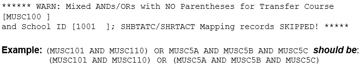
Mappings which receive this WARN message will be SKIPPED and not processed. Parenthesis should be added to the Banner mappings in the appropriate places and then the Banner mapping extract rerun. Then the mapping extract should generate the appropriate mapping records for these more complex scenarios in Degree Works.
Added a WARN message to the mapping extract to identify mappings that have different Primary Connectors and mixed AND/OR connectors with parentheses. This condition causes the Mapping Extract to quit prematurely.
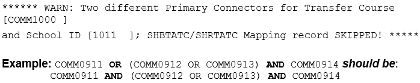
Mappings which receive this WARN message will be SKIPPED and not processed. The Banner mappings should be fixed to use the same Primary Connectors in the appropriate places and then the Banner mapping extract rerun. Then the mapping extract should generate the appropriate mapping records for this scenario in Degree Works.
Added a WARN message to the mapping extract to identify duplicate mappings. The duplicate mapping will be skipped and not written to the dap_mapping_dtl.
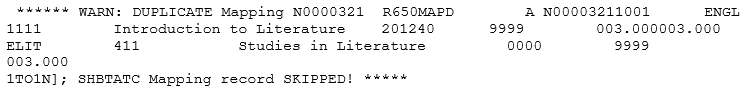
Mappings which receive this WARN message will be SKIPPED and not processed. The Banner mappings that cause duplicate warnings should be fixed, but the duplicate mappings were not written to Degree Works so the mapping extract does NOT have to be rerun.
Example mapping scenarios that include both AND/OR connectors and parentheses are included after the mapping definitions below. The primary connector between the set of parentheses is defined. If a primary OR mapping is found, the single OR mappings are listed followed by a list of courses included with AND connectors. If a primary AND mapping is found, the single AND mappings are listed followed by a list of courses included with OR connectors. Finally some of the columns from the dap_mapping_dtl are listed showing how the mapping scenario was processed.
SQL used to read the SHBTATC table
SELECT a.SHBTATC_SBGI_CODE,
a.SHBTATC_PROGRAM,
a.SHBTATC_TLVL_CODE,
a.SHBTATC_SUBJ_CODE_TRNS,
a.SHBTATC_CRSE_NUMB_TRNS,
a.SHBTATC_TERM_CODE_EFF_TRNS,
a.SHBTATC_TRNS_TITLE,
a.SHBTATC_TRNS_LOW_HRS,
a.SHBTATC_TRNS_HIGH_HRS,
a.SHBTATC_TRNS_REVIEW_IND,
a.SHBTATC_TAST_CODE,
a.SHBTATC_TRNS_CATALOG,
a.SHBTATC_TGRD_CODE_MIN,
a.SHBTATC_GROUP,
a.SHBTATC_GROUP_PRIMARY_IND"
FROM SHBTATC a
WHERE a.SHBTATC_TRNS_REVIEW_IND = 'Y' AND
a.SHBTATC_TAST_CODE IN
(SELECT STVTAST_CODE FROM STVTAST WHERE STVTAST_STATUS_IND = 'A')
SQL used to read the SHRTATC table
SELECT a.SHRTATC_SBGI_CODE,
a.SHRTATC_PROGRAM,
a.SHRTATC_TLVL_CODE,
a.SHRTATC_SUBJ_CODE_TRNS,
a.SHRTATC_CRSE_NUMB_TRNS,
a.SHRTATC_TERM_CODE_EFF_TRNS,
a.SHRTATC_SEQNO,
a.SHRTATC_CONNECTOR,
a.SHRTATC_SUBJ_CODE_INST,
a.SHRTATC_CRSE_NUMB_INST,
a.SHRTATC_INST_TITLE,
a.SHRTATC_INST_CREDITS_USED,
a.SHRTATC_GROUP
FROM SHRTATC a
WHERE a.SHRTATC_SBGI_CODE= SHBTATC_SBGI_CODE AND
a.SHRTATC_PROGRAM = SHBTATC_PROGRAM AND
a.SHRTATC_TLVL_CODE = SHBTATC_TLEVL_CODE AND
a.SHRTATC_SUBJ_CODE_TRNS = SHBTATC_SUBJ_CODE_TRNS AND
a.SHRTATC_CRSE_NUMB_TRNS = SHBTATC_CRSE_NUMB_TRNS AND
a.SHRTATC_TERM_CODE_EFF_TRNS = SHBTATC_TERM_CODE_EFF_TRNS
SQL used to read the SHICMT table
SELECT a.SHRICMT_SBGI_CODE,
a.SHRICMT_PROGRAM,
a.SHRICMT_TLVL_CODE,
a.SHRICMT_SUBJ_CODE_TRNS,
a.SHRICMT_CRSE_NUMB_TRNS,
a.SHRICMT_TERM_CODE_EFF,
a.SHRICMT_SUBJ_CODE_INST,
a.SHRICMT_CRSE_NUMB_INST,
a.SHRICMT_SEQNO,
a.SHRICMT_SHRTATC_SEQNO,
a.SHRICMT_TEXT,
a.SHRICMT_GROUP
FROM SHRICMT a
WHERE a.SHRICMT_SEQNO IN (1,2) AND
a.SHRICMT_SHRTATC_SEQNO = SHRTATC_SEQ_NO AND
a.SHRICMT_SBGI_CODE= SHRTATC_SBGI_CODE AND
a.SHRICMT_PROGRAM = SHRTATC_PROGRAM AND
a.SHRICMT_TLVL_CODE = SHRTATC_ TLEVL_CODE AND
a.SHRICMT_SUBJ_CODE_TRNS = SHRTATC_ SUBJ_CODE_TRNS AND
a.SHRICMT_CRSE_NUMB_TRNS = SHRTATC_CRSE_NUMB_TRNS AND
a.SHRICMT_TERM_CODE_EFF = SHRTATC_ TERM_CODE_EFF_TRNS
These records are bridged into the DAP_MAPPING_DTL table in Degree Works.
| Field Name | Banner Data |
|---|---|
| dap_map_id | Nnnnnnnn where nnnnnnn is a number representing the mapping set, for example N0000001. Each dap_map_cond_dtl associated with the mapping has the same dap_map_id as the dap_mapping_dtl. |
| dap_school_id | SHBTATC_SBGI_CODE |
| dap_tr_disc | SHBTATC_SUBJ_CODE_TRNS |
| dap_tr_crse_num | SHBTATC_CRSE_NUMB_TRNS |
| dap_tr_title | SHBTATC_TRNS_TITLE |
| dap_tr_catyr_beg | The STVACYR value associated with SHBTATC_TERM_CODE_EFF_TRNS |
| dap_tr_catyr_end | The prior STVACYR value associated with SHBTATC_TERM_CODE_EFF_TRNS of a future entry in SHBTATC with the same key (SHBTATC_SBGI_CODE, SHBTATC_SUBJ_CODE_TNRS and SHBTATC_CRSE_NUMB_TRNS). If no future entry exists, set to 9999. |
| dap_tr_cr_min | SHBTATC_TRNS_LOW_HOURS converted to a format of 9999.999. |
| dap_tr_cr_max | SHBTATC_TRNS_HIGH_HOURS converted to a format of 9999.999. |
| dap_tr_gr_min | SHBTATC_ TGRD_CODE_MIN |
| dap_tr_gr_max | Not extracted. Loaded with BLANKS. |
| dap_tr_yrs_ago | Not extracted. Loaded with BLANKS. |
| dap_discipline | SHRTATC_SUBJ_CODE_INST |
| dap_course_num | SHRTATC_CRSE_NUMB_INST |
| dap_section | Not extracted. Loaded with BLANKS. |
| dap_course_title | SHRTATC_INST_TITLE |
| dap_cat_yr_start | The earliest Catalog Year this course was valid at your institution. Use value from STVACYR. |
| dap_cat_yr_stop | The Catalog Year this course is no longer valid at your institution. Use value from STVACYR, and 9999 if course is currently valid. |
| dap_cr_earn | SHRTATC_INST_CREDITS_USED converted to a format of 9999.999. |
| dap_comment1 | SHRICMT_TEXT where SHRICMT_SEQNO = 1 |
| dap_comment2 | SHRICMT_TEXT where SHRICMT_SEQNO = 2 |
| dap_authorizer | Not extracted. Loaded with BLANKS. |
| dap_auth_date | Not extracted. Loaded with BLANKS. |
| dap_articulation | The articulation code (1/M transfer courses from SHBTATC on the left, TO, 1/M local courses from SHRTATC on the right): 1TO1 = One-to-One: One transfer SHBTATC course to one local SHRTATC course. 1TOM = One-to-Many: One transfer SHBTATC course matches the key in two or more local SHRTATC course records. MTO1 = Many-to-One: Two or more transfer SHBTATC records exist with the same Group code and map to one local SHRTATC course record. MTOM = Many-to-Many: Two or more transfer SHBTATC course records are found with the same Group code and map to two or more local SHRTATC course records. |
| dap_cond_flag | Y/N flag indicating that mapping conditions exist. If SHBTATC_PROGRAM is populated, a dap_map_cond_dtl will be created and this flag will be set to Y. The associated dap_map_cond_dtl must contain the same dap_map_id. |
Examples containing both AND/OR connectors and a pair of parentheses:
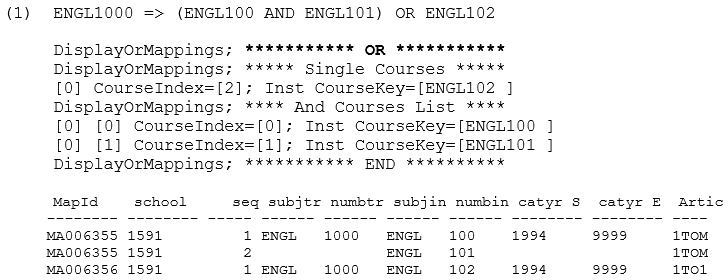
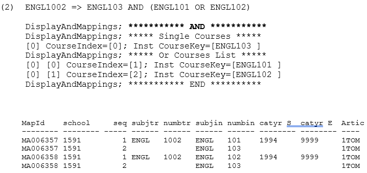
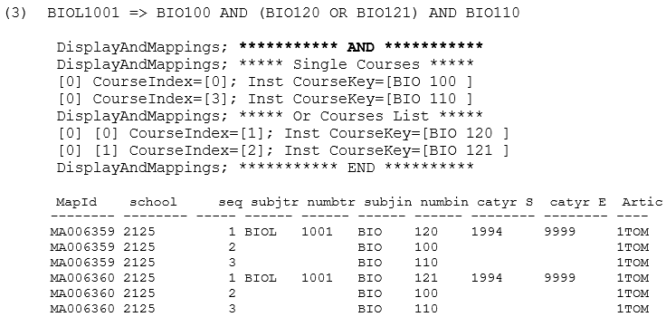
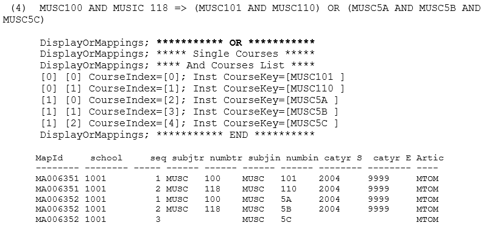
R655MAPA - DAP Map Attributes Record for Banner BIF
A dap_map_attr_dtl record is created for each SHRTRAT found linked to the mapping.
Degree Works only needs to know the institutional course. It does not need to record the transfer course. After an articulation is complete the local course will be looked up along with the mapping-id that was used for the articulation to find the transfer attributes.
| Field Name | Banner Data |
|---|---|
| dap_map_id | Use the same dap_map_id as the associated dap_mapping_dtl. |
| dap_discipline | The institutional course discipline: SHRTRAT_SUBJ_CODE_INST |
| dap_course_num | The institutional course number: SHRTRAT_CRSE_NUMB_INST |
| dap_course_title | The institutional course title: SHRTATC_INST_TITLE |
| dap_attr_key | For Banner schools this is always ATTRIBUTE. |
| dap_attr_code | The SHRTRAT_ATTR_CODE |
R658MAPC - DAP Map Conditions Record for Banner BIF
This record contains information for the dap_map_cond_dtl and is an optional table.
A dap_map_cond_dtl record is created for SCHOOL when the SHBTATC_TLVL_CODE column of the SHBTATC record is populated.
When ProgramAsDegree=N the PROGRAM condition is not bridged because in Transfer Equivalency Self-Service, the program the student enters is not available to checked when the articulation occurs.
When ProgramAsDegree=Y the PROGRAM condition is bridged but the UCX-TRQ061 PROGRAM entry should point to the DEGREE value on the dap_applicnt_mst.
These records are bridged into the DAP_MAPCOND_DTL table in Degree Works.
| Field Name | Banner Data |
|---|---|
| dap_map_id | Use the same dap_map_id as the associated dap_mapping_dtl. |
| dap_school_id | SHBTATC_SBGI_CODE, or the same dap_school_id as the associated dap_mapping_dtl. |
| dap_cond_name | PROGRAM |
| dap_cond_op | Use the equals sign = |
| dap_cond_value | SHBTATC_PROGRAM from the SHBTATC record which populated the associated dap_mapping_dtl. |
| Field Name | Banner Data |
|---|---|
| dap_map_id | Use the same dap_map_id as the associated dap_mapping_dtl. |
| dap_school_id | SHBTATC_SBGI_CODE, or the same dap_school_id as the associated dap_mapping_dtl. |
| dap_cond_name | SCHOOL |
| dap_cond_op | Use the equals sign = |
| dap_cond_value | SHBTATC_TLVL_CODE from the SHBTATC record which populated the associated dap_mapping_dtl. |
R702ETSM - ETS Record for Banner BIF
The ETS Master data is obtained from three tables: STVSBGI - contains the ETS Code, School Name, and Type and is the main driver to the other two tables linked by ETS Code. SOBSBGI - contains the city and state for each school. SORBTAG - contains the Calendar code.
SQL used to read the STVSBGI table
SELECT STVSBGI_CODE,
STVSBGI_TYPE_IND,
STVSBGI_DESC
FROM STVSBGI
ORDER BY STVSBGI_CODE;
SAMPLE Data
STVSBGI_CODE STVSBGI_SBGI_CODE
------------ ------------------------------
CCCG1000 University of Memphis
CCCG1001 University of Maryland
CCCG1002 University of Florida
CCCG1003 Universite de Paris
CCCG1004 Universite de Montreal
CCCG1005 University of Los Angeles
CCCG1006 University of Fresno
CCCG1007 University of Fulton
CCCG1008 University of Chicago
CCCG1009 University of Boston
CCCG1010 University of Vermont
These records are bridged into the RAD_ETS_MST table in Degree Works.
| Field Name | Banner Data |
|---|---|
| HEADER | This is a 28-byte field identifying the record as one containing rad_ets_mst data. It is composed of an ETS plus 7 bytes of spaces, an 8-byte IDENTIFIER (R702ETSM for the rad_ets_mst), an 8-byte rad_term (set to spaces for this table) and a 2-byte ACTION-FLAG (A=Add, D=Delete, M=Modify). Example: 4854......R702ETSM........A. (periods represent spaces). . |
| rad_ets_code | STVSBGI_CODE This element is the school code your system uses. If your institution uses ETS, it is the ETS code assigned by the Education Testing Service. If your school does not ETS then it whatever you have stored in STVSBGI – we simply refer to it as ETS in Degree Works. |
| rad_ets_school | STVSBGI_SBGI_CODE This element is the name of the school. Example: University of Washington |
| rad_ets_city | SOBSBGI_CITY |
| rad_ets_state | SOBSBGI_STATE |
| rad_ets_type | SORBTAG_HLWK_CODE This element defines the highest degree offered or college level indicating a 4-year, 2-year or other school. Examples: 4YR, 2YR. |
| rad_calendar | SORBTAG_CALD_CODE This element defines the calendar structure for the institution's academic year. Examples: S = Semester, Q = Quarter. |
R800UCXT - UCX Record for Banner BIF
The UCX tables included in this document are those included for STV data tables that will be bulk loaded from the Banner student system into Degree Works UCX tables.
Only UCX tables that are being sent in bulk from the Banner database are listed here. For a complete list of UCX tables used by Degree Works, see Bridge Interface Format. Ellucian will supply its standard UCX tables and train your site in Controller for maintenance of the codes. Use the Controller application for maintaining the UCX records after they have been bridged from Banner to Degree Works.
The UCX tables may be rolled from Banner in bulk (all tables in one run of the RAD36 UCX job in Transit) or one-by-one using a bannerextract ucx file containing a list of Degree Works UCX tables to be reloaded from Banner. For details on how to run the ucx bannerextract for all and selected Degree Works UCX tables, see the Extract scheduling topic.
| UCX | Key | Description | Banner Table |
|---|---|---|---|
| UCX-AUD027 | 12 | Major What-If Picklist | STVMAJR |
| UCX-AUD029 | 12 | Minor What-If Picklist | STVMAJR |
| UCX-STU016 | 8 | Term Codes | STVTERM |
| UCX-STU023 | 12 | Major Codes | STVMAJR |
| UCX-STU024 | 12 | Minor Codes | STVMAJR |
| UCX-STU035 | 4 | Catalog Years | STVTERM |
| UCX-STU050 | 4 | Attributes | STVATTR |
| UCX-STU305 | 6 | Student Level Codes | STVCLAS |
| UCX-STU306 | 2 | Student Status Codes | STVSTYP |
| UCX-STU307 | 12 | Degree Code | STVDEGC |
| UCX-STU316 | 12 | Program Codes | SMRPRLE |
| UCX-STU346 | 2 | Calendar Codes | STVACCL |
| UCX-STU350 | 2 | School Codes | STVLEVL |
| UCX-STU352 | 12 | Discipline Code | STVSUBJ |
| UCX-STU356 | 18 | Grade Type Code | STVGMOD, SHRGRDE, SHRGRDO |
| UCX-STU385 | 24 | Grade Information Table | STVGMOD, SHRGRDE, SHRGRDO |
| UCX-STU560 | 2 | College Codes | STVCOLL |
| UCX-STU563 | 12 | Concentration Codes | STVMAJR |
UCX-AUD027 - STVMAJR: What-If Picklist Major Codes
| Field Name | Banner Data |
|---|---|
| HEADER | UCX-AUD027.......R800UCXT........A. (periods represent spaces). |
| UCX TABLE | UCX-AUD027 |
| UCX CODE | STVMAJR_CODE (4) + 26 blanks if the STVMAJR_VALID_MAJOR_IND = Y. Leading spaces are removed. |
| UCX VALUE | |
| Description | STVMAJR_DESC (30) |
UCX-AUD029 - STVMAJR: What-If Picklist Minor Codes
| Field Name | Banner Data |
|---|---|
| HEADER | UCX-AUD029.......R800UCXT........A. (periods represent spaces). |
| UCX TABLE | UCX-AUD029 |
| UCX CODE | STVMAJR_CODE (4) + 26 blanks if the STVMAJR_VALID_MINOR_IND = Y. Leading spaces are removed. |
| UCX VALUE | |
| Description | STVMAJR_DESC (30) |
UCX-STU016 - STVTERM: Term Codes
| Field Name | Banner Data |
|---|---|
| HEADER | UCX-STU016.......R800UCXT........A. (periods represent spaces). |
| UCX TABLE | UCX-STU016 |
| UCX CODE | STVTERM_CODE (6) + 24 blanks. |
| UCX VALUE | |
| Description | STVTERM_DESC (truncated from 30-bytes to 12-bytes). Some of these term descriptions may need to be fixed using Controller after the data has been rolled from Banner. |
| Long Description | STVTERM_DESC – the full 30-byte description |
| Filler | The full STVTERM_DESC (30) is being loaded into this FILLER field for reference purposes. |
| Catalog Year | STVTERM_ACYR_CODE (4) |
| Web Planner | Set to Y if term starts in the future; set to N if term started in the past. |
| Term Type | Filled with FALL, WINTER, SPRING or SUMMER if description contains any of those values. |
| Show In Web TreQer | Set to Q if term starts in the future; set to Y if term started in the past. |
| Financial Aid Year | STVTERM_FA_PROC_YR |
| Show in SEP | Set to Y if term starts in the future; set to N if term started in the past. |
UCX-STU023 - STVMAJR: Major Codes
| Field Name | Banner Data |
|---|---|
| HEADER | UCX-STU023.......R800UCXT........A. (periods represent spaces). |
| UCX TABLE | UCX-STU023 |
| UCX CODE | STVMAJR_CODE (4) + 26 blanks if the STVMAJR_VALID_MAJOR_IND = Y. Leading spaces are removed. |
| UCX VALUE | |
| Description | STVMAJR_DESC (30) |
UCX-STU024 - STVMAJR: Minor Codes
| Field Name | Banner Data |
|---|---|
| HEADER | UCX-STU024.......R800UCXT........A. (periods represent spaces). |
| UCX TABLE | UCX-STU024 |
| UCX CODE | STVMAJR_CODE (4) + 26 blanks if the STVMAJR_VALID_MINOR_IND = Y. Leading spaces are removed. |
| UCX VALUE | |
| Description | STVMAJR_DESC (30) |
UCX-STU035 - STVTERM: Catalog Years
| Field Name | Banner Data |
|---|---|
| HEADER | UCX-STU035.......R800UCXT........A. (periods represent spaces). |
| UCX TABLE | UCX-STU035 |
| UCX CODE | STVTERM_ACYR (4) + 26 blanks |
| UCX VALUE | |
| Description | STVTERM_DESC (30) |
UCX-STU050 - STVATTR: Attribute Codes
| Field Name | Banner Data |
|---|---|
| HEADER | UCX-STU050.....R800UCXT........A. (periods represent spaces). |
| UCX TABLE | UCX-STU050 |
| UCX CODE | STVATTR__CODE (4) + 26 blanks. |
| UCX VALUE | |
| Description | STVATTR_DESC (30) |
UCX-STU305 - STVCLAS: Student Level Codes
| Field Name | Banner Data |
|---|---|
| HEADER | UCX-STU305...R800UCXT........A. (periods represent spaces). |
| UCX TABLE | UCX-STU305 |
| UCX CODE | STVCLAS_CODE (2) + 28 blanks. |
| UCX VALUE | |
| Description | STVCLAS_DESC (30) |
| Short Description | STVCLAS_DESC (truncated to 6-bytes: fix after loaded from Banner) |
UCX-STU306 - STVSTYP: Student Status Codes
| Field Name | Banner Data |
|---|---|
| HEADER | UCX-STU306...R800UCXT........A. (periods represent spaces). |
| UCX TABLE | UCX-STU306 |
| UCX CODE | STVSTYP_CODE (1) + 29 blanks. |
| UCX VALUE | |
| Description | STVSTYP_DESC (30) |
UCX-STU307 - STVDEGC: Degree Codes
| Field Name | Banner Data |
|---|---|
| HEADER | UCX-STU307.....R800UCXT........A. (periods represent spaces). |
| UCX TABLE | UCX-STU307 |
| UCX CODE | STVDEGC_CODE (4) + 26 blanks. |
| UCX VALUE | |
| Description | STVDEGC_DESC (30) |
| Short Description | STVDEGC_CODE |
UCX-STU316 - SMRPRLE: Program Codes
| Field Name | Banner Data |
|---|---|
| HEADER | UCX-STU316.....R800UCXT........A. (periods represent spaces). |
| UCX TABLE | UCX-STU316 |
| UCX CODE | SMRPRLE_PROGRAM (12) + 18 blanks. |
| UCX VALUE | |
| Description | SMRPRLE_PROGRAM_DESC (30) |
UCX-STU346 - STVACCL: Calendar Codes
| Field Name | Banner Data |
|---|---|
| HEADER | UCX-STU346.....R800UCXT........A. (periods represent spaces). |
| UCX TABLE | UCX-STU346 |
| UCX CODE | STVACCL_CODE (2) + 28 blanks. |
| UCX VALUE | |
| Description | STVACCL_DESC (30) |
UCX-STU350 - STVLEVL: School Codes
| Field Name | Banner Data |
|---|---|
| HEADER | UCX-STU350.....R800UCXT........A. (periods represent spaces). |
| UCX TABLE | UCX-STU350 |
| UCX CODE | STVLEVL_CODE (2) + 28 blanks. |
| UCX VALUE | |
| Description | STVLEVL_DESC (30) |
UCX-STU352 - STVSUBJ: Discipline Codes
| Field Name | Banner Data |
|---|---|
| HEADER | UCX-STU352.....R800UCXT........A. (periods represent spaces). |
| UCX TABLE | UCX-STU352 |
| UCX CODE | STVSUBJ_CODE (4) + 26 blanks. Additional Rules:
|
| UCX VALUE | |
| Description | STVSUBJ_DESC (30) |
| New Discipline | The dap69 conversion program translates the old value to this value if the course is not found in UCX-CFG069. |
| Discipline Status | A or Blank=Active, I=Inactive. The BannerBridge will SKIP classes with an Inactive discipline and will NOT load them into the rad_class_dtl (current and history classes) or the rad_transfer_dtl. |
UCX-STU356 - STVGMOD: Grade Types
The key to UCX-STU356 is a composite School Key (LEVL_Code) of 12-bytes plus the Grade Type code (GMOD_Code) of 2-bytes. The SHRGRDO table containing the valid grade combinations for each School (Level) is used as the driver for the loading of the Grade Type data.
However, both the SHRGRDO and SHRGRDE tables are used in the standard bannerextract SQL:
SELECT b.SHRGRDE_LEVL_CODE,
a.SHRGRDO_GMOD_CODE,
b.SHRGRDE_CODE,
b.SHRGRDE_ABBREV,
b.SHRGRDE_TERM_CODE_EFFECTIVE,
b.SHRGRDE_QUALITY_POINTS,
b.SHRGRDE_ATTEMPTED_IND,
b.SHRGRDE_COMPLETED_IND,
b.SHRGRDE_PASSED_IND,
b.SHRGRDE_GPA_IND,
b.SHRGRDE_GRDE_STATUS_IND,
b.SHRGRDE_NUMERIC_VALUE,
b.SHRGRDE_REPEAT_INCLUDE_IND)
FROM SHRGRDO a, SHRGRDE b
WHERE a.SHRGRDO_GRDE_CODE = b.SHRGRDE_CODE
AND a.SHRGRDO_LEVL_CODE = b.SHRGRDE_LEVL_CODE
AND a.SHRGRDO_TERM_CODE_EFFECTIVE = b.SHRGRDE_TERM_CODE_EFFECTIVE
AND b.SHRGRDE_TERM_CODE_EFFECTIVE = (
SELECT MAX(SHRGRDE.SHRGRDE_TERM_CODE_EFFECTIVE)
FROM SHRGRDE
WHERE SHRGRDE.SHRGRDE_CODE = b.SHRGRDE_CODE
AND SHRGRDE.SHRGRDE_LEVL_CODE = b.SHRGRDE_LEVL_CODE
AND SHRGRDE.SHRGRDE_GRDE_STATUS_IND = 'A')
AND b.SHRGRDE_GRDE_STATUS_IND = 'A'
ORDER BY b.SHRGRDE_LEVL_CODE,
a.SHRGRDO_GMOD_CODE,
b.SHRGRDE_CODE,
b.SHRGRDE_TERM_CODE_EFFECTIVE DESC
Invalid combinations should be deleted from UCX_STU356 using Controller.
| Field Name | Banner Data |
|---|---|
| HEADER | UCX-STU356.....R800UCXT........A. (periods represent spaces). |
| UCX TABLE | UCX-STU356 |
| UCX CODE | STVLEVEL_CODE (12) + STVGMOD_CODE (2) + 16 blanks. School Code (12) plus the Grade Type Code (2) = 14-byte key |
| UCX VALUE | |
| Range Code | Hardwired to F for A-F grade. |
| Description | STVGMOD_DESC |
| Audit Flag | Hardwired to N. For Audit Grade Type codes this flag should be manually set to Y using Controller after UCX-STU356 is loaded from Banner. |
| Repeat Policy | Hardwired to 1. Depending on your institution's Repeat Policy this value may need to be changed on the appropriate records using Controller after UCX-STU356 is loaded from Banner. Valid values are 1-6: 1 - Keep most recent repeat; 2 - Keep repeat with highest grade; 3- Keep all repeats; 4 - Keep most recent credits, all count in the GPA; 5 - Keep credits of highest grade, all count in the GPA; 6 - Keep this repeat |
| DAP Process Flag | Hardwired to Y indicating all Grade Types will be processed by Degree Works. If any School/Grade Types are NOT to be processed by Degree Works set this flag to N using Controller after UCX-STU356 is loaded from Banner. |
UCX-STU385 - SHRGRDE: Grade Table
The key to UCX-STU385 is a composite School Key (LEVL_Code) of 12-bytes plus the Grade Type code (GMOD_Code) of 2-bytes plus the Grade (GRDE Code) of 6-bytes. The SHRGRDO table containing the valid grade combinations for each School (Level) is used as the driver for the loading of the Grade data.
However, both the SHRGRDO and SHRGRDE tables are used in the standard bannerextract SQL:
SELECT b.SHRGRDE_LEVL_CODE,
a.SHRGRDO_GMOD_CODE,
b.SHRGRDE_CODE,
b.SHRGRDE_ABBREV,
b.SHRGRDE_TERM_CODE_EFFECTIVE,
b.SHRGRDE_QUALITY_POINTS,
b.SHRGRDE_ATTEMPTED_IND,
b.SHRGRDE_COMPLETED_IND,
b.SHRGRDE_PASSED_IND,
b.SHRGRDE_GPA_IND,
b.SHRGRDE_GRDE_STATUS_IND,
b.SHRGRDE_NUMERIC_VALUE,
b.SHRGRDE_REPEAT_INCLUDE_IND)
FROM SHRGRDO a, SHRGRDE b
WHERE a.SHRGRDO_GRDE_CODE = b.SHRGRDE_CODE
AND a.SHRGRDO_LEVL_CODE = b.SHRGRDE_LEVL_CODE
AND a.SHRGRDO_TERM_CODE_EFFECTIVE = b.SHRGRDE_TERM_CODE_EFFECTIVE
AND b.SHRGRDE_TERM_CODE_EFFECTIVE = (
SELECT MAX(SHRGRDE.SHRGRDE_TERM_CODE_EFFECTIVE)
FROM SHRGRDE
WHERE SHRGRDE.SHRGRDE_CODE = b.SHRGRDE_CODE
AND SHRGRDE.SHRGRDE_LEVL_CODE = b.SHRGRDE_LEVL_CODE
AND SHRGRDE.SHRGRDE_GRDE_STATUS_IND = 'A')
AND b.SHRGRDE_GRDE_STATUS_IND = 'A'
ORDER BY b.SHRGRDE_LEVL_CODE,
a.SHRGRDO_GMOD_CODE,
b.SHRGRDE_CODE,
b.SHRGRDE_TERM_CODE_EFFECTIVE DESC
Invalid combinations should be deleted from UCX_STU385 using Controller.
After this grade information has been extracted from Banner and loaded into UCX_STU385 many additional settings may be manually made for Degree Works using Controller (e.g., several Override flags, Transfer Repeat flags, Transfer Grade value and whether or not to include the UCX_STU385 record in the SEP picklist).
| Field Name | Banner Data |
|---|---|
| HEADER | UCX-STU385.....R800UCXT........A. (periods represent spaces). |
| UCX TABLE | UCX-STU385 |
| UCX CODE |
STVLEVEL_CODE (12) + STVGMOD_CODE (2) + 4 blanks + SHRGRDO_GRDE (6) + 10 blanks. School Code (12) plus Grade Type (2) plus Grade (6) = 20-byte key. |
| UCX VALUE | |
| Numeric Grade | SHRGRDE_QUALITY_POINTS. The Banner quality point float value is converted to a 9999v999 value with the decimal point removed. For example, a value of 3.5 is converted to 0003500. |
| Graded Attempted | Y/N. SHRGRDE_GPA_IND |
| Incomplete Flag | Y/N. If the SHRGRDE_COMPLETED_IND = Y set this Incomplete flag to N. Otherwise set this Incomplete flag to Y. |
| Use in DW GPA Calculator | Y/N. SHRGRDE_GPA_IND |
UCX-STU560 - STVCOLL: College Codes
| Field Name | Banner Data |
|---|---|
| HEADER | UCX-STU560.....R800UCXT........A. (periods represent spaces). |
| UCX TABLE | UCX-STU560 |
| UCX CODE | STVCOLL_CODE (2) + 28 blanks. |
| UCX VALUE | |
| Description | STVCOLL_DESC (30) |
UCX-STU563 - STVMAJR: Concentration Codes
| Field Name | Banner Data |
|---|---|
| HEADER | UCX-STU563...R800UCXT........A. (periods represent spaces). |
| UCX TABLE | UCX-STU563 |
| UCX CODE | STVMAJR_CODE (4) + 26 blanks if the STVMAJR_VALID_CONCENTRATN_IND = Y. Leading spaces are removed. |
| UCX VALUE | |
| Description | STVMAJR_DESC (30) |
R900CURR - Curriculum Rules Record for Banner BIF
Several Banner tables are used to obtain the data for this Curriculum Rules record.
| SOBCURR | Curriculum Rule Table |
| SORMCRL | Curriculum Control Table |
| SORCMJR | Curriculum Major Table |
| SORCMNR | Curriculum Minor Table |
| SORCCON | Curriculum Concentration Table |
The following documentation outlines the columns extracted from Banner for the rad_currrule_dtl. The data in this table will be used to control the drop-down lists on the What-If audit page if the core.whatIf.filterMode setting is R. If this flag is not R, the standard What-If logic will be used that follows various configurations on several UCX tables to determine what majors, minors, concentrations, and so on are to be used in the drop-down lists for What-If audits.
The following SQL statements are executed to retrieve the Curriculum Rule records from Banner:
Customize your entries in the integration.banner.extract.config Shepherd setting as required – the columns listed within <> will be replaced with the actual data for the record being processed:
SQL used to read the SOBCURR table:
SELECT a.SOBCURR_CURR_RULE,
a.SOBCURR_TERM_CODE_INIT,
a.SOBCURR_LEVL_CODE,
a.SOBCURR_CAMP_CODE,
a.SOBCURR_COLL_CODE,
a.SOBCURR_DEGC_CODE,
a.SOBCURR_PROGRAM
FROM SOBCURR a
ORDER BY a.SOBCURR_CURR_RULE;
SQL used to read the Control records from the SORMCRL table for the SOBCURR_CURR_RULE:
SELECT a.SORMCRL_CURR_RULE,
a.SORMCRL_TERM_CODE_EFF,
a.SORMCRL_REC_IND,
a.SORMCRL_ADM_IND,
a.SORMCRL_STU_IND,
a.SORMCRL_HIS_IND,
a.SORMCRL_DAU_IND
FROM SORMCRL a
WHERE a.SORMCRL_CURR_RULE = <sobcurr_curr_rule>
AND a.SORMCRL_TERM_CODE_EFF >= <sobcurr_term_code_init>
ORDER BY a.SORMCRL_CURR_RULE,
a.SORMCRL_TERM_CODE_EFF;
SQL used to read the Major Rules from the SORCMJR table for the SOBCURR_CURR_RULE:
SELECT a.SORCMJR_CURR_RULE,
a.SORCMJR_CMJR_RULE,
a.SORCMJR_TERM_CODE_EFF,
a.SORCMJR_ADM_IND,
a.SORCMJR_STU_IND,
a.SORCMJR_HIS_IND,
a.SORCMJR_REC_IND,
a.SORCMJR_DAU_IND,
a.SORCMJR_MAJR_CODE
FROM SORCMJR a
WHERE a.SORCMJR_DAU_IND = 'Y'
AND a.SORCMJR_CURR_RULE = <sobcurr_curr_rule>
ORDER BY a.SORCMJR_CURR_RULE,
a.SORCMJR_MAJR_CODE,
a.SORCMJR_TERM_CODE_EFF DESC,
a.SORCMJR_CMJR_RULE;
SQL used to read the Minor Rules from the SORCMNR table for the SOBCURR_CURR_RULE:
SELECT a.SORCMNR_CURR_RULE,
a.SORCMNR_CMNR_RULE,
a.SORCMNR_TERM_CODE_EFF,
a.SORCMNR_ADM_IND,
a.SORCMNR_STU_IND,
a.SORCMNR_HIS_IND,
a.SORCMNR_REC_IND,
a.SORCMNR_DAU_IND,
a.SORCMNR_MAJR_CODE_MINR
FROM SORCMNR a
WHERE a.SORCMNR_DAU_IND = 'Y'
AND a.SORCMNR_CURR_RULE = <sobcurr_curr_rule>
ORDER BY a.SORCMNR_CURR_RULE,
a.SORCMNR_MAJR_CODE_MINR,
a.SORCMNR_TERM_CODE_EFF DESC;
SQL used to read the Concentration Rules from the SORCCON table for the SOBCURR_CURR_RULE:
SELECT a.SORCCON_CURR_RULE,
a.SORCCON_CCON_RULE,
a.SORCCON_TERM_CODE_EFF,
a.SORCCON_ADM_IND,
a.SORCCON_STU_IND,
a.SORCCON_HIS_IND,
a.SORCCON_REC_IND,
a.SORCCON_DAU_IND,
a.SORCCON_CMJR_RULE,
a.SORCCON_MAJR_CODE_CONC
FROM SORCCON a
WHERE a.SORCCON_DAU_IND = 'Y'
AND a.SORCCON_CURR_RULE = <sobcurr_curr_rule>
ORDER BY a.SORCCON_CURR_RULE,
a.SORCCON_MAJR_CODE_CONC,
a.SORCCON_TERM_CODE_EFF DESC,
a.SORCCON_CMJR_RULE;
SQL used to get the Attach Value from the SORCMJR table for the SORCCON_CMJR_RULE:
SELECT a.SORCMJR_CURR_RULE,
a.SORCMJR_CMJR_RULE,
a.SORCMJR_TERM_CODE_EFF,
a.SORCMJR_ADM_IND,
a.SORCMJR_STU_IND,
a.SORCMJR_HIS_IND,
a.SORCMJR_REC_IND,
a.SORCMJR_DAU_IND,
a.SORCMJR_MAJR_CODE
FROM SORCMJR a
WHERE a.SORCMJR_DAU_IND = 'Y'
AND a.SORCMJR_CMJR_RULE = <sobcurr_curr_rule>
ORDER BY a.SORCMJR_CMJR_RULE,
a.SORCMJR_MAJR_CODE,
a.SORCMJR_TERM_CODE_EFF DESC,
a.SORCMJR_CMJR_RULE
These records are bridged into the RAD_CurrRule_DTL table in Degree Works. This is an optional table for Degree Works.
| Field Name | UCX | Comments |
|---|---|---|
| HEADER | This is a 28-byte field identifying the record as one containing rad_currrule_dtl data. It is composed of a 10-byte code containing the 8-byte CURR_RULE_ID plus 2-bytes of FILLER, an 8-byte IDENTIFIER (R900CURR for the rad_currrule_dtl), an 8-byte term (set to spaces for this table) and a 2-byte ACTION-FLAG (A=Add, D=Delete). Example: 70.…….R900CURR........A.. Spaces are filled with periods (.). |
|
| rad_curr_rule_id | This element is the curriculum rule ID code found in the SOBCURR CURR_RULE. It is a number that is left justified and space-filled. For example, a curr_rule of 70 would be loaded as 70........ where each (.) represents a space (8-byte number + 2-bytes of filler). | |
| rad_cat_yr_start | STU016 STU035 | Calculated using the SORMCRL control table. Refer to the Catalog Start/Stop Processing discussion below for details. |
| rad_cat_yr_stop | STU016 STU035 | Calculated using the SORMCRL control table. Refer to the Catalog Start/Stop Processing discussion below for details. |
| rad_goal_code | R | This element is the code associated with the type of record involved in a degree/goal. Valid values are: |
| rad_goal_value | This element is the actual rad_goal_value recorded for a given curriculum rule for this goal code. Leading spaces are removed from any value placed here. Example: PE becomes PE | |
| rad_attach_code | The SORCCON_CMJR_RULE for a given SORCCON concentration rule is used to lookup the associated SORCMJR record through the SORCMJR_CMJR_RULE. If a record is found this field will be loaded with MAJOR. This code is saying that this concentration is attached or associated with this particular major. |
|
| rad_attach_value | The SORCCON_CMJR_RULE for a given SORCCON concentration rule is used to lookup the associated SORCMJR record through the SORCMJR_CMJR_RULE. If a record is found this field will be loaded with the SORCMJR_MAJR_CODE. So if a major is selected on the What-if page that matches the major in an Attached Value then the concentration picklist will be loaded with the associated concentration rad_goal_value above. In the example data below, the 70 rule has an ECON Major. Furthermore, the Concentration of EUTL has an Attach Major Code of ECON. So, if the student selects an ECON Major on the What-If page the EUTL would be automatically loaded into the Concentration picklist (assuming all configurations are set correctly in the core.whatIf settings). |
Catalog Year Start/Stop Processing
The SOBCURR table is the driver. For each SOBCURR record read, the SORMCRL records for that sobcurr_curr_rule are read and used to calculate a Catalog Year Start and a Catalog Year Stop. This Catalog Year Start/Stop range is used to filter rad_currrule_dtl records against the Catalog Year specified on the What-If page. There may be multiple records for a given SORMCRL_CURR_RULE. The SORMCRL_DAU_IND flag (indicates the curriculum rule is used for Degree Auditing purposes if Y) is being used in the standard integration.banner.extract.config Shepherd setting SQL to filter records from the major, minor, and concentration tables.
The following is an example of how the SORMCRL records are processed for a given curr_rule. First, the SORMCRL table is read using the SOBCURR_CURR_RULE of 70. Four SORMCRL records are found.
| SORMCRL_CURR_RULE | SORMCRL_TERM_CODE_EFF | SORMCRL_DAU_IND |
|---|---|---|
| 70 | 000000 | Y |
| 70 | 200910 | N |
| 70 | 201710 | Y |
| 70 | 201910 | N |
When integration.banner.extract.curriculumRules.multipleRanges.enabled = false
The first SORMCRL_DAU_IND = Y so the SORMCRL_TERM_CODE_EFF of 000000 is looked up on STU016 to get the catalog year, which becomes the rad_cat_yr_start of 0000. The next SORMCRL_DAU_IND value is N, which ends the curriculum rule. The term of 200910 is looked up in STU016 to get a catalog year of 2009 for academic years 2008-2009. That is when the rule ended. It was valid the year before that so go back one year and use 2008 as the rad_cat_yr_stop. The last two SORMCRL records are ignored because we stopped as soon the first N record was seen.70 0000 2008 SCHOOL UG
70 0000 2008 DEGREE BS
70 0000 2008 PROGRAM VAT
70 0000 2008 CAMPUS M
70 0000 2008 COLLEGE M
70 0000 2008 MAJOR ACCT
70 0000 2008 MAJOR ECON
70 0000 2008 MAJOR FIN
70 0000 2008 MINOR ECOM
70 0000 2008 CONC EUTL MAJOR ECONWhen integration.banner.extract.curriculumRules.multipleRanges.enabled = true
The first SORMCRL_DAU_IND = Y so the SORMCRL_TERM_CODE_EFF of 000000 is looked up on STU016 to get the catalog year, which becomes the rad_cat_yr_start of 0000. The next SORMCRL_DAU_IND value is N, which ends the curriculum rule. The term of 200910 is looked up in STU016 to get a catalog year value of 2009 for academic years 2008-2009. That is when the rule ended. It was valid the year before that so go back one year and use 2008 as the rad_cat_yr_stop. Because the multipleRanges setting is true, the extract continues and analyzes the rest of the SORMCRL records. The next record is a Y starting in term 201710, which means the curriculum rule was reactivated. The last record has a flag of N, which ends the rule in term 201910 and means that the rule is also active for years 2017 through 2018 – the catalog years found by looking up those terms in STU016.
70 0000 2008 SCHOOL UG
70 0000 2008 DEGREE BS
70 0000 2008 PROGRAM VAT
70 0000 2008 CAMPUS M
70 0000 2008 COLLEGE M
70 2017 2018 SCHOOL UG
70 2017 2018 DEGREE BS
70 2017 2018 PROGRAM VAT
70 2017 2018 CAMPUS M
70 2017 2018 COLLEGE M
70 0000 2008 MAJOR ACCT
70 0000 2008 MAJOR ECON
70 0000 2008 MAJOR FIN
70 0000 2008 MINOR ECOM
70 0000 2008 CONC EUTL MAJOR ECONThese two sets of ranges tell Degree Works that the curriculum rule is valid between 0000 and 2008 and again between 2017 and 2018.
Majors, Minors, and Concentrations
For the majors, minors, and concentrations attached to curriculum rules, the same logic applies. Here is an example of some majors associated with curriculum rule 31.
| CURR_RULE | CMJR_RULE | TERM_CODE_EFF | DAU_IND | MAJR_CODE |
|---|---|---|---|---|
| 31 | 139 | 199010 | Y | ENGL |
| 31 | 256 | 199010 | Y | ACCT |
| 31 | 12381 | 199010 | Y | CHEM |
| 31 | 255 | 199010 | Y | HIST |
| 31 | 51 | 199510 | Y | ENGL |
| 31 | 52 | 199510 | Y | ACCT |
| 31 | 132 | 199510 | Y | BIOL |
| 31 | 12378 | 200010 | N | ENGL |
| 31 | 12379 | 200010 | N | ACCT |
| 31 | 12380 | 200010 | Y | CHEM |
When integration.banner.extract.curriculumRules.multipleRanges.enabled = false
Major ENGL should be active from 1990 to 1999 because there is an N for term 200010.
Major ACCT should be active from 1990 to 1999 because there is an N for term 200010.
Major CHEM should be active from 1990 to 9999 because there is no N record found.
Major HIST should be active from 1990 to 9999 because there is no N record found.
Major BIOL should be active from 1995 to 9999 because there is no N record found.
These records should then be sent to Degree Works and stored in the rad_currrule_dtl.
| RAD_CURR_RULE_ID | RAD_CAT_YR_START | RAD_CAT_YR_STOP | RAD_GOAL_CODE | RAD_GOAL_VALUE |
|---|---|---|---|---|
| 31 | 1990 | 1999 | MAJOR | ENGL |
| 31 | 1990 | 1999 | MAJOR | ACCT |
| 31 | 1990 | 9999 | MAJOR | CHEM |
| 31 | 1990 | 9999 | MAJOR | HIST |
| 31 | 1995 | 9999 | MAJOR | BIOL |
When integration.banner.extract.curriculumRules.multipleRanges.enabled = true
Major ENGL should be active from 1990 to 1999 because there is an N for term 200010.
Major ACCT should be active from 1990 to 1999 because there is an N for term 200010.
Major CHEM should be active from 1990 to 1994 because in 199510 there is no CHEM record. However, it should then be active again from 2000 to 9999.
Major HIST should be active from 1990 to 1994 because in 199510 there is no HIST record.
Major BIOL should be active from 1995 to 1999 because in 200010 there is no BIOL record.
These records should then be sent to Degree Works and stored in the rad_currrule_dtl.
| RAD_CURR_RULE_ID | RAD_CAT_YR_START | RAD_CAT_YR_STOP | RAD_GOAL_CODE | RAD_GOAL_VALUE |
|---|---|---|---|---|
| 31 | 1990 | 1999 | MAJOR | ENGL |
| 31 | 1990 | 1999 | MAJOR | ACCT |
| 31 | 1990 | 1994 | MAJOR | CHEM |
| 31 | 1990 | 1994 | MAJOR | HIST |
| 31 | 1995 | 1999 | MAJOR | BIOL |
| 31 | 2000 | 9999 | MAJOR | CHEM |
Class repeats/multiple occurrences
When bridging Banner class data into Degree Works, it is necessary to ensure that decisions made about classes taken multiple times are included in the bridged data.
Degree Works will treat repeated coursework based upon the repeat policy information included in the bridged class records. This data is bridged in the rad_repeat_plcy and rad_repeat_ptr columns on the rad_class_dtl and rad_transfer_dtl records. The valid repeat policies that can be used in Degree Works are defined in UCX-AUD047. For each class record which represents a repeat instance, the Repeat Plcy and the Repeat Ptr must be filled in appropriately.
The Repeat policy topic describes how Degree Works treats repeated course work in general along with examples. This section is devoted specifically to the options available to Banner sites in determining how classes that have been taken multiples times in Banner are extracted into Degree Works. Several issues involving these classes are discussed below:
- Repeated Classes versus Repeatable Classes
- Identifying In-Progress Repeats
- Identifying Repeats for Renumbered Courses
- Identifying In-Progress Repeats for Courses that have been Renumbered
Repeated classes versus repeatable classes
A repeated class is a class that has been repeated more than one time for a better grade. A repeatable class is a class that may be taken multiple times for credit (for example, many music, physical education, and art classes).
To identify a repeated class in Banner for classes that have been completed, the Repeat Course Indicator is interogated by the Banner extract: historic class - SHRTCKN_REPEAT_COURSE_IND; transfer class - the SHRTRCE_REPEAT_COURSE. If the repeat course indicator field is BLANK, the class will be processed as a “normal” class for credit. If this field contains an “A”-(Averaged) or “E” (Excluded) value, the class rules defined in the UCX-CFG020 BANNER record for these values will be followed. There is a Historic Skip flag/Repeat Policy and a Transfer Skip flag/Repeat Policy defined for each of these values. For more information, see the UCX-CFG020 BANNER topic. If, however, this field contains an “I” (Included) one of the Repeatable Options defined in the UCX-CFG020 BANNER record is used to determine how to process the class. If it is a repeatable class the rad_repeat_plcy and rad_repeat_ptr will not be loaded. Otherwise it will be treated as a repeated class for a better grade and these two repeat fields will be loaded.
The SHRTCKN_SUBJ_CODE and SHRTCKN_CRSE_NUMB are used to lookup the associated SCBCRSE record in descending sequence by SCBCRSE_EFF_TERM. The first SCBCRSE record returned with a SCBCRSE_EFF_TERM less than or equal to the SHRTCKN_TERM_CODE will be used in the rules defined below.
The valid UCX-CFG020 BANNER Repeatable Options are:
If the Repeatable Option is BLANK, Option “L” will be used as the baseline (default) value.
Option “N” - Do NOT check the SCBCRSE record at all
Load the UCX-CFG020 BANNER “Repeat Policy I” that contains the appropriate “Include” rad_repeat_plcy value. Each historic class with an “I” SHRTCKN_REPEAT_COURSE_IND will be considered as a repeat for a better grade. Each transfer class with an “I” in SHRTRCE_REPEAT_COURSE will be considered as a repeat for a better grade. The rules defined in “UCX-AUD047 - Repeat Policies” will be applied to each of the historic/transfer “I” classes.
Option “L” - Check the SCBCRSE_REPEAT_LIMIT Only
If the REPEAT_LIMIT = ZERO or the REPEAT_LIMIT = NULL, the class is processed as a repeat for a better grade. Otherwise the class is considered repeatable.
Option “U” - Check the SCBCRSE_MAX_RPT_UNITS
If the MAX_RPT_UNITS = NULL, the class is considered repeatable. If the MAX_RPT_UNITS > 0, the class is considered repeatable. Otherwise the class is processed as a repeat for a better grade.
Option “B” - Check both the SCBCRSE_REPEAT_LIMIT and SCBCRSE_MAX_RPT_UNITS
If the REPEAT_LIMIT = NULL and the MAX_RPT_UNITS = NULL, the class is processed as a repeat for a better grade. If the REPEAT_LIMIT = ZERO and the MAX_RPT_UNITS = ZERO, the class is processed as a repeat for a better grade. If the REPEAT_LIMIT > ZERO’ and the MAX_RPT_UNITS = ZERO, the class is processed as a repeat for a better grade. If the REPEAT_LIMIT = ZERO and the MAX_RPT_UNITS > ZERO, the class is processed as a repeat for a better grade. If the REPEAT_LIMIT = NULL and the MAX_RPT_UNITS > ZERO, the class is repeatable. If the REPEAT_LIMIT > ZERO and the MAX_RPT_UNITS = NULL, the class is repeatable. If the REPEAT_LIMIT > ZERO and the MAX_RPT_UNITS > ZERO, the class is repeatable. Otherwise process the class as a repeat for a better grade.
Option “I” - The Credits are Included in the REPEAT_LIMIT and SCBCRSE_MAX_RPT_UNITS
If the REPEAT_LIMIT = 1 and the MAX_RPT_UNITS >= CREDIT_HR_LOW, the class is processed as a repeat for a better grade. If the REPEAT_LIMIT = NULL and the MAX_RPT_UNITS = CREDIT_HR_LOW, the class is processed as a repeat for a better grade. If the REPEAT_LIMIT = NULL and the MAX_RPT_UNITS > CREDIT_HR_LOW, the class is repeatable. If the REPEAT_LIMIT > 1, the class is repeatable. Otherwise process the class as a repeat for a better grade.
In-progress repeats identification
In Banner in-progress classes are stored in the SFRSTCR table, but do not have a repeat indicator defined.
To determine if a current class is repeatable or is being repeated for a better grade, the Repeatable Option edit is performed. If the class is repeatable, the current course is not an in-progress repeat and the rest of the repeat processing is skipped. Otherwise, the current class may have a repeated class counterpart in the historic or transfer tables in which case processing continues with the following In-Progress searches.
Review the UCX-CFG020 BANNER In-Progress Equiv configuration flag. If set to Y, the dap_eqv_crs_mst will be searched for an equivalent course key that matches the current In-Progress class Course Key (Subject + Course Number). This allows courses that have been renumbered over time to still be identified as In-Progress repeats. However, this does require that the equivalency mappings stored in dap_eqv_crs_mst be loaded by the Banner Equivalent extract (ban43). Or, you could load the equivalency mappings into CFG070 manually using Controller and then launch the SYS03 - Copy CFG070 to dap_eqv_crs_mst Transit job to update the dap_eqv_crs_mst with manual changes.
In-progress classes are handled when the UCX_CFG020 BANNER Repeat Policy is B.
For each SFRSTCR current class (linked to SSBSECT through Term Code and Crn) for a given student, the historic SHRTCKN table is read looking for an exact match on Course Key (Subject + Course Number) and Levl Code while NOT matching the current Term Code. If an exact match is found, the UCX_CFG020 BANNER Repeat Policy A will be checked.
If B, the rad_repeat_plcy and rad_repeat_ptr will be spaced out as the class will not be treated as a repeat by the auditor. The rad_class_status will be loaded with CH for Current-History. This flag is only used for informational purposes and shows that the class is part of a repeat scenario. An additional edit will then be made using UCX_CFG020 BANNER Count Averaged Class in Major/Minor GPA.
If Y, the rad_pass_flag will be set to N, which marks the class as not passed (failed) so that this class will count in the major/minor if it could fit, and if not, it will end up in insufficient.
If N, the rad_insuff_flag (insufficient) will be set to Y, which will force the class into the insufficient section of the audit so it will not count in the overall credits. However, it will still affect the GPA.
If not B, the historic BIF rad_repeat_plcy will be loaded with the UCX-CFG020 BANNER I Repeat Policy, and the rad_repeat_ptr record will be loaded with the current Course Key. The current rad_class_dtl BIF record will be loaded with the same rad_repeat_plcy and rad_repeat_ptr. The rad_class_status will be loaded with CH for Current-History. This flag is used only for informational purposes and shows that the class is part of an in-progress repeat scenario.
If an exact match is not found and the UCX-CFG020 BANNER In-Progress Equiv is set to Y, the dap_eqv_crs_mst will be searched for an equivalent Course Key match. If an equivalent Course Key is found for the historic class, the equivalent Course Key will be compared to the current Course Key. If an exact match is found, the UCX_CFG020 BANNER Repeat Policy A will be checked.
If B, the rad_repeat_plcy and rad_repeat_ptr will be spaced out as the class will not be treated as a repeat by the auditor. The rad_class_status will be loaded with CH for Current-History. This flag is used only for informational purposes and shows that the class is part of a repeat scenario. An additional edit will then be made using UCX_CFG020 BANNER Count Averaged Class in Major/Minor GPA.
If Y, the rad_pass_flag will be set to N, which marks the class as not passed (failed) so that this class will count in the major/minor if it could fit, and if not, it will end up in insufficient.
If N, the rad_insuff_flag (insufficient) will be set to Y, which will force the class into the insufficient section of the audit so it will not count in the overall credits. However, it will still affect the GPA.
If not B, the historic BIF rad_repeat_plcy will be loaded with the UCX-CFG020 BANNER I Repeat Policy, and the rad_repeat_ptr record will be loaded with the dap_eqv_crs_mst equivalent Course Key. The current rad_class_dtl BIF record will be loaded with the UCX-CFG020 BANNER I Repeat Policy, and the rad_repeat_ptr record will be loaded with the historic SHRTCKN Course Key. The rad_class_status will be loaded with CH for Current-History. This flag is used only for informational purposes and shows that the class is part of an in-progress repeat scenario.
For each SFRSTCR current class (linked to SSBSECT through Term Code and Crn) for a given student, the transfer SHRTRCE table is read looking for an exact match on Course Key (Subject + Course Number) and Levl Code while NOT matching the Term Code. If a match is found, the UCX_CFG020 BANNER Repeat Policy A will be checked.
If B, the rad_repeat_plcy and rad_repeat_ptr will be spaced out as the class will not be treated as a repeat by the auditor. The rad_class_status will be loaded with CT for Current-Transfer. This flag is used only for informational purposes and shows that the class is part of a repeat scenario. An additional edit will then be made using UCX_CFG020 BANNER Count Averaged Class in Major/Minor GPA.
If Y, the rad_pass_flag will be set to N, which marks the class as not passed (failed) so that this class will count in the major/minor if it could fit, and if not, it will end up in insufficient.
If N, the rad_insuff_flag (insufficient) will be set to Y, which will force the class into the insufficient section of the audit so it will not count in the overall credits. However, it will still affect the GPA.
If not B, the transfer BIF rad_repeat_plcy will be loaded with the UCX-CFG020 BANNER I Transfer Repeat Policy, and the rad_repeat_ptr record will be loaded with the current Course Key. The current rad_class_dtl BIF record will be loaded with the UCX-CFG020 BANNER I Repeat Policy (note the difference between this and the transfer rad_repeat_ptr loaded), and the same rad_repeat_ptr. The rad_class_status will be loaded with CT for Current-Transfer. This flag is used only for informational purposes and shows that the class is part of an in-progress repeat scenario.
If an exact match is not found and the UCX-CFG020 BANNER In-Progress Equiv is set to Y, the dap_eqv_crs_mst will be searched for an equivalent Course Key match. If an equivalent Course Key is found for the transfer class, the equivalent Course Key will be compared to the current Course Key. If an exact match is found, the UCX_CFG020 BANNER Repeat Policy A will be checked.
If B, the rad_repeat_plcy and rad_repeat_ptr will be spaced out as the class will not be treated as a repeat by the auditor. The rad_class_status will be loaded with CT for Current-Transfer. This flag is used only for informational purposes and shows that the class is part of a repeat scenario. An additional edit will then be made using UCX_CFG020 BANNER Count Averaged Class in Major/Minor GPA.
If Y, the rad_pass_flag will be set to N, which marks the class as not passed (failed) so that this class will count in the major/minor if it could fit, and if not, it will end up in insufficient.
If N, the rad_insuff_flag (insufficient) will be set to Y, which will force the class into the insufficient section of the audit so it will not count in the overall credits. However, it will still affect the GPA.
If not B, the transfer BIF rad_repeat_plcy will be loaded with the UCX-CFG020 BANNER I Transfer Repeat Policy, and the rad_repeat_ptr record will be loaded with the dap_eqv_crs_mst equivalent Course Key. The current rad_class_dtl BIF record will be loaded with the UCX-CFG020 BANNER I Repeat Policy (note the difference between this and the transfer rad_repeat_ptr loaded), and the rad_repeat_ptr record will be loaded with the transfer SHRTRCE Course Key. The rad_class_status will be loaded with CT for Current-Transfer. This flag is used only for informational purposes and shows that the class is part of an in-progress repeat scenario.
If no exact matches and no equivalency matches are found in the historic SHRTCKN or transfer SHRTRCE class records, the current class is not considered as a repeated class so the rad_repeat_plcy and rad_repeat_ptr are not loaded.
If the UCX_CFG020 BANNER Repeat Policy A is B, the rad_repeat_plcy and rad_repeat_ptr will always be BLANK as the class flags (pass flag, insufficient flag, and so on) will be used to control how the repeated class is treated by the auditor.
Example for In-Progress Repeat Matches and Equivalents
Student A has 4 Current classes. Relevant History and Transfer classes are also displayed.
Courses were renumbered for MATH115 and HIST105 starting in 2010.
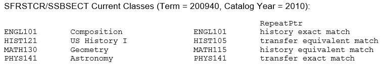
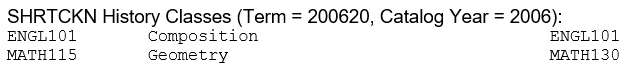
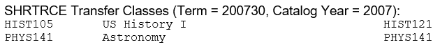
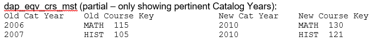
Repeats for renumbered courses identification
If a Banner class record has a Repeat Course Indicator of ‘I’ (historic - SHRTCKN_REPEAT_COURSE_IND, transfer - SHRTRCE_REPEAT_COURSE) and the course is not repeatable (class is being repeated for a better grade) then the equivalency table (dap_eqv_crs_mst) will be checked for a course equivalent.
If a new course equivalent is found for the given history or transfer class, the equivalent Course Key (Subject + Course Number) will be loaded into the rad_repeat_ptr on the appropriate RAD table (rad_class_dtl for historic classes and rad_transfer_dtl for transfer classes). Thus, when audits are processed the rad_repeat_ptr will contain the new Course Key that should be used in the requirement blocks defined using Scribe.